3 Arbeitsplätze und Tätigkeiten:
Gefährdungen und Maßnahmen
3.1 Grundsätzliche Gefährdungen und Maßnahmen
3.1.1 Gefährdung durch Absturz
Auf hochgelegenen Arbeitsplätzen und Verkehrswegen besteht die Gefahr des Absturzes von Personen auf eine tiefer gelegene Fläche oder einen Gegenstand. Absturz ist auch das Durchbrechen durch eine nicht tragfähige Fläche oder das Hineinfallen sowie das Versinken in flüssigen oder körnigen Stoffen. Als Absturzkante wird dabei die Kante an einem Arbeitsmittel oder einer baulichen Anlage bezeichnet, über die eine Person abstürzen kann. Die Absturzkante ist auch der Übergang von einer tragfähigen zu einer nicht tragfähigen Fläche.
|
|
Abb. 3 Sicherung von Deckenöffnungen (Schnittdarstellung) |
Abb. 4 Absturzsicherung durch Seitenschutz bzw. durch Fassadengerüst |
Abb. 5 Schutznetze und Randsicherung als Schutzmaßnahme beim Rückbau von Dachkonstruktionen
|
Gefährdungen
|
|
Bei Arbeiten an hochgelegenen Arbeitsplätzen ohne entsprechende Schutzmaßnahmen besteht grundsätzlich Absturzgefahr. Unfälle mit bleibenden Beeinträchtigungen der Gesundheit können schon beim Absturz aus geringen Höhen die Folge sein. Achten Sie bei der Nutzung von hochgelegenen Arbeitsplätzen oder Verkehrswegen insbesondere auf die folgenden Gefährdungen:
- Absturz nach innen und außen
- Durchsturz aufgrund unzureichender Tragfähigkeit
|
|
Maßnahmen
|
|
Allgemeine Anforderungen
Sorgen Sie dafür, dass Arbeitsplätze und Verkehrswege so eingerichtet werden, dass Gefährdungen durch Absturz von Personen vermieden werden.
Legen Sie die Maßnahmen gegen Absturz von Personen in Ihrer Gefährdungsbeurteilung nach dieser Rangfolge fest:
- Absturzsicherungen
- Auffangeinrichtungen
- Individueller Gefahrenschutz
Ziehen Sie technische Maßnahmen, die einen Absturz verhindern, den organisatorischen oder personenbezogenen Schutzmaßnahmen vor, siehe auch Abbildung 7 (Maßnahmenhierarchie).
An Arbeitsplätzen sind grundsätzlich ab 2 m Höhe Maßnahmen gegen Absturz zu treffen. Freiliegende Treppenläufe, Treppenabsätze oder Wandöffnungen müssen hingegen zwingend bereits ab einer Höhe von 1 m entsprechend gesichert werden.
Berücksichtigen Sie bei der Festlegung Ihrer Maßnahmen die Beschaffenheit der tiefer gelegenen Fläche, wie z. B. Flüssigkeiten (Ertrinken, Verätzen), Schüttgüter (Versinken), Beton oder Treppen (harter Aufschlag), Bewehrungsanschlüsse und Gegenstände/Maschinen.
Daher kann es notwendig sein, bereits bei sehr geringen Höhen Schutzmaßnahmen gegen Absturz zu ergreifen. Insbesondere bei Arbeitsplätzen oder Verkehrswegen an oder über Wasser oder anderen festen oder flüssigen Stoffen, in denen man versinken kann, sind bereits ab 0 m Höhe Maßnahmen gegen Absturz erforderlich.
| |
 |
Nähere Informationen zu Anforderungen bezüglich der Vermeidung von Absturzgefahren an Arbeitsstätten sind in der ArbStättV in Verbindung mit der ASR A2.1 zu finden. |
Ausführung der Absturzsicherung
Stellen Sie sicher, dass der Seitenschutz ausreichend dimensioniert und so ausgeführt ist, dass ein Hindurch- oder Hinüberfallen verhindert wird.
| |
 |
Informationen zur Ausführung des Seitenschutzes finden Sie im Baustein B 100 der BG BAU. |
Als Seitenschutz kann z. B. bei Dacharbeiten ein Randsicherungssystem verwendet werden.
Können aus arbeitstechnischen Gründen Seitenschutz- oder Randsicherungssysteme nicht verwendet werden, sind Auffangeinrichtungen, wie z. B. Dachfanggerüste, Fanggerüste oder Schutznetze einzusetzen.
| |
|
Informationen zu Auffangeinrichtungen finden Sie in den Bausteinen B 102, B 111, B 121 und C 345 der BG BAU. |
Lassen sich keine Absturzsicherungen oder Auffangeinrichtungen einrichten, sind persönliche Schutzausrüstungen gegen Absturz (PSAgA) als individuelle Schutzmaßnahme zu verwenden.
Beachten Sie, dass bei der Verwendung von PSAgA weitere Maßnahmen (z. B. gesonderte Gefährdungsbeurteilung, spezielle Unterweisung, Rettungskonzept) notwendig sind. Legen Sie vor Beginn der Arbeiten die geeigneten Anschlageinrichtungen für die PSAgA fest und achten Sie auf den erforderlichen Freiraum unterhalb des Standplatzes.
Wenn im Bereich von 2 m zur Absturzkante auf Flächen mit weniger als 22,5 Grad Neigung nicht gearbeitet werden muss und dieser Bereich mit einer festen Absperrung versehen wird (z. B. mit Geländer, Ketten, Seilen, jedoch keine Trassierbänder), darf auf sonstige Absturzsicherungen verzichtet werden. Beachten Sie, dass Ihre Beschäftigten entsprechend zu unterweisen sind.
Bei einer Absturzhöhe bis 3 m ist eine Absturzsicherung an Arbeitsplätzen und Verkehrswegen auf Dächern und Geschossdecken mit bis zu 22,5° Neigung und nicht mehr als 50 m² Grundfläche entbehrlich, sofern die Arbeiten von hierfür fachlich qualifizierten und körperlich geeigneten Beschäftigten ausgeführt werden, welche besonders unterwiesen sind. Die Absturzkante muss für die Beschäftigten deutlich erkennbar sein.
Sicherung gegen Durchsturz
Sorgen Sie dafür, dass die Gefahr des Durchsturzes verhindert wird. Dies kann z. B. erreicht werden durch:
- lastverteilende Beläge in Kombination mit Absturzsicherung (z. B. Seitenschutz, Schutznetze) auf nicht tragfähigen Flächen, z. B. Wellplatten aus Asbestzement, Fehlboden bei Holzbalkendecken oder alte Dachlatten
- Seitenschutz bzw. Fangnetze bei nicht durchtrittsicheren Lichtkuppeln oder -bändern
- tragfähige und unverschiebbare Abdeckungen auf Vertiefungen und Öffnungen in Böden und Decken oder durch Seitenschutz
Sichere Verkehrswege
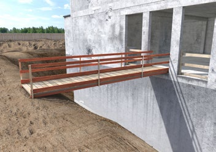
Abb. 6 Laufsteg mit Seitenschutz als Verkehrsweg
Als Verkehrswege sind Treppen, Aufzüge oder Laufstege geeignet. Vermeiden Sie den Einsatz von Leitern als Verkehrsweg.
| |
|
Sorgen Sie dafür, dass die Verkehrswege und Laufflächen sicher begehbar sind, z. B. Stolperstellen entfernen, von Schnee und Eis beräumen und ggf. abstumpfen. |
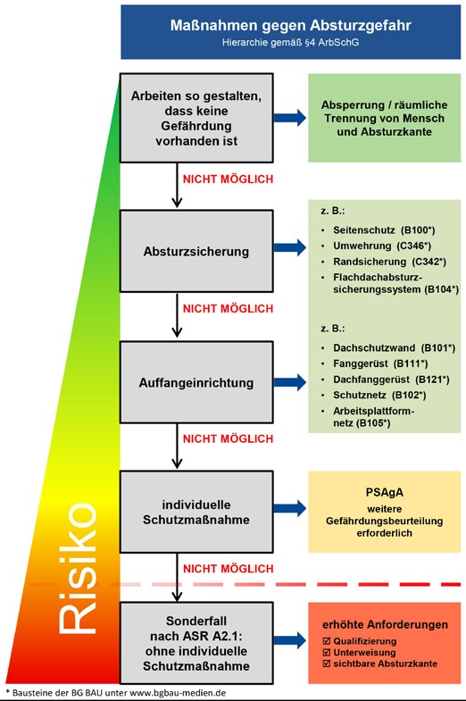
Abb. 7 Maßnahmen gegen Gefährdungen durch Absturz gemäß Arbeitsschutzgesetz
3.1.2 Gefahrstoffe
Beim Abbruch von Gebäuden und technischen Anlagen können Ihre Beschäftigten mit Gefahrstoffen in Kontakt kommen. Dies sind im Wesentlichen Gefahrstoffe, die in früher verwendeten Baumaterialien enthalten sein können oder aus der Nutzung des Objektes stammen. Kontakt zu Gefahrstoffen besteht auch beim Einsatz von Chemikalien oder Betriebsstoffen. Voraussetzung für die Durchführung der Gefährdungsbeurteilung und die Auswahl geeigneter Schutzmaßnahmen ist eine Ermittlung der Gefahrstoffe, die bei den Arbeiten freigesetzt werden können. In der Gefährdungsbeurteilung ist das STOP-Prinzip (Substitution – technische – organisatorische – personenbezogene Schutzmaßnahmen, in dieser Reihenfolge) zu berücksichtigen.
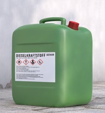
|
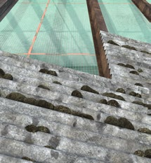
|
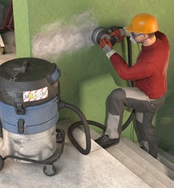
|
Abb. 8 Dieselkraftstoff |
Abb. 9 Asbestzementwellplatten |
Abb. 10 Bau-Entstauber (z. B. Filterklasse M) |
|
|
Weitere Informationen
|
- Spezielle Informationen zu Gefahrstoffen in Produkten sind in den Sicherheitsdatenblättern der Hersteller zu finden
- WINGIS-Gefahrstoffinformationssystem der BG BAU
► www.wingis-online.de
- GefKomm-Bau-Gefahrstoffkommunikation in der Lieferkette der Bauwirtschaft
► www.gefkomm-bau.de
- "Schadstoffratgeber Gebäuderückbau" LfU Bayern
► www.gesetze-im-internet.de
- Technische Regeln zu Arbeitsschutzverordnungen:
► https://www.lfu.bayern.de/abfall/schadstoffratgeber_gebaeuderueckbau/index.htm
|
|
Gefährdungen
|
|
Gefahrstoffe können über die Atemwege, die Haut oder durch Verschlucken in den menschlichen Körper gelangen. Von Gefahrstoffen wie z. B. Betriebsstoffen können auch Brand- und Explosionsgefahren ausgehen (siehe dazu Kapitel 3.1.6).
Bei den Gefahrenquellen ist zu unterscheiden zwischen:
Gefährdungen durch Chemikalien, wie z. B.
- reizende oder ätzende Stoffe
- gesundheitsschädliche Produkte (z. B. Verdünner)
- brennbare Produkte (z. B. Treibstoffe)

Gefährdungen durch die Freisetzung von Stäuben und Rauchen, z. B.
- beim Abbruch von Mauerwerk
- bei der Bearbeitung von Steinen und Hölzern (z. B. Bohren, Sägen und Schleifen)
- beim Entfernen von Beschichtungen (z. B. bleihaltige Farben)
- bei Brennschneid- und Schweißarbeiten, besonders bei beschichteten Stahlkonstruktionen
Gefährdungen durch Abgase in ganz oder teilweise geschlossenen Arbeitsbereichen (z. B. Hallen)
- Dieselmotoremissionen (DME) beim Einsatz dieselbetriebener Baumaschinen und Fahrzeuge
- Kohlenmonoxid beim Einsatz benzinbetriebener Baumaschinen
Gefährdungen durch Gefahrstoffe in Gebäuden oder Anlagen, z. B. bei Tätigkeiten
- mit Asbest (z.B. Asbestzementprodukten, CV-Beläge/Floor-Flex-Platten, Leichtbauplatten, Dichtungen in technischen Anlagen)
- mit teerstämmigen Materialien (z. B. Abdichtungsanstriche, Dachbahnen, Kleber für Holzfußböden)
- in kontaminierten Bereichen durch
- Gefahrstoffe aus industriell-gewerblicher Nutzung als Rückstände in Mauerwerk oder Anlagen
- Gebäudeschadstoffe (z. B. in mit Holzschutzmitteln behandelten Bauteilen, in dauerelastischen Fugenmassen)
- mit alter Mineralwolle (z. B. als Isolierung oder Trittschalldämmung)
| |
|
Bei Tätigkeiten in kontaminierten Bereichen sind besondere Regelungen zu beachten, siehe Kapitel 3.1.3 |
Abb. 11 Ausbau von Dämmplatten
|
|
Maßnahmen
|
|
Substitutionsprüfung
- Prüfen Sie zuallererst, ob Sie Ihr Arbeitsziel durch Produkte (Ersatzstoffe) mit geringerem Gefährdungspotential erreichen können. z.B. lösemittelfreie Produkte verwenden
- Prüfen Sie, inwieweit Sie emissions-/staubarme Arbeitsverfahren und Arbeitsmittel verwenden können.
- Ist Substitution nicht möglich, ergreifen Sie Maßnahmen nach dem TOP-Prinzip.
Maßnahmen bei der Verwendung von Chemikalien
- Haut- und Augenkontakt mit reizenden oder ätzenden Stoffen (z.B. reizende und ätzende Reinigungsmittel), durch Tragen von persönlichen Schutzausrüstungen verhindern
Maßnahmen gegen Gefährdungen durch Stäube und Rauchez. B.
- Stäube beim Abbruch von Gebäuden mit Wasser niederschlagen, z. B. Bedüsung, Vernebelung
- Einsatz von Nassbearbeitungsverfahren, z. B. Betondiamantbohren mit Schneidwasser anstatt Trockenbearbeitung
- Staub unmittelbar an der Entstehungsstelle absaugen: Einsatz handgeführter Baumaschinen (z. B. Trennschleifer, Putzfräsen, Betonschleifer oder Abbruchhämmer) mit direkter Absaugung
- Abschottung der Arbeitsbereiche
- Einsatz von Bau-Entstaubern zum Reinigen des Arbeitsbereiches und zur Absaugung handgeführter Arbeitsmittel
- Einsatz von Luftreinigern in Innenräumen zur Reduzierung der Staubbelastung im Arbeitsbereich
- Einsatz von Fahrzeugen mit geschlossenen Fahrerkabinen, die mit einem Filter ausgestattet sind
- Staubablagerungen oder Schutt sofort beseitigen, um Staubaufwirbelungen zu vermeiden
- Tragen von Atemschutzgeräten
| |
|
Weitere Informationen zum Thema Staub sowie
eine Liste staubarmer Bearbeitungssysteme finden
Sie im Internet unter ► www.bgbau.de./gisbau |
Maßnahmen gegen Gefährdungen durch Abgase
- Der Einsatz benzinbetriebener Maschinen führt in ganz oder teilweise geschlossenen Arbeitsbereichen zu hohen Kohlenmonoxidbelastungen. Verwenden Sie möglichst elektrisch betriebene Arbeitsmittel.
- Der Einsatz dieselbetriebener Baumaschinen und Fahrzeuge in ganz oder teilweise geschlossenen Arbeitsbereichen ist ohne Dieselpartikelfilter oder Ableitung der Abgase ins Freie nicht zulässig. Prüfen Sie, ob alternative Antriebe (Elektro, elektrohydraulisch oder Gas) eingesetzt werden können.
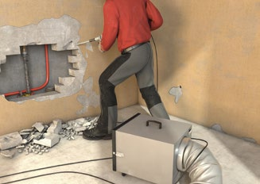
Abb. 12 Luftreiniger bei Stemmarbeiten
Erkundung, Informationsermittlung und Gefährdungsbeurteilung
Vor dem Abbruch oder der Demontage ist durch den Bauherrn zu ermitteln, ob im Objekt Schadstoffe vorhanden sind. Finden Sie bei Ihren Besichtigungen oder im Verlauf Ihrer Arbeiten entsprechende Hinweise, sind durch den Bauherrn Erkundungen zu veranlassen.
Zusammen mit der Ermittlung der weiteren Gefahrenquellen sind diese Informationen in Verbindung mit den angewandten Arbeitsverfahren die Grundlage Ihrer Gefährdungsbeurteilung.
Beachten Sie bei Ihrer Gefährdungsbeurteilung auch baustellenspezifische Randbedingungen, wie z. B.
- Arbeiten im Freien oder in geschlossenen Räumen
- klimatische Bedingungen (Temperatur)
- Brand- und Explosionsgefahren.
Betriebsanweisung
Liegt eine Gefährdung durch Gefahrstoffe vor, erstellen Sie vor Beginn der Arbeiten eine tätigkeitsbezogene Betriebsanweisung.
3.1.3 Kontaminierte Bereiche
Arbeiten in kontaminierten Bereichen können sämtliche Abbruch- und Rückbauarbeiten betreffen. Kontaminierte Bereiche sind insbesondere Standorte (Liegenschaften, Grundstücke), bauliche Anlagen, Produktionsanlagen und Ablagerungen, die über eine gesundheitlich unbedenkliche Grundbelastung hinaus mit Gefahrstoffen oder Biostoffen verunreinigt sind. Auch Tätigkeiten mit Kontakt zu Gebäudeschadstoffen wie teerstämmige Materialien, Holzschutzmittel oder Polychlorierte Biphenyle (PCB)-haltige Bauprodukte stellen Arbeiten in kontaminierten Bereichen dar. Eine Kontamination kann auch durch einen Brandschaden verursacht sein.
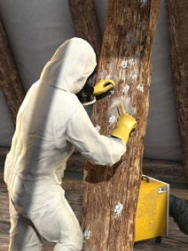
|
|
Abb. 13 Sanierung eines holzschutzmittel-
belasteten Dachstuhls |
Abb. 14 Brandschadensanierung |
|
|
Gefährdungen
|
|
Bei Abbrucharbeiten in kontaminierten Bereichen können insbesondere Gefährdungen auftreten durch:
- Gefahrstoffe oder Biostoffe, die durch eine gewerbliche oder industrielle Nutzung des Objektes in Bau- und Anlagenteile oder in den Untergrund eingetragen wurden.
- Gefahrstoffe aus den verwendeten Baustoffen (abhängig vom Zeitraum der Erstellung, Umbau, Instandhaltung des Bauwerkes), wie z. B. teerhaltige Dachbahnen, Kleber bzw. Isolieranstriche, Holzschutzmittel oder PCB-haltige Anstriche bzw. Fugenmassen
- einen Brandschaden
- Biostoffe wie Schimmelpilze, Tierexkremente oder Keime mit hohem Infektionsrisiko
|
|
Maßnahmen
|
|
Planungsphase des Auftraggebers/Bauherrn
Sind Arbeiten in kontaminierten Bereichen auszuführen, hat der Auftraggeber/Bauherr eine umfassende Erkundung durchzuführen und einen Arbeits- und Sicherheitsplan zu erstellen. Der Arbeits- und Sicherheitsplan enthält insbesondere folgende Angaben:
- Ergebnisse der Erkundungen
- stoffliche Eigenschaften der anzutreffenden bzw. zu vermutenden Gefahr- bzw. Biostoffe (inkl. Bewertung der Mobilität)
- Beschreibung der auszuführenden Tätigkeiten
- Beschreibung der zu treffenden Schutzmaßnahmen auf der Grundlage einer Expositionsabschätzung
- Angaben zur messtechnischen Überwachung
Über die Aufgaben des Auftraggebers/Bauherrn und die Anforderungen an die Inhalte des Arbeits- und Sicherheitsplan können Sie sich in der DGUV Regel 101-004 und der TRGS 524 weiter informieren.
Nach TRGS 524 sind die gemäß den Ergebnissen des Arbeits- und Sicherheitsplans zu treffenden Maßnahmen in der Ausschreibung des Auftraggebers entweder im Einzelnen zu beschreiben oder der Arbeits- und Sicherheitsplan ist Bestandteil der Ausschreibung.
| |
|
Liegen trotz Ihres begründeten Verdachts, dass die beauftragten Abbruch- und Rückbauarbeiten als "Arbeiten in kontaminierten Bereichen" einzustufen sind, keine wie oben geschilderten Angaben oder kein Arbeits- und Sicherheitsplan vor, müssen Sie davon ausgehen, dass Sie zur Durchführung der Gefährdungsbeurteilung keine ausreichenden Kenntnisse über die auf der Baustelle vorzufindende Situation haben.
Fragen Sie in diesem Fall bei Ihrem Auftraggeber/Bauherrn nach. Wenn Sie als Nachunternehmer bzw. Nachunternehmerin tätig sind, wenden Sie sich an Ihren Auftraggeber.
Beginnen Sie die Arbeiten erst, wenn Sie die betreffenden Informationen erhalten haben. Auf dieser Grundlage führen Sie Ihre Gefährdungsbeurteilung durch und legen die Schutzmaßnahmen fest. |
Arbeitsvorbereitung des ausführenden Unternehmens
- Führen Sie auf der Grundlage des Arbeits- und Sicherheitsplans des Auftraggebers/Bauherrn die Gefährdungsbeurteilung durch.
- Prüfen Sie, ob die im Arbeits- und Sicherheitsplan beschriebenen Maßnahmen auch für das von Ihnen vorgesehene Arbeitsverfahren ausreichend sind.
- Legen Sie die Schutzmaßnahmen gemäß Ihrer Gefährdungsbeurteilung fest.
- Organisieren Sie in Zusammenarbeit mit Ihrer Betriebsärztin oder Ihrem Betriebsarzt die erforderliche Arbeitsmedizinische Vorsorge.
- Erstellen Sie die stoff- und tätigkeitsbezogenen Betriebsanweisungen.
- Führen Sie die Unterweisungen der Beschäftigten durch. Diese muss auch die sichere Anwendung besonderer PSA wie Atemschutz, Chemikalienschutzkleidung und -handschuhe beinhalten.
- Stellen Sie sicher, dass Bauleitung und Aufsichtführende ausreichende Kenntnisse zu Sicherheit und Gesundheitsschutz bei Arbeiten in kontaminierten Bereichen besitzen und mit den besonderen Gefahren der Abbruchmaßnahme vertraut sind.
- Ist auf einer Baustelle nur Ihr Unternehmen allein tätig, stellen Sie sicher, dass die Arbeiten in kontaminierten Bereichen von einer weisungsbefugten und nach DGUV Regel 101-004 sachkundigen Person begleitet werden.
- Sorgen Sie dafür, dass besondere Ausrüstungen wie z. B. besondere Hygieneeinrichtungen ("Schwarz-Weiß-Anlagen"), Einrichtungen zur Belüftung oder Staubminderung betriebsbereit vorgehalten werden.
- Halten Sie, wenn gemäß Gefährdungsbeurteilung eine Überwachung von Gefahrstoffen notwendig ist, die erforderlichen Mess- oder Warngeräte sowie die zu deren sicherem Einsatz notwendigen Einrichtungen (Prüfstationen, Prüfgase) betriebsbereit vor. Sorgen Sie dafür, dass arbeitstäglich die erforderlichen Funktionskontrollen durchgeführt werden und stellen Sie sicher, dass die mit den Messungen beauftragten Personen im Umgang mit den Geräten unterwiesen sind.
- Organisieren Sie die sichere Lagerung der PSA und bei Einsatz mehrfach verwendbarer PSA (insbesondere Atemschutzgeräte und Chemikalienschutzkleidung) deren Wartung und Pflege.
- Legen Sie beim Einsatz belastender PSA (Atemschutz, Chemikalienschutzkleidung) die maximale Tragedauer und die tragefreien Zeiten fest. Berücksichtigen Sie dabei auch die Anpassungsfaktoren für Arbeitsschwere, hohe Umgebungstemperatur, Luftfeuchte.
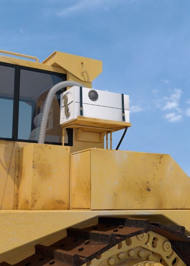
Abb. 15 Filteranlage zur Atemluftversorgung des Geräteführers
Zeigen Sie die Arbeiten in kontaminierten Bereichen spätestens 4 Wochen, bei Tätigkeiten mit Gebäudeschadstoffen 14 Tage vor Beginn dem zuständigen Träger der gesetzlichen Unfallversicherung schriftlich an (Inhalte der Anzeige siehe Anhang 1 der DGUV Regel 101-004 Kontaminierte Bereiche).
Abb. 16 Abschleifen PAK-haltiger Kleber
| |
|
Werden bei den Arbeiten bisher nicht bekannte Kontaminationen angetroffen, sind unverzüglich folgende Maßnahmen zu treffen:
- Arbeiten sofort einstellen
- Gefahrenbereich verlassen und sichern
- Aufsichtführenden verständigen
- Auftraggeber und zuständigen Unfallversicherungsträger informieren
- Arbeiten erst wieder aufnehmen, wenn durch den Bauherrn die Situation geklärt ist und der Arbeits- und Sicherheitsplan vorliegt bzw. angepasst wurde
|
3.1.4 Biostoffe
Bei Abbrucharbeiten können die Beschäftigten mit biologischen Arbeitsstoffen (Biostoffen) wie z. B. Schimmelpilzen, Taubenkot oder Exkrementen von Nagetieren in Kontakt kommen. Auch bei Arbeiten mit Abwasserkontakt oder an Lüftungsanlagen sowie in medizinisch genutzten Bereichen (z. B. Krankenhäuser), in Laboratorien oder Gebäuden, die zur Tierhaltung genutzt sind, muss eine Gefährdung durch Biostoffe berücksichtigt werden. Biostoffe können bei Menschen u. a. Infektionen, sensibilisierende oder toxische Wirkungen hervorrufen. Mit richtig ausgewählten Arbeitsverfahren und der abgestimmten persönlichen Schutzausrüstung können Sie diese Gefährdung vermeiden.
|
|
Abb. 17 Schimmelpilze |
Abb. 18 Verunreinigungen durch Taubenkot |
|
|
Gefährdungen
|
|
Biostoffe sind im weitesten Sinne Mikroorganismen wie Bakterien, Viren und Pilze, die Infektionserkrankungen verursachen und durch sensibilisierende oder toxische Wirkungen die Gesundheit der Beschäftigten gefährden können.
Infektionsgefahren
Biostoffe werden entsprechend des von ihnen ausgehenden Infektionsrisikos in eine Risikogruppe eingestuft. Bei Biostoffen der Risikogruppe 1 ist es unwahrscheinlich, dass sie beim Menschen eine Infektionserkrankung verursachen.
Biostoffe der Risikogruppe 4 können beim Menschen eine schwere Krankheit hervorrufen und stellen eine ernste Gefahr dar.
Bei Abbruchmaßnahmen kommen die Beschäftigten überwiegend mit Biostoffen der Risikogruppen 1 oder 2 in Kontakt. Beispiele für Biostoffe der Risikogruppe 2 sind der Tetanuserreger oder Noro-Viren, die bei Kontakt zu Abwasser übertragen und zu Magen-Darm-Erkrankungen führen können.
Erreger der Risikogruppe 3 können z. B. auftreten
- in Bereichen, die mit Taubenkot (Chlamydien) oder Ausscheidungen von Nagetieren (Hantaviren, Leptospiren) verunreinigt sind oder
- auf Gerbereistandorten (Milzbranderreger).
| Risikogruppe |
Krankheit |
Gefahr für Beschäftigte |
Verbreitung in der Bevölkerung |
Vorbeugung Behandlung möglich |
| 1 |
unwahrscheinlich |
gering |
nein |
nicht erforderlich |
| 2 |
möglich |
möglich |
unwahrscheinlich |
ja |
| 3 |
möglich, schwer |
ernsthaft |
möglich |
ja |
| 4 |
ja, schwer |
ernsthaft |
u. U. groß |
nein |
Infektionsgefährdungen sind insbesondere bei Tätigkeiten mit Kontakt zu Abwasser, in Anlagen der Abfallwirtschaft, Krankenhäusern, Laboratorien und in der Biotechnologie zu berücksichtigen.
Sensibilisierende und toxische Wirkungen
Sensibilisierende und toxische Wirkungen werden bei der Einteilung in Risikogruppen nicht berücksichtigt. Die entsprechenden Gefährdungen müssen bei der Gefährdungsbeurteilung gesondert berücksichtigt werden. Zu den sensibilisierenden Biostoffen zählen u. a. Schimmelpilze und bestimmte Bakterien (Aktinomyzeten). Toxische Wirkungen können von Stoffwechselprodukten und Zellbestandteilen ausgehen. Beispiele sind Mykotoxine aus Schimmelpilzen.
| |
|
Hinweis
Eine Übersicht der atemwegssensibilisierenden
Stoffe finden Sie in der TRBA 406. |
Aufnahmepfade
Biostoffe können durch Einatmen, Verschlucken oder Aufnahme über die Haut in den Körper gelangen: Eine Aufnahme über die Atemwege erfolgt insbesondere bei der Freisetzung oder Aufwirbelung von Stäuben, in dem Biostoffe enthalten sind (Bioaerosole),
- Die Aufnahme durch Verschlucken erfolgt z. B. durch Berühren des Mundes mit verschmutzten Händen, Handschuhen oder Gegenständen (Schmierinfektion),
- Aufgeweichte Haut bei Feuchtarbeiten, Spritzer in die Augen, trockene und rissige Haut sowie Verletzungen der Haut ermöglichen auch das Eindringen der Stoffe in den Körper.
|
|
Maßnahmen
|
|
Gefährdungsbeurteilung
Vor Beginn der Arbeiten ist zu prüfen, ob eine Gefährdung durch Biostoffe vorliegt. Entsprechende Informationen sind vom Auftraggeber/Bauherrn zu liefern bzw. fordern Sie sie ein. Wichtige Grundlage für die Gefährdungsbeurteilung sind Informationen über die Eigenschaften der am Arbeitsplatz vorkommenden Biostoffe (Infektionsrisiko, sensibilisierende, toxische und sonstige die Gesundheit schädigenden Wirkungen), die Übertragungswege bzw. Aufnahmepfade der Stoffe in den Körper (Atemwege, Mund, Haut/Schleimhäute) sowie Informationen über Art, Ausmaß und Dauer der Exposition.
Allgemeine Hygienemaßnahmen
Treffen Sie bei allen Tätigkeiten mit Kontakt zu Biostoffen allgemeine Hygienemaßnahmen. Hierzu zählen insbesondere:
Technische und bauliche Maßnahmen
Organisatorische Maßnahmen
- Verschmutzte Arbeitsgeräte und Ausrüstungsgegenstände nach den Tätigkeiten reinigen
- Vor den Pausen und nach den Tätigkeiten Hände und Gesicht gründlich waschen, um Schmierinfektionen zu vermeiden
- Von den Arbeitsbereichen getrennte Aufbewahrung der
Pausenverpflegung
- Arbeitskleidung und persönliche Schutzausrüstungen regelmäßig und bei Bedarf wechseln und reinigen
- getrennte Aufbewahrung von Arbeitskleidung, PSA und privater Kleidung
- Arbeitsräume regelmäßig und zusätzlich bei Bedarf reinigen
- Pausenräume nicht mit verschmutzter Arbeitskleidung oder Persönlicher Schutzausrüstung betreten
- an Arbeitsplätzen nicht essen, trinken und rauchen
- Abfälle in geeigneten Behältnissen sammeln
- Beschäftigte bezüglich Erste-Hilfe-Maßnahmen unterweisen und entsprechende Materialien bereithalten
Persönliche Schutzausrüstungen
Stellen Sie Ihren Beschäftigten geeignete persönliche Schutzausrüstungen zur Verfügung. Diese setzt sich abhängig von den Tätigkeiten aus Schutzhandschuhen, Schutzkleidung, Gesichts- oder Augenschutz, Atemschutz und Fußschutz zusammen.
3.1.5 Elektrische Gefährdungen
Elektrische Spannungen größer 50 Volt stellen immer eine potentielle Gefahr dar, da sie bei Kontakt mit dem menschlichen Körper Durchströmungen mit tödlichem Ausgang verursachen können. Ein Kontakt mit elektrischer Spannung ist auf verschiedene Art und Weise möglich. Im Arbeitsbereich sind häufig elektrische Freileitungen, erdverlegte Kabel oder elektrische Anlagen anzutreffen, von denen eine Gefährdung ausgehen kann. Weiterhin können Gefährdungen durch Fehler in elektrischen Anlagen, unzureichende Schutzmaßnahmen oder ungeeignete Arbeitsmittel entstehen.
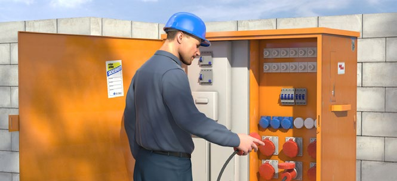
Abb. 20 Baustromverteiler zur sicheren Stromversorgung einer Baustelle

|

|
Symbol "Warnung vor elektrischer Spannung" (W012) |
Symbol "Vor Wartung oder Reparatur freischalten" (M021) |
|
Gefährdungen
|
|
Achten Sie bei Abbrucharbeiten insbesondere auf elektrische Gefährdungen hinsichtlich Körperdurchströmungen und auf thermische Einwirkungen durch Lichtbögen. Diese Gefährdungen können insbesondere hervorgerufen werden durch:
- Nutzung von Anschlussstellen ohne oder mit ungeeigneten Fehlerstrom-Schutzeinrichtungen
- Arbeiten mit ungeeigneten oder beschädigten Arbeitsmitteln
- Abbruch-, Stemm-, Bohr- und Sägearbeiten im Bereich bestehender elektrischer Leitungen und Anlagen sowie Photovoltaikanlagen
- Kontakt oder Unterschreitung von Mindestabständen zu Freileitungen durch Personen, Gerüstbauteile, Baugeräte und -maschinen
- Beschädigungen von erdverlegten Kabeln bei Erdarbeiten, z. B. bei Stemmarbeiten, Schachtarbeiten
- Arbeiten in engen und leitfähigen Umgebungen, wie z. B. in Gräben, Schächten, Kanälen usw.
- ungeeignete mobile Stromerzeuger
|
|
Maßnahmen
|
|
Gefährdungsbeurteilung
Stellen Sie in der Gefährdungsbeurteilung fest, welche elektrischen Gefährdungen im Arbeitsbereich auftreten.
Sichere Anschlussstellen
Verwenden Sie zum Betrieb Ihrer elektrischen Arbeitsmittel nur geprüfte Anschlusspunkte (mit 30 mA-Fehlerstrom-Schutzeinrichtungen).
| |
|
Auf Baustellen ohne Baustromverteiler können alternativ ortsveränderliche Schutzeinrichtungen, z. B. PRCD-S, verwendet werden. |
Beachten Sie, dass beim Einsatz frequenzgesteuerter Arbeitsmittel (z. B. Krane, Betonsägen) allstromsensitive Fehlerstrom-Schutzeinrichtungen (Typ B) zum Einsatz kommen müssen.
Sichere Arbeitsmittel
Verwenden Sie nur Arbeitsmittel, die für den gewerblichen Einsatz geeignet sind und der Beanspruchung am Arbeitsplatz genügen.

Abb. 21 Allstromsensitive Fehlerstrom- Schutzeinrichtung mit den dazugehörigen Symbolen
| |
|
Verwenden Sie vorzugsweise Handgeräte der Schutzklasse II, welche auch für den rauen Betrieb geeignet sind und erforderlichenfalls einen Nässeschutz aufweisen oder Schutzklasse III (Schutzkleinspannung). |

|
Abb. 22a
Symbol für doppelte oder verstärkte Isolation (Schutzklasse II) |

|
Abb. 22b
Mit dem Hammersymbol werden Betriebsmittel gekennzeichnet, welche für den "rauen Betrieb" geeignet sind. |

|
Abb. 22c
Beispiel für Kennziffer des Schutzgrades elektrischer Betriebsmittel |

|
Abb. 22d
Symbol für Schutzkleinspannung (Schutzklasse III) |
Setzen Sie nur bewegliche Leitungen der Bauarten H07RN-F oder H07BQ-F ein. Eine Ausnahme stellen Geräteanschlussleitungen bis 4 m Länge dar, hier sind auch Leitungen der Bauarten H05RN-F oder H05BQ-F geeignet. Achten Sie bei Leitungsrollern zusätzlich darauf, dass Tragegriff, Kurbelgriff und Trommel aus Isolierstoff bestehen oder mit Isolierstoff umhüllt sind und das Gehäuse mindestens Schutzart IP 44 erfüllt.
| |
|
Einen guten Schutz gegen elektrische Gefährdungen durch das Gerät selbst kann die Verwendung von akkubetriebenen Handmaschinen bieten. |
Unterweisen Sie Ihre Beschäftigten im Umgang mit den Arbeitsmitteln und stellen Sie dazu Betriebsanweisungen auf. Dokumentieren Sie die Unterweisungen.
Sorgen Sie dafür, dass nur unbeschädigte und durch eine Elektrofachkraft geprüfte Arbeitsmittel (Prüfplakette beachten) benutzt werden.
Die Prüfungen sind nachzuweisen und die Dokumentation bis zur nächsten Prüfung aufzubewahren.

Abb. 23 Prüfplakette
Sorgen Sie dafür, dass die Arbeitsmittel einer regelmäßigen Sichtprüfung unterzogen werden, um Schäden frühzeitig zu erkennen. Motivieren Sie auch Ihre Beschäftigten, Schäden und Mängel an Arbeitsmitteln umgehend zu melden.
Elektrische Leitungen im Bestand
Ermitteln Sie die im Arbeitsbereich verlaufenden unter Spannung stehenden elektrischen Leitungen. Veranlassen Sie die Freischaltung der elektrischen Leitungen. Sorgen Sie dafür, dass diese Leitungen nicht wieder unter Spannung gesetzt werden können.
Arbeiten in der Nähe von Freileitungen
Wenn in der Nähe von elektrischen Freileitungen gearbeitet werden muss, stellen Sie sicher, dass
- der Betreiber der Freileitungen Kenntnis von den durchzuführenden Arbeiten hat,
- den Anweisungen des Betreibers der Freileitung Folge eleistet wird,
- der Betreiber (Anlagenverantwortliche) den spannungsfreien Zustand hergestellt und für die Dauer der Arbeiten sichergestellt hat und die Durchführungserlaubnis an den Arbeitsverantwortlichen erfolgt ist,
- die Mindestabstände zu den Freileitungen nicht unterschritten werden (siehe Tabelle) oder die aktiven Teile für die Dauer der Arbeiten, insbesondere unter Berücksichtigung von Spannung, Betriebsort, Art der Arbeit und der verwendeten Arbeitsmittel, abgedeckt oder abgeschrankt wurden.
| Nennspannung |
Mindestabstand |
| bis 1000 V |
1,0 m |
| über 1 kV bis 110 kV |
3,0 m |
| über 110 kV bis 220 kV |
4,0 m |
| über 220 kV bis 380 kV |
5,0 m |
| oder bei unbekannter Nennspannung |
5,0 m |
Tabelle Mindestabstände in Abhängigkeit zu den Nennspannungen
Photovoltaikanlagen
Führen Sie Arbeiten im Bereich von fest installierten Photovoltaikanlagen erst durch, nachdem Ihnen eine Elektrofachkraft eindeutige Arbeitsanweisungen erteilt hat.
Erdverlegte Kabel
Erkunden Sie vor Beginn der Arbeiten, ob erdverlegte Kabel im Baufeld vorhanden sind. Lassen Sie sich diese gegebenenfalls einmessen und den Verlauf kennzeichnen. Informieren Sie die Betreiber aller Kabel und Leitungen vor Arbeitsaufnahme. Erfragen Sie die Kontaktdaten der Verbindungsperson, um im Falle des Antreffens unbekannter Kabel oder gar Beschädigung die richtigen Maßnahmen ergreifen und den Betreiber kurzfristig informieren zu können.
Weitere Schutzmaßnahmen bei erdverlegten Leitungen sind z. B.
- Umlegen gefährdeter Leitungen in Abstimmung mit dem Leitungsbetreiber
- Befestigen, Unterstützen oder Abfangen freigelegter Leitungen
- Einhaltung der vom Leitungsbetreiber vorgegebenen Schutzabstände
- Beachtung der Schutzanweisungen der Leitungsbetreiber
Betrachten Sie erdverlegte Kabel und Leitungen so lange als unter Spannung stehend, bis vom Betreiber die Spannungsfreiheit ausdrücklich bestätigt wird.
Enge und leitfähige Umgebungen
Da die elektrische Gefährdung in engen und leitfähigen Umgebungen besonders groß ist, dürfen Arbeitsmittel ausschließlich über Trenntransformatoren oder durch Schutzkleinspannung betrieben werden. Stellen Sie eine ausreichende Zahl an Trenntransformatoren zur Verfügung.
| |
|
Für jedes Arbeitsmittel muss ein separater Trenntransformator verwendet werden. |
|
3.1.6 Brand- und Explosionsgefährdungen
Eine Brand- und/oder Explosionsgefährdung kann in Arbeitsbereichen vorliegen, in denen brennbare Gefahrstoffe vorhanden sind, eingesetzt oder freigesetzt werden. Bei Baustellen auf denen z. B. Brenn- oder Schweißarbeiten ausgeführt werden und Lager mit brennbaren Gefahrstoffen sind, besteht eine hohe Brandgefährdung. Ermitteln Sie im Vorfeld mögliche Brand- und Explosionsgefahren
im Rahmen der Gefährdungsbeurteilung. Beachten Sie auch Wechselwirkungen mit anderen Gewerken.
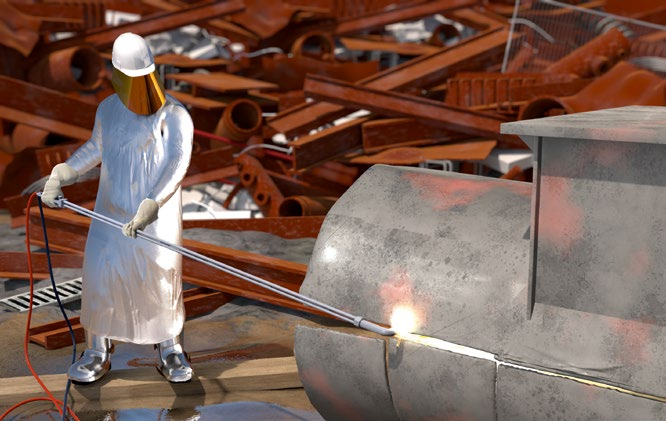
Abb. 24 Einsatz Sauerstofflanze
|

|

|
Symbol "Flamme (Leicht-/Hochentzündlich)" (GHS 02) |
Symbol "Warnung vor explosionsfähiger Atmosphäre" (D-W021) |
|
Gefährdungen
|
|
Eine Brandgefährdung kann in Arbeitsbereichen vorliegen, in denen brennbare Gefahrstoffe vorhanden sind. Dazu zählen bauchemische Produkte, wie z. B. lösemittelhaltige Farben und Lacke, Klebstoffe, Treibstoffe (z. B. Benzin), technische Gase (z. B. Propan) und entzündbare Sprays. Brennbar sind auch Papier, Holz, Kunststoffe, sowie viele andere Baustoffe und deren Abfälle.
Explosionsgefährdungen bestehen, wenn Dämpfe brennbarer Flüssigkeiten/Gase oder brennbare Stäube mit Luft eine gefährliche explosionsfähige Atmosphäre bilden, die entzündet werden kann. Beispiele:
- Ansammlung von entzündbaren Gasen wie Propan, Butan, Acetylen oder brennbaren Lösemitteldämpfen
- Entstehung und Aufwirbeln von Metall- und Holzstäuben
- austretende Gase bzw. Dämpfe bei der Lagerung von brennbaren Flüssigkeiten und Gasen
- Erwärmung von brennbaren Flüssigkeiten
Brand- und Explosionsgefahr besteht auch beim Vorhandensein von nicht erkannten oder aufgebrochenen Kampfmitteln.
| |
|
Stellen Sie in der Gefährdungsbeurteilung fest, ob und in welcher Menge brennbare Gefahrstoffe am Arbeitsplatz vorhanden sind oder freigesetzt werden. Erste Hinweise kann bei gekauften Bauprodukten die Kennzeichnung auf dem Gebinde liefern. |
|
|
Maßnahmen
|
|
Legen Sie Schutzmaßnahmen entsprechend Ihrer Gefährdungsbeurteilung fest.
Unterweisen Sie Ihre Beschäftigten hinsichtlich Brand- und Explosionsgefährdungen.
Sichere Verwendung von Flüssiggas
Beachten Sie, dass Flüssiggasflaschen nur in der für den Fortgang der Arbeiten erforderlichen Anzahl am Arbeitsplatz aufgestellt werden dürfen. Sorgen Sie dafür, dass flüssiggasbefeuerte Geräte, die aus Behältern mit mehr als 1 l Rauminhalt versorgt werden, über Erdgleiche mit Schlauchbruchsicherung und unter Erdgleiche mit Leckgassicherungen oder Druckgasreglern mit integrierter Dichtheitsprüfeinrichtung und einer Schlauchbruchsicherung betrieben werden.
Tätigkeiten mit Gefahrstoffen
Ersetzen Sie, wenn möglich, brennbare Gefahrstoffe durch nicht brennbare, z. B. durch Einsatz von wasserbasierten Produkten.
Werden brennbare Flüssigkeiten wie lösemittelhaltige Farben und Lacke, Klebstoffe oder Holzschutzmittel versprüht, dann können sie schon weit unter ihrem Flammpunkt entzündet werden. Brennbare, unter Druck verflüssigte Gase, z. B. Propan oder Butan, nehmen versprüht ein bis 300-fach vergrößertes Volumen ein, als in der Spraydose.
Vorsicht bei mit brennbaren Stoffen getränkter Kleidung! Kein offenes Feuer, keine glimmenden Zigaretten!
Sorgen Sie dafür, dass freiwerdende Gefahrstoffe, die zu Brand- oder Explosionsgefährdungen führen können, an ihrer Austritts- oder Entstehungsstelle beseitigt werden. Dämpfe und Gase können beispielsweise abgesaugt, Flüssigkeitslachen aufgefangen werden. Ablagerungen brennbarer Stäube sind regelmäßig zu entfernen. Bei der Absaugung sind geeignete Maschinen einzusetzen, gegebenenfalls in explosionsgeschützter Bauweise.
| |
|
Mit dem Gefahrstoffinformationssystem der BG BAU, WINGIS oder WINGIS-online, erstellen Sie eine Betriebsanweisung im Sinne der Gefahrstoffverordnung. |
Vermeidung von Zündquellen
Entfernen Sie geeignete Zündquellen, wenn Brand- und Explosionsgefahren bestehen. Dazu zählen offenes Feuer wie Flammen und glimmende Zigaretten, heiße Oberflächen von Verbrennungsmotoren und Heizungen, Schweißspritzer, Lampen, Schweißgeräte, elektrostatische Entladung von Personen oder Arbeitsmitteln, Selbstentzündung.
| |
|
Putzlappen, die mit Fetten und Ölen wie z. B. Holzöle, Leinöl getränkt sind, können sich an der Luft selbst entzünden. Bewahren Sie sie daher nur in geeigneten verschließbaren nichtbrennbaren Behältern auf. |
Besonderheiten bei Brandgefährdung
Zu den Arbeiten mit Brandgefährdung zählen u. a. Flamm-, Schweiß-, Lötarbeiten und Arbeiten mit dem Trennschleifer. Verwenden Sie bei diesen Arbeiten ein Freigabesystem, z. B. in Form eines Erlaubnisscheines.
| |
|
Ein Muster-Erlaubnisschein ist im Infoblatt Nr. 03 "Erlaubnisschein für Schweiß-, Schneid-, Löt-, Auftau- und Trennschleifarbeiten" des Sachgebiets "Betrieblicher Brandschutz" sowie im Anhang 4.3 abgedruckt. |
Werden Arbeiten mit einer Brandgefährdung, z. B. Schweißen, Trennschleifen oder Löten, durchgeführt, ist für jedes dabei eingesetzte Heiß-Arbeitsmittel ein geeigneter Feuerlöscher mit mindestens 6 Löschmitteleinheiten vorzuhalten.
Organisieren Sie, dass nach Beendigung der brandgefährdenden Arbeiten der brandgefährdete Bereich auf Entstehungsbrände kontrolliert und ggf. Kontrollgänge durchgeführt bzw. eine Brandwache gestellt werden. Kann durch das Entfernen brennbarer Stoffe und Gegenstände eine Brandgefährdung nicht verhindert und eine explosionsfähige Atmosphäre nicht ausgeschlossen werden, haben Sie ergänzende Maßnahmen festzulegen und für deren Durchführung zu sorgen. Ergänzende Maßnahmen können z. B. sein:
- Abdecken verbleibender brennbarer Stoffe und Gegenstände
- Abdichten von Öffnungen benachbarter Bereiche
- Bereitstellen geeigneter Feuerlöscheinrichtungen nach Art und Umfang
- Sicheres Abdichten gegenüber Atmosphäre
- Überwachung der Wirksamkeit der Maßnahmen während der Arbeiten
- Bereitstellung und Einsatz eines mobilen Brandmeldesystems
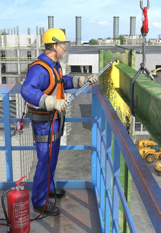
Abb. 25 Schneidbrennarbeiten
Beachten Sie, dass bei Feuerarbeiten durch Wechselwirkungen mit anderen Tätigkeiten Gefährdungen entstehen können, z. B. durch die Anreicherung von brennbaren Lösemitteldämpfen am Boden und gleichzeitiger Verwendung von funkenwerfenden Geräten.
Kampfmittel
Sorgen Sie dafür, dass beim Antreffen von Kampfmitteln jeglicher Art die Arbeiten sofort unterbrochen werden.
Stimmen Sie die weiteren notwendigen Maßnahmen mit den zuständigen Stellen (z. B. Kampfmittelbeseitigungsdienst) und dem Bauherrn ab.

|

|
Zeichen für "Feuerlöscher" (F001) |
Zeichen für "Mittel und Geräte zur Brandbekämpfung" (F004) |
Brandschutzzeichen
Brandschutzzeichen sind rot und tragen ein Flammensymbol. Sie stehen auch im Flucht- und Rettungsplan.
Brandschutzhelfer/Brandschutzhelferinnen
Bei der Ausstattung von Arbeitsstätten und bei stationären Baustelleneinrichtungen wie Baubüros, Unterkünften oder Werkstätten ergibt sich die Anzahl an Brandschutzhelfern bzw. Brandschutzhelferinnen aus der Gefährdungsbeurteilung. Wenn ein Anteil von 5 % der Beschäftigten als Brandschutzhelfer bzw. Brandschutzhelferinnen ausgebildet wird, ist das in der Regel ausreichend. Auf Baustellen gilt diese Anforderung nicht. Allerdings sind Personen, die auf Baustellen Tätigkeiten mit Brandgefährdung ausführen, wie z. B. Flammarbeiten, Schweißen, Brennschneiden, Trennschleifen, Löten, Oberflächenbehandlungen, im Umgang mit Feuerlöscheinrichtungen zu unterweisen. Diese Unterweisung beinhaltet einen theoretischen und einen praktischen Teil.
Bereitstellung/Lagerung von Gefahrstoffen
Stellen Sie die für Ihre Anwendung erforderlichen Gefahrstoffe für die sofortige Verwendung bereit anstatt sie zu lagern.
Die Bereitstellung von Gefahrstoffen ist das kurzzeitige Aufbewahren für eine sofortige Verwendung, z. B. am Arbeitsplatz. Werden Gefahrstoffe länger als 24 Stunden aufbewahrt oder sind in größeren Mengen als dem Tagesbedarf vorhanden, müssen entsprechende Lager eingerichtet werden. Diese unterliegen den Anforderungen der Gefahrstoffverordnung und des Wasserhaushaltsgesetzes. Bereiche, in denen mehr als 200 kg entzündliche Gefahrstoffe gelagert werden, sind mit dem Warnzeichen W021 (siehe Abb. AR-039) zu kennzeichnen.

Zeichen für die "Warnung vor feuergefährlichen Stoffen" (W021)
|
3.1.7 Gefährdung durch Lärm
Lärm ist jeder Schall, der bei Tätigkeiten im Abbruch zu Hörminderungen oder Gehörschäden oder zu einer sonstigen mittelbaren oder unmittelbaren Gefährdung von Sicherheit und Gesundheit der Beschäftigten führen kann.
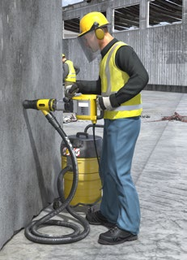
|
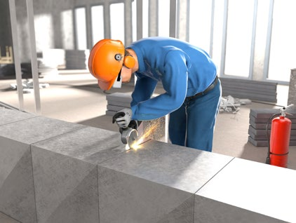
|
Abb. 26 Persönliche Schutzausrüstung bei
Arbeiten mit dem Bohrhammer |
Abb. 27 Persönliche Schutzausrüstung beim Trennschleifen von Metall |

Das Gebotszeichen
kennzeichnet Bereiche, in denen das Tragen von Gehörschutz (M003) Pflicht ist
|
Gefährdungen
|
|
Beurteilen Sie die Arbeitsbedingungen in der Gefährdungsbeurteilung und stellen Sie fest, ob Ihre Beschäftigten Lärm ausgesetzt sind oder ausgesetzt sein können.
Bei Arbeiten auf Baustellen und in Werkstätten/-hallen sind die Ursachen für Gefährdungen durch Lärm z. B. folgende:
- Lärmintensive Arbeitsverfahren
- Lärmintensive Arbeitsmittel
- Lärmexpositionen durch Nebenarbeitsplätze
- Schallpegelerhöhungen durch Reflexionen
- Umgebungslärm
Über eine fachkundig durchgeführte Messung können Sie die auftretenden Lärmexpositionen am Arbeitsplatz ermitteln und die Ergebnisse anschließend bewerten. Die Lärmbelastung am Arbeitsplatz wird als Tages-Lärmexpositionspegel LEX,8h ermittelt und durch den Vergleich mit den unteren und oberen Auslösewerten sowie den maximal zulässigen Expositionswerten bewertet.
Bereits ab den unteren Auslösewerten besteht eine mögliche Gefährdung durch Lärm. Potentielle Gefährdungen durch Lärm setzen ein, wenn einer der oberen Auslösewerte aus der Lärm- und Vibrations-Arbeitsschutzverordnung
erreicht oder überschritten wird.
Untere Auslösewerte:
Tages-Lärmexpositionspegel LEX,8h = 80 dB(A)
Spitzenschalldruckpegel LpC,peak = 135 dB(C)
Obere Auslösewerte bzw. maximal zulässige
Expositionswerte:
Tages-Lärmexpositionspegel LEX,8h = 85 dB(A)
Spitzenschalldruckpegel LpC,peak = 137 dB(C)
|
|
Maßnahmen
|
|
Entsprechend dem Ergebnis der Gefährdungsbeurteilung leiten Sie Schutzmaßnahmen nach dem Stand der Technik ein. Berücksichtigen Sie, dass technische Maßnahmen vorrangig organisatorischer und diese wiederum vorrangig personenbezogenen Schutzmaßnahmen sind.
Können trotz technischer und organisatorischer Schutzmaßnahmen die unteren Auslösewerte nicht eingehalten werden, haben Sie den Beschäftigten geeigneten persönlichen Gehörschutz zur Verfügung zu stellen. Ab den oberen Auslösewerten haben Sie dafür Sorge zu tragen, dass die Beschäftigten den Gehörschutz bestimmungsgemäß verwenden.
| |
|
Unabhängig von der Höhe der Lärmexposition besteht die Forderung, Lärmbelastungen an Arbeitsplätzen zu vermeiden oder soweit wie möglich zu verringern. |
Lärmreduzierte Arbeitsverfahren
Wählen Sie Arbeitsverfahren mit einer möglichst geringen Lärmexposition.
Wenn der Schallpegel Ihres Arbeitsverfahrens den oberen Auslösewert überschreitet, kennzeichnen Sie den Lärmbereich und falls technisch möglich, erstellen Sie eine Abgrenzung und eine Zugangsbeschränkung. In diesem Bereich besteht eine Gehörschutztrageverpflichtung. Stellen Sie geeigneten Gehörschutz zur Verfügung.
Unterweisen Sie Ihre Beschäftigten bereits ab Erreichen des unteren Auslösewertes in das Thema Lärm bzgl. der Verwendung von geeignetem Gehörschutz.
Informieren Sie Ihre Beschäftigten, die in lärmexponierten Bereichen tätig sind, über die regelmäßig durchzuführende arbeitsmedizinische Vorsorge Lärm.
Reduzierung der Lärmemission von Arbeitsmitteln
Stellen Sie möglichst schallreduzierte Arbeitsmittel bereit. Informieren Sie sich bei Ihrem Lieferanten über das Angebot von schallreduzierten Arbeitsmitteln und Werkzeugen.
Vergleichen Sie die Arbeitsmittel anhand der Kenngrößen der Schallleistungspegel (LWA), die von den Herstellern in den Betriebsanleitungen oder auf den Maschinen angegeben sind.

Abb. 28
Abb. 28 Kennzeichnung des Schallleistungspegels an der Maschine
| |
|
Der Schallleistungspegel LWA ist die für eine Schallquelle kennzeichnende schalltechnische Größe und ist weder abhängig vom Raum noch vom Abstand. Die Schallleistung beschreibt die Gesamtleistung (tatsächliche Schallenergie), die von einer Schallquelle abgegeben wird. |
Reduzierung der Lärmeinwirkung auf benachbarte Arbeitsplätze
Gestalten Sie Ihre Arbeitsplätze unter Berücksichtigung der auftretenden Lärmexposition so, dass eine Lärmeinwirkung auf unmittelbar benachbarte Arbeitsplätze so gering wie möglich ist. Sind Lärmexpositionen für Nebenarbeitsplätze nicht zu vermeiden, leiten Sie sekundäre Schallschutzmaßnahmen ein.
Mobile Schallschutzwände reduzieren den Schalldruckpegel um 5-15 dB.
Im Freien ist eine Schallpegelabnahme von 6 dB bei einer Abstandsverdopplung anzunehmen.
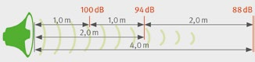
Abb. 29 Schallpegelabnahme durch Entfernung
| |
|
Eine Schallpegelminderung um 3 dB entspricht einer Halbierung der Schallintensität, auch wenn sie nur gering wahrnehmbar ist. Die Gefährdung ist um die Hälfte reduziert. |
Schallpegelminderungen von 10 dB lassen das wirkende Geräusch um die Hälfte leiser empfinden.
Koordinieren Sie möglichst ein zeitlich versetztes Arbeiten, wenn sekundäre Schallschutzmaßnahmen nicht einsetzbar sind.
Sind technische und organisatorische Maßnahmen, wie zuvor beschrieben, nicht möglich, sorgen Sie für die Verwendung von geeignetem Gehörschutz.
| |
|
Zur Auswahl des Gehörschutzes finden Sie Informationen im Baustein E 609 der BG BAU. |
Vermeidung von Schallreflexionen
Stellen Sie fest, ob an Ihren Arbeitsplätzen und Maschinenstellplätzen schallharte Raumbegrenzungsflächen ungewollte Schallreflexionen verursachen können.
Berücksichtigen Sie bei der Auslegung Ihrer Schallschutzmaßnahmen, dass durch ungewollte Schallreflexionen in Räumen Schallpegelüberhöhungen von bis zu 8 dB anzunehmen sind.
Gestalten Sie Ihre Werkstatt/-halle mit ausreichend schallabsorbierenden Materialien, damit die Reflexionen und die damit verbundenen Pegelüberhöhungen vermindert werden und der TRLV Lärm entsprechen. Berücksichtigen Sie hierbei, dass kleine und große Räume unterschiedlich zu bewerten sind.
| |
|
Mobile oder stationäre Schallschutzwände sollten in Werkstätten und -hallen beidseitig schallabsorbierend und mittig mit einem schalldämmenden Stahlblech ausgestattet sein, damit von den verwendeten Schallschutzwänden keine zusätzlichen Reflexionen ausgehen. |
Umgebungslärm
Berücksichtigen Sie, dass der Umgebungslärm, z. B. Verkehrslärm oder Lärm aus bestehenden Anlagen zusätzlich zur Lärmbelastung am Arbeitsplatz einwirkt.
|
3.1.8 Tätigkeiten mit wesentlich erhöhten körperlichen Belastungen
Wesentlich erhöhte körperliche Belastungen der Beschäftigten können zu Erkrankungen bis hin
zur Berufsunfähigkeit führen. Die ergonomische Gestaltung von Arbeitsplätzen und Arbeitsmitteln
kann Unfälle verhindern und Belastungen reduzieren, so dass die Gesundheit und Arbeitsfähigkeit
der Beschäftigten gefördert wird.
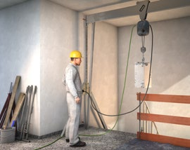
|
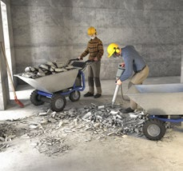
|
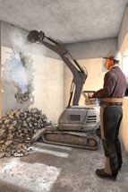
|
Abb. 30 mobiles Portalkran-System |
Abb. 31 ergonomischer
Materialtransport |
Abb. 32 ferngesteuertes
Abbruchgerät |
|
Gefährdungen
|
|
Folgende körperliche Belastungen können zu Gesundheitsschäden der Wirbelsäule, der Gelenke und der Muskulatur führen und somit die Gesundheit der Beschäftigten negativ beeinflussen
- Heben, Halten und Tragen sowie Ziehen und Schieben von schweren Lasten
- Arbeiten in Zwangshaltungen (Bücken, Knien, Hocken, Arbeiten über Schulterniveau)
- Arbeiten mit gleichförmigen Bewegungsabläufen, insbesondere bei erhöhter Kraftanstrengung (Hämmern, Drehen, Drücken)
- Bewegungsmangel durch lang andauerndes Sitzen bei der Steuerung von Maschinen
- Einwirkungen von Hand-Arm-Vibrationen oder Ganzkörpervibrationen
Zusätzlich können Lärm, Staub, klimatische und psychische Belastungen zu einer Verstärkung der körperlichen Beanspruchung führen.
|
|
Maßnahmen
|
|
Zur Verringerung der Belastungen und gesundheitlichen Beeinträchtigungen empfehlen wir nachfolgende Maßnahmen:
Arbeitsverfahren
Wählen Sie Arbeitsverfahren nach ergonomischen Gesichtspunkten aus.
| |
|
Vermeiden Sie manuelle Abbrucharbeiten z. B. durch Einsatz maschineller Kleinabbruchgeräte. |
Maschinen, Geräte und Arbeitsmittel
Setzen Sie ergonomische Maschinen, Geräte und Arbeitsmittel ein, die einschließlich ihrer Schnittstelle zum Menschen an die körperlichen Eigenschaften und Kompetenzen angepasst sind und erhöhte Muskel-Skelett-Belastungen vermeiden.
| |
|
Wählen Sie Arbeitsmittel nach Gewicht, Griffgestaltung, Kraftaufwand bei Verwendung, Transportierfähigkeit, Handhabung bzw. Praktikabilität, Rechts- und Linkshänder-Fähigkeit aus. |
Setzen Sie bei schweren Lasten technische Arbeits- und Hilfsmittel für den Materialtransport ein.
| |
|
Nutzen Sie z. B. mobile Portalkran-Systeme, Krane, Bauaufzüge, Karren, Transportzangen und Saugheber zum Transportieren schwerer Lasten. |
Verwenden Sie erhöhte Ablageflächen für das Lagern und Bearbeiten von Materialien.
| |
|
Hilfreich sind z. B. höhenverstellbare Arbeitstische, Eimerträger (zulässige Lasteinwirkung auf den Seitenschutz beachten) und einhängbare Leitertritte. |
Setzen Sie höhenverstellbare Geräte ein und passen Sie die Geräte der Körpergröße an.
| |
|
Als höhenverstellbare Geräte eignen sich z. B. Scheren- und mastgeführte Kletterbühnen oder Teleskop-Anlegeleitern. |
Wählen Sie bei Neuanschaffungen grundsätzlich staub-, vibrations- und lärmgeminderte Maschinen, Fahrzeuge und Geräte aus.
Arbeitsabläufe
Berücksichtigen Sie bei der Organisation der Arbeitsabläufe auch ergonomische Gesichtspunkte, um eine Übereinstimmung der Anforderungen einer Tätigkeit mit den Fähigkeiten und Fertigkeiten Ihrer Beschäftigten zu erreichen.
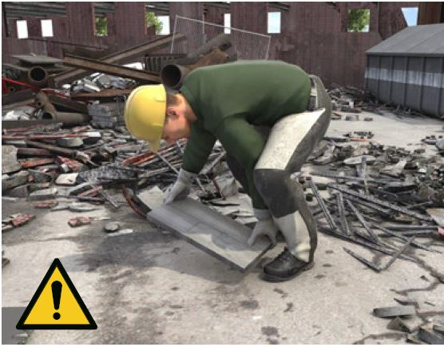
Abb. 33 ungünstige Körperhaltung (extreme Rumpfbeuge) vermeiden
Vermeiden Sie ungünstige Körperhaltungen (z. B. extreme Rumpfbeuge) der Beschäftigten durch Einsatz von Hilfsmitteln und Maschinen.
Sorgen Sie dafür, dass ein regelmäßiger Wechsel der Arbeitshaltungen oder auch der Arbeitstätigkeiten erfolgt. Das verteilt die Belastungen auf mehrere Beschäftigte.
Verhalten
Achten Sie darauf, dass bei Bedarf passende persönliche Schutzausrüstung mit möglichst hohem Tragekomfort, z. B. Knieschutzhose mit dazugehörigem Einlegepolster, verwendet wird.
Weisen Sie Beschäftigte in neue Arbeitsverfahren, Maschinen und Geräte ein. Neues bedarf der bewussten Übung.
Zeigen Sie Ihren Beschäftigten rückengerechte Hebe- und Tragetechniken, siehe Abbildung

Abb. 34 Hebe- und Tragetechniken (1)

Abb. 34 Hebe- und Tragetechniken (2)

Abb. 35 Ausgleichsübungen
Weisen Sie Ihre Beschäftigten in geeignete Ausgleichsübungen ein.
| |
|
Weitere Hinweise können Sie der BG-Broschüre "Ergonomie am Bau – damit es leichter geht!" entnehmen. |
|
3.1.9 Einflüsse durch psychische Belastung
Im Arbeitsalltag sind oftmals eng gesetzte Zeitvorgaben einzuhalten. Das Arbeitstempo ist oftmals sehr hoch bei gleichzeitig hohen Qualitätsansprüchen. Eine optimale Arbeitsvorbereitung, eine gute Arbeitsgestaltung und die Stärkung der Beschäftigten im Hinblick auf die Arbeitsanforderungen unterstützen dabei die gesundheitsförderlichen Aspekte der Arbeit. Die Beschäftigten sind dann besser in der Lage, mit psychischer Belastung umzugehen, so dass berufliche Anforderungen herausfordernd und nicht überfordernd bzw. stressend wirken.
Abb. 36 gute Organisation der Arbeit hilft den Überblick zu bewahren und kann Stress vermeiden
|
Weitere Informationen
|
- DGUV Information 206-006 "Arbeiten: entspannt, gemeinsam, besser"
- DGUV Information 206-007 "So geht´s mit Ideen-Treffen"
- DIN EN ISO 10075-1 "Ergonomische Grundlagen bezüglich psychischer Arbeitsbelastung- Teil 1: Allgemeine Konzepte und Begriffe"
- BG BAU - Broschüre "Damit es gelassen läuft! Tipps, damit Sie und Ihre Mitarbeiter gesund bleiben"
► http://www.bgbau.de/ergonomie-bau/psychische_belastungen
|
Abb. 37 Teamarbeit
|
Gefährdungen
|
|
Psychische Belastung ist zunächst neutral als "die Gesamtheit aller Einflüsse, die von außen auf den Menschen zukommen und psychisch auf sie/ihn einwirken", definiert. Sie wirkt sich individuell auf die Person aus und kann sie/ihn positiv (z. B. aktivieren, herausfordern) oder negativ beanspruchen (z. B. Stress verursachen).
Eine Gesundheitsgefährdung entsteht dann, wenn sich ein Mensch längerfristig gestresst (negativ beansprucht) fühlt und körperliche sowie psychische Stressreaktionen zeigt.
Arbeitsbedingte psychische Belastung kann entstehen durch Einflüsse ausfolgenden Faktoren:
- Arbeitsaufgabe, z. B. Gefährlichkeit der Arbeit, Monotonie
- Arbeitsorganisation, z. B. Zeitdruck, häufige Arbeitsunterbrechungen
- Arbeitsumgebung, z. B. Klima, Lärm
- Arbeitsmitteln, z. B. für die Arbeitsaufgabe oder den Bediener nicht geeignete Arbeitsmittel
- Sozialen Faktoren, z. B. Betriebsklima
Der Grad einer gesundheitlichen Gefährdung variiert in Abhängigkeit von:
- Art, Häufigkeit und Intensität der auftretenden Belastung
- individuellen Leistungsvoraussetzungen und Stressbewältigungsmöglichkeiten der Person
- Arbeitsgestaltung und -organisation
|
|
Maßnahmen
|
|
Berücksichtigen Sie bei Ihrer Gefährdungsbeurteilung die möglichen arbeitsbedingten psychischen Belastungen.
| |
|
Sie können sich bei der Beurteilung möglicher Gefährdungen durch psychische Belastungsfaktoren sowie bei der Ableitung entsprechender Maßnahmen bei Bedarf z. B. von Ihrer Fachkraft für Arbeitssicherheit, Ihrer Betriebsärztin bzw. Ihrem Betriebsarzt oder einer Psychologin bzw. einem Psychologen beraten lassen. |
|
Reduzieren Sie die Belastungen, z. B. durch Optimierung von Arbeitsabläufen und der Auswahl von geeigneten Arbeitsmitteln sowie der Förderung der individuellen Fähigkeiten der Beschäftigten.
| |
|
Reduktion von Belastung z. B. durch gut organisierte Arbeitsabläufe, Bereitstellung von geeigneten Werkzeugen.
Stärkung der Beschäftigten z. B. durch Einhaltung
der Erholungspausen, Weiterbildung, Unterstützung durch Kollegen |
Zur Ermittlung von wirkungsvollen Maßnahmen können Sie Ihre Beschäftigten in den Prozess der betriebsspezifischen Maßnahmenfindung einbeziehen (z. B. durch Teambesprechungen,Workshops).
3.1.10 Persönliche Schutzausrüstungen
Persönliche Schutzausrüstungen (PSA) sind immer dann bereitzustellen und zu benutzen, wenn die technischen und organisatorischen Maßnahmen ausgeschöpft sind und eine Restgefährdung verbleibt, die durch PSA weiter minimiert werden kann. Im Fall des Umganges mit Gefahrstoffen ist vorher außerdem die Substitution zu prüfen. PSA müssen für die jeweiligen Arbeitsbedingungen geeignet sein und den Beschäftigten zur Verfügung stehen. Die Kosten für PSA dürfen nicht den Beschäftigten auferlegt werden.
|
|
Abb. 13 Persönliche Schutzausrüstungen |
Abb. 14 Abbrucharbeiten mit geeigneter PSA |
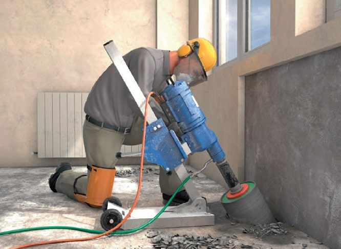
Abb. 40 PSA bei Betonbohrarbeiten
|
Gefährdungen
|
|
PSA schützen bei den jeweils auszuführenden Arbeiten vor den Restgefährdungen, welche durch technische oder organisatorische Schutzmaßnahmen nicht ausreichend minimiert werden können.
Dies können sein:
- Physikalische Gefährdungen, z. B. Absturz, Schneiden, Splitter- und Funkenflug, Lärm
- Chemische Gefährdungen, z. B. Motorabgase, Lösemittel
- Biologische Gefährdungen, z.B. Schimmelpilze, Taubenkot
Gefährdungen können auch durch unsachgemäße Bereitstellung und falsche Benutzung von PSA entstehen, z.B.:
- falsche Auswahl von PSA und Zusatzausrüstungen
- Verwendung mehrerer PSA-Arten, welche nicht aufeinander abgestimmt sind
- verschmutzte, beschädigte oder abgeänderte PSA,
- falsche Konfektionsgröße, abgelaufeneGebrauchsdauer
- PSA werden nicht den Herstellerangaben entsprechend verwendet
- unsachgemäßes Anlegen der PSA
- eigenmächtige Veränderungen der PSA
|
|
Maßnahmen
|
|
Gefährdungsbeurteilung
Voraussetzung für die Auswahl von geeigneten PSA ist die Kenntnis aller am Arbeitsplatz auftretenden Gefährdungen. Dazu gehören auch Gefährdungen, die durch die jeweiligen Tätigkeiten entstehen bzw. die an benachbarten Arbeitsplätzen erzeugt werden.
Wenn PSA zur Minimierung mehrerer Gefährdungen gleichzeitig verwendet werden müssen, achten Sie darauf, dass die Arten der PSA aufeinander abgestimmt sind und zusammen verwendet werden dürfen (z. B. Helm mit integrierter Schutzbrille und Kapselgehörschutz).
Achten Sie darauf, dass die Gebrauchseigenschaften der PSA auf die Tätigkeit abgestimmt sind und die Beschäftigten durch die PSA nicht unnötig behindert werden.
Bereitstellung
Beschaffen Sie nur PSA, die mit einer CE-Kennzeichnung versehen sind und über eine Herstellerinformation verfügen. Achten Sie weiterhin darauf, dass die Ersatzteilbeschaffung, die Instandsetzung und die Wartung über einen längeren Zeitraum gesichert sind.

Abb. 41 CE-Kennzeichnung
PSA müssen den Beschäftigten individuell passen. Auffanggurte,
die nicht auf die Körperform des Benutzers bzw. der Benutzerin abgestimmt sind oder Schutzhelme, die zu klein oder zu groß sind, beeinträchtigen die Schutzwirkung bzw. führen zu zusätzlichen Gefährdungen der Benutzer und Benutzerinnen. Stellen Sie sicher, dass eine ausreichende Anzahl von PSA für den Zeitraum der Tätigkeit zur Verfügung steht. Beispielsweise kann nach jeder Arbeitsunterbrechung oder bei jedem Wiedereintritt in den Tätigkeitsbereich neue Einwegschutzkleidung notwendig sein.
| |
|
Hören Sie die Beschäftigten an (z. B. zu Konfektionsgrößen, Hörgangsweiten, Anpassungsmöglichkeiten oder individuellen körperlichen Voraussetzungen), bevor Sie PSA zur Verfügung stellen. Die Tragebereitschaft von PSA ist erfahrungsgemäß größer, wenn die Beschäftigten bei der Auswahl der PSA beteiligt werden (ggf. durch Anprobe). |
Benutzung
Weisen Sie die Beschäftigten an, die PSA bestimmungsgemäß zu benutzen. Dabei ist es hilfreich, auch praktische Übungen durchzuführen. Für einige PSA sind praktische Übungen vorgeschrieben, z. B. PSA gegen Absturz, Atemschutz.
Die Herstellerinformation muss für den Benutzer und die Benutzerin zugänglich sein und beschreibt Verwendungszweck, Einsatzbedingungen, Gebrauchsdauer und Benutzungseinschränkungen der PSA.
PSA müssen vor jedem Einsatz auf mögliche Mängel hin in Augenschein genommen werden.
Ordnungsgemäßer Zustand
PSA müssen regelmäßig auf Vollständigkeit und Beschädigungen überprüft und ggf. direkt ersetzt werden. Sorgen Sie dafür, dass Instandhaltungsarbeiten und die Überprüfung der Gebrauchstauglichkeit der PSA nach den Angaben der Herstellerinformationen durchgeführt werden. Stellen Sie durch Wartungs-, Reparatur-, ErsatzmaßErsatzmaßnahmen und ordnungsgemäße Lagerung sicher, dass die PSA während der gesamten Gebrauchsdauer funktionieren und sich in einem hygienisch einwandfreien Zustand befinden. So ist bei der Reinigung von PSA darauf zu achten, dass die Waschverfahren die Schutzwirkung nicht beeinflussen.
Wenn die Schutzwirkung der PSA im Rahmen der Benutzung/Beanspruchung beeinträchtigt wurde, müssen sie ggf. beim Hersteller erst wieder funktionstüchtig gemacht werden, bevor sie erneut benutzt werden können. Dies ist beispielsweise bei einem Höhensicherungsgerät notwendig, wenn der Sturz einer Person damit aufgefangen wurde.
PSA gegen Absturz sind zudem mindestens einmal jährlich durch Sachkundige zu prüfen.
3.2 Verwendung von Arbeitsmitteln
3.2.1 Leitern
Leitern werden als Arbeitsplätze und als Verkehrswege genutzt. Die Häufigkeit der Absturzunfälle von Leitern ist auffallend – auch bereits aus niedriger Höhe.
Bevor eine Leiter als hochgelegener Arbeitsplatz oder als Zugang zu hochgelegenen Arbeitsplätzen bereitgestellt und verwendet wird, ist im Rahmen einer Gefährdungsbeurteilung zu ermitteln, ob ein Arbeitsmittel mit einer geringeren Gefährdung zu verwenden ist. Wenn eine Leiter für die Arbeit genutzt werden muss, ist für den jeweiligen Einsatzbereich eine geeignete Leiter auszuwählen. Durch den Einsatz von Leiterzubehör kann die Sicherheit erhöht werden.
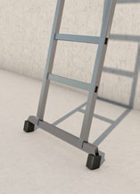
|

|
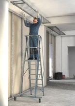
|
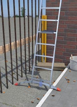
|
Abb. 42 Fußverbreiterung |
Abb. 43 Sicherung gegen Wegrutschen |
Abb. 44 Podestleiter |
Abb. 45 Leiterfuß zum Ausgleich von Niveauunterschieden |
|
|
Gefährdungen
|
|
Achten Sie bei einem Einsatz von Leitern insbesondere auf folgende Gefährdungen:
- Absturz durch für die Tätigkeit ungeeignete Leitern
- Umkippen oder Wegrutschen der Leiter aufgrund eines unebenen, rutschigen oder nicht tragfähigen Untergrundes
- Abstürzen bzw. Abrutschen von der Leiter
|
|
Maßnahmen
|
|
Leitern
Wählen Sie für den jeweiligen Einsatz die geeignete Leiter aus (z. B. Podestleiter, Plattformleiter, Leiter mit Fußverbreiterung). Verwenden Sie Leitern bestimmungsgemäß.
Sorgen Sie dafür, dass die Sicherheit gegebenenfalls durch Leiterzubehör (z. B. Leiterkopffixierungen, Erdspitzen, Holmverlängerungen, Einhängepodeste) erhöht wird.
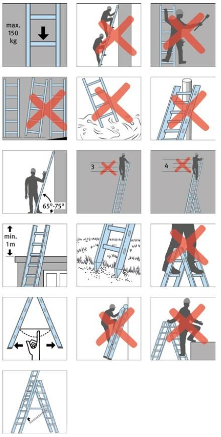
Abb. 46 Hinweise zur Verwendung von Leitern
Sicherung gegen Umkippen oder Wegrutschen
Stellen Sie Leitern nur auf einem tragfähigen und ausreichend großen Untergrund auf. Zudem sind Anlegeleitern gegen Umstürzen und Verrutschen am Fuß- bzw. am Kopf der Leiter zu sichern.
| |
|
Kontrollieren Sie die Rutschhemmung temporärer Abdeckungen, z. B. von Malervlies oder Folien gegen Verschieben. |
Unterweisen Sie Ihre Beschäftigten hinsichtlich der Aufstellung und Verwendung der Leiter.
Es ist zu gewährleisten, dass der Arbeitsbereich sicher erreicht werden kann und sich der Beschäftigte nicht mit dem Körperschwerpunkt außerhalb der Holme hinauslehnen muss.
Bei Anlegeleitern sollte der Aufstellwinkel zwischen 65 und 75 Grad betragen
Achten Sie darauf, dass bei Arbeiten auf der Leiter die gegenüber dem Bauwerk aufgebrachten Kräfte, z. B. beim Bohren oder Stemmen, nicht die Kippsicherheit gefährden. Dies gilt insbesondere für Stehleitern, die parallel zur Wand aufgestellt sind.
Leitern sollten nicht bei Witterungsbedingungen verwendet werden, die eine zusätzliche Gefährdung hervorrufen, z. B bei starkem oder böigem Wind, Vereisung oder Schneeglätte. Unterweisen Sie die Beschäftigten über das Verbot des Übersteigens von der Stehleiter auf hochgelegene Arbeitsplätze oder Einrichtungen. Zudem sind Stehleitern nicht als Anlegeleitern zu verwenden.
Sorgen Sie dafür, dass bei Anlege- und Schiebeleitern die obersten drei Stufen/Sprossen nicht betreten werden.
Bei fahrbaren Leitern sind vor der Verwendung die Fahrrollen festzusetzen.
Absturz-/Abrutschsicherung
Achten Sie darauf, dass beim Arbeiten auf Leitern jederzeit ein sicheres Festhalten und Stehen möglich ist. Auch ein Transport von Gegenständen auf der Leiter darf den sicheren Kontakt zur Leiter nicht einschränken.
| |
|
Zum Transport von Arbeitsmitteln haben sich umhängbare Werkzeugtaschen, -gürtel oder -schürzen bewährt. |
Zur Minimierung der Abrutschgefahr sind Stufenleitern den Sprossenleitern vorzuziehen.
Unterweisen Sie die Beschäftigten, dass Leitern nicht mit stark verschmutzten Schuhsohlen begangen werden.
Vergewissern Sie sich, dass die Leiterteile beim Einsatz von Schiebeleitern oder Leitern, die aus mehreren Teilen bestehen, unbeweglich miteinander verbunden bleiben.
Verwenden Sie keine mit Mängeln behafteten Leitern.
Legen Sie Prüfintervalle fest und sorgen Sie dafür, dass die Leitern durch zur Prüfung befähigte Personen geprüft werden. Leitern sind vor der Verwendung durch den Benutzer oder die Benutzerin auf ordnungsgemäßen Zustand zu überprüfen. Mängel sind der oder dem Vorgesetzten zu melden.
|
3.2.2 Fahrbare Arbeitsbühnen
Fahrbare Arbeitsbühnen sind bei bestimmungsgemäßer Verwendung sichere mobile hochgelegene Arbeitsplätze. Auf- und Abbau sowie die Benutzung von Fahrbaren Arbeitsbühnen sind durch die Aufbau- und Verwendungsanleitung des Herstellers geregelt. Diese ist den Beschäftigten vor Ort zur Verfügung zu stellen.
Die Fahrbare Arbeitsbühne ist vor der ersten Verwendung hinsichtlich des korrekten Aufbaus und der sicheren Funktion zu überprüfen. Eine fehlerhafte Verwendung kann insbesondere zu Absturzunfällen und zum Verlust der Standsicherheit führen.

|

|

|
Abb. 47 fahrbare Arbeitsbühne mit einem Belag |
Abb. 48 fahrbare Arbeitsbühne mit Treppenaufstieg |
Abb. 49 fahrbare Arbeitsbühne mit Treppenaufstieg und
Abstützungen |
|
Weitere Informationen
|
- DIN EN 1004 "Fahrbare Arbeitsbühnen aus vorgefertigten Bauteilen – Werkstoffe, Maße, Lastannahmen und sicherheitstechnische Anforderungen"
|
|
Gefährdungen
|
|
Achten Sie bei der Nutzung von Fahrbaren Arbeitsbühnen insbesondere auf die folgenden Gefährdungen:
- Absturz von der Fahrbaren Arbeitsbühne
- Umkippen der Fahrbaren Arbeitsbühne
- Verlust der Betriebssicherheit durch Änderung an der Fahrbaren Arbeitsbühne abweichend von der Aufbau- und Verwendungsanleitung des Herstellers
- schädigende Auswirkungen auf die Fahrbare Arbeitsbühne infolge außergewöhnlicher Ereignisse, z. B. Wind
- nicht bestimmungsgemäße Verwendung
|
|
Maßnahmen
|
|
Absturzsicherung
Stellen Sie sicher, dass auf den jeweiligen Arbeitsebenen dreiteiliger Seitenschutz vorhanden ist. Die Durchstiegsklappe auf der Arbeitsebene ist geschlossen zu halten.
Sorgen Sie dafür, dass die Arbeitsebene über die innenliegenden Auf- und Abstiege erreicht wird und dass regelmäßig Zwischenbeläge nach der Aufbau- und Verwendungsanleitung des Herstellers vorgesehen sind.
Achten Sie darauf, dass beim Auf- und Abstieg über eine Leiter, anders als bei einer Treppe, nur Material oder Werkzeug mitgeführt werden kann, welches ein sicheres Festhalten nicht verhindern.
Grundsätzlich dürfen sich beim Verfahren keine Personen auf der Fahrbaren Arbeitsbühne befinden.
| |
|
Fahrbare Arbeitsbühnen mit Treppen als Aufstiege sind zu bevorzugen. |
| |
|
Weitere Informationen sind im Baustein B 112 "Fahrbare Arbeitsbühnen" der BG BAU zu finden. |
Standsicherheit
Stellen Sie sicher, dass die Ausleger zur Verbreiterung der Standfläche bzw. die Ballastierung entsprechend der Standhöhe nach Aufbau- und Verwendungsanleitung des Herstellers ausgeführt werden.
Achten Sie darauf, dass die Fahrbare Arbeitsbühne nur langsam und auf ebenem, tragfähigem und hindernisfreiem Untergrund in Längsrichtung bzw. über Eck verfahren wird. Beachten Sie die zulässige Gesamtbelastung der Fahrbaren Arbeitsbühne.
Stellen Sie sicher, dass die Fahrbare Arbeitsbühne immer, auch nach Beendigung der Arbeiten gegen Umsturz und Wegrollen, gesichert ist.
Legen Sie bei der Unterweisung besonderen Wert darauf, dass es verboten ist, auf eine Fahrbare Arbeitsbühne zu springen oder sie als Ersatz für eine geeignete Absturzsicherung einzusetzen und dass die Fahrrollen durch Bremshebel vor jeder Verwendung festgestellt werden.
Betriebssicherheit
Stellen Sie sicher, dass kein nach der Aufbau- und Verwendungsanleitung erforderliches Bauteil verändert bzw. beseitigt wird.
Generell ist das Anbringen von Hebezeugen (z. B. Seilrollenaufzüge) bzw. anderen die Standsicherheit beeinträchtigenden Teilen (z. B. Big-Bags) an der fahrbaren Arbeitsbühne verboten. Ausnahme: Der Hersteller erlaubt dieses in seiner Aufbau- und Verwendungsanleitung. Beachten Sie dann die vom Hersteller vorgegebenen Maßnahmen zur Sicherstellung der Standsicherheit.
| |
|
Sehen Sie den Einsatzbereich der Fahrbaren Arbeitsbühne so vor, dass die vorgeschriebenen Einsatzhöhen von maximal 12 m innerhalb und 8 m außerhalb von Gebäuden eingehalten werden. Beachten Sie in jedem Fall die Aufbau- und Verwendungsanleitung des Herstellers. |
Prüfung nach schädigenden Ereignissen
Sorgen Sie dafür, dass die Fahrbare Arbeitsbühne nach schädigenden Ereignissen wie beispielsweise Unfällen, längeren Zeiträumen der Nichtverwendung oder Naturereignissen (Stürme, Blitzeinschlag, Vereisungen, starke Schneefälle usw.) vor der erneuten Verwendung durch eine zur Prüfung befähigte Person geprüft wird.
| |
|
Ein Formular zur Bestellung einer zur Prüfung befähigten Person finden Sie im Baustein F 704 der BG BAU. |
Organisation
Legen Sie Verantwortung und Aufgaben Ihrer Beschäftigten für die Baustelle fest und sorgen Sie für deren Qualifikation (z. B. aufsichtführende Person). Stellen Sie sicher, dass die Fahrbare Arbeitsbühne nach dem Aufbau und vor der Verwendung durch eine zur Prüfung befähigte Person auf sichere Funktion geprüft wird. Fahrbare Arbeitsbühnen sind entsprechend ihrer Ausführungsart gemäß Aufbau- und Verwendungsanleitung zu kennzeichnen. Die Fahrbare Arbeitsbühne ist arbeitstäglich auf augenfällige Mängel zu kontrollieren.
Sorgen Sie dafür, dass die Aufbau- und Verwendungsanleitung des Herstellers für die Erstellung und Verwendung der Fahrbaren Arbeitsbühne auf der Baustelle vorhanden ist. Unterweisen Sie Ihre Beschäftigten über die sichere Verwendung von Fahrbaren Arbeitsbühnen.
| |
|
Ein Formular zur Prüfung und Kennzeichnung einer Fahrbaren Arbeitsbühne finden Sie im Baustein F 707 der BG BAU. |
|
3.2.3 Arbeits- und Schutzgerüste
Jedes Unternehmen, das Gerüste oder Teilbereiche von Gerüsten nutzt, ist dafür verantwortlich, dass sich diese in einem ordnungsgemäßen Zustand befinden und für die vorgesehenen Tätigkeiten geeignet sind. Vor der ersten Verwendung hat jedes Unternehmen das Gerüst auf dessen sichere Funktion zu überprüfen.
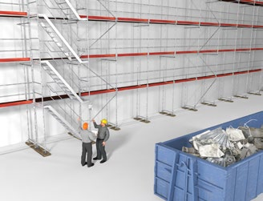
|
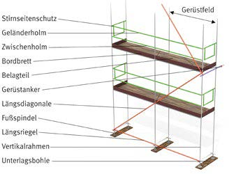
|
Abb. 50 Ein Gerüst ist vor der Verwendung
auf offensichtliche Mängel zu überprüfen |
Abb. 51 Bezeichnung von Gerüstbauteilen |
|
Gefährdungen
|
|
Achten Sie bei der Gerüstnutzung insbesondere auf die folgenden Gefährdungen:
- Absturz aufgrund nicht bestimmungsgemäßer Benutzung des Gerüstes oder durch Gerüstmängel wegen unzureichender betrieblicher Organisation
- Absturz aufgrund von Mängeln an den Außen-, Innen- und Stirnseiten des Gerüstes sowie bei mangelhafter Ausbildung des Gerüstes als Fanggerüst
- Durchsturz bei nicht geschlossenen Durchstiegsklappen am Leiteraufstieg
- Getroffen werden durch herabfallende Gegenstände
- Stolpern und Rutschen wegen unebenen oder glatten Gerüstbelägen
- Verlust der Tragfähigkeit der Gerüstbeläge durch Überlastung der Gerüstlagen
- Verlust der Stand- oder Betriebssicherheit durch eigenmächtige Veränderungen am Gerüst
- Mangelhafte oder ungeeignete Zugänge zu den Arbeitsplätzen auf dem Gerüst
- Verlust der Betriebssicherheit des Gerüstes infolge außergewöhnlicher Ereignisse, die schädigende Auswirkungen auf das Gerüst haben können.
|
|
Maßnahmen
|
|
Organisation
Legen Sie Verantwortung und Aufgaben Ihrer Beschäftigten für die Baustelle fest und sorgen Sie für deren Qualifikation (z. B. aufsichtführende Person). Stellen Sie sicher, dass das Gerüst vor der Verwendung durch eine zur Prüfung befähigte Person auf sichere Funktion geprüft wird.
| |
|
Zur Fortbildung Ihrer zur Prüfung befähigten Personen hat sich die CD "Fortbildung von befähigten Personen im Gerüstbau" bewährt. Im Anhang 7 der DGUV Information 201-011 "Handlungsanleitung für den Umgang mit Arbeits- und Schutzgerüsten" ist das Muster eines Prüfprotokolls vor der ersten Inbetriebnahme enthalten. |
Sorgen Sie dafür, dass die notwendigen Unterlagen für die Gerüstbenutzung (z. B. Kennzeichnung des Gerüstes, Plan für die Benutzung) vom Gerüstersteller zur Verfügung gestellt werden und auf der Baustelle vorhanden sind. Unterweisen Sie Ihre Beschäftigten über die sichere Benutzung von Gerüsten.
| |
|
Sinnvoll ist es, wenn Warnhinweise aus dem Plan für die Benutzung am Gerüst ersichtlich sind (siehe Abbildung 52). |

Abb. 52 Warnhinweise zum Gerüst
Absturzsicherungen
Stellen Sie sicher, dass jede Gerüstlage, die als Arbeits- und Zugangsbereich genutzt werden kann, während der Benutzung durch Seitenschutz gesichert ist. Maßnahmen zum Schutz gegen Absturz sind dann nicht erforderlich, wenn die Arbeits- und Zugangsbereiche höchstens 0,30 m von anderen tragfähigen und ausreichend großen Flächen entfernt liegen.
Vergewissern Sie sich, dass genutzte Fang- bzw. Dachfanggerüste die vorgeschriebenen Anforderungen erfüllen.
| |
|
Im Baustein B 111 bzw. B 121 der BG BAU finden Sie Hinweise zu Fang- bzw. Dachfanggerüsten. |
Mangelhafte Bereiche am Gerüst dürfen nicht benutzt werden. Wenden Sie sich an Ihren Auftraggeber oder den Gerüstersteller zur Beseitigung der Mängel. Bis die Mängel beseitigt sind, sollte der Bereich kenntlich gemacht bzw. abgesperrt werden.
Durchstiegsklappen
Unterweisen Sie Ihre Beschäftigten, dass die Durchstiegsklappen am Leitergang, nach dem Durchstieg zu schließen sind. Vorteilhafter ist ein separat vor das Gerüst gestelltes Gerüstfeld als Treppen- oder Leiteraufgang. Damit können die Arbeiten auf der jeweiligen Gerüstebene ungestört und sicherer ablaufen.
Schutz vor herabfallenden Gegenständen
Sorgen Sie dafür, dass auf den Gerüstlagen in einem Gerüstfeld nicht gleichzeitig übereinander gearbeitet wird und dass die Zugänge/Verkehrswege gesichert sind, z. B. durch Absperrungen oder mit einem Schutzdach.
Gerüstbeläge
Stellen Sie sicher, dass die Gerüstbeläge sicher begangen werden können. Dazu müssen die Gerüstbeläge so ausgebildet sein, dass sie dicht aneinander verlegt sind und weder wippen noch ausweichen oder sich verschieben können. Gerüstbeläge sind von Eis und Schnee vor der Verwendung zu beräumen.
Achten Sie darauf, dass Material auf dem Gerüstbelag nur so abgelegt werden darf, dass ein ausreichend breiter Durchgang erhalten bleibt.
| |
|
Unterweisen Sie Ihre Beschäftigten insbesondere, dahingehend dass es verboten ist, auf Gerüstbeläge zu springen oder etwas auf diese zu werfen. |
Lastklasse
Vergewissern Sie sich vor der Gerüstnutzung, dass die Lastklasse des Gerüstes für Ihre auszuführenden Tätigkeiten ausreichend ist. Beachten Sie dabei, dass die Summe der Lasten auf den einzelnen Gerüstlagen innerhalb eines Gerüstfeldes den Wert der max. zul. Belastung (Lastklasse) nicht überschreiten darf.
Standsicherheit
Achten Sie darauf, dass am Gerüst keine eigenmächtigen Veränderungen vorgenommen werden, wie z. B.:
- Entfernen von Verankerungen
- Ausbau von Gerüstbelägen, Seitenschutzbauteilen
- Anbau von Aufzügen, Schuttrutschen, Netzen oder Planen.
Werden Veränderungen am Gerüst erforderlich, so ist der Gerüstersteller zu kontaktieren. Grundsätzlich darf nur er Veränderungen vornehmen.
Zugänge
Vergewissern Sie sich vor der Gerüstnutzung, dass jede Gerüstlage über einen sicheren Zugang, z. B. Treppen- oder Leitergang, erreichbar ist. Achten Sie darauf, dass Aufzüge, Transportbühnen oder Treppen als Zugang vorhanden sind, wenn:
- über den Zugang umfangreiche Materialien transportiert werden,
- die Aufstiegshöhe mehr als 10 m beträgt.
| |
|
Für ein schnelleres, wirtschaftlicheres und ergonomischeres Arbeiten hat es sich bewährt Gerüstreppen statt Leitergänge zu verwenden. |
Abb. 53 fachgerechter Zugang zum Gerüst
Prüfung nach außergewöhnlichen Ereignissen
Sorgen Sie dafür, dass nach außergewöhnlichen Ereignissen wie z. B. Unfällen, Naturereignissen (Stürme, starke Regenfälle, Vereisungen, starke Schneefälle usw.) oder auch längere Zeiträume der Nichtbenutzung das Gerüst vor der erneuten Benutzung durch eine zur Prüfung befähigten Person geprüft wird. Bestehen Zweifel an der sicheren Funktion des Gerüstes, kontaktieren Sie den Gerüstersteller.
|
3.2.4 Schweiß- und Schneidgeräte
Auf Baustellen werden Stähle durch thermisches Schweißen oder Brennschneiden verbunden bzw. getrennt. Zum Verbinden von metallischen Werkstoffen werden hierbei überwiegend Autogen- sowie Lichtbogenschweißverfahren eingesetzt. Je nach Einsatzort und gewähltem Schweißverfahren können Gefährdungen, z. B. durch Stromschlag, Brand, Explosion, optische Strahlung, Verbrennung und einatembare Schadstoffe entstehen. Wechselnde Einsatzorte verlangen eine besondere Sorgfalt bei der Vorbereitung und Ausführung der Schweißarbeiten.
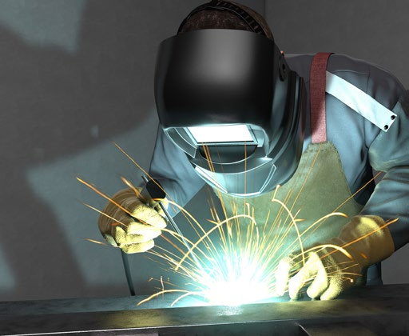
Abb. 54 Schweißen nur mit Schutzausrüstungen
|
Weitere Informationen
|
- DGUV Information 205-002 "Brandschutz bei feuergefährlichen Arbeiten"
- DGUV Information 209-010 "Lichtbogenschweißer"
- DGUV Information 209-011 "Gasschweißer"
- DGUV Information 209-016 "Schadstoffe beim Schweißen und bei verwandten Verfahren"
|
|
Gefährdungen
|
|
Bei Schweiß- und Brennschneidearbeiten auf Baustellen ist mit den nachfolgend aufgeführten besonderen Gefährdungen zu rechnen:
|
|
Maßnahmen
|
|
Sorgen Sie für die erforderliche Qualifikation Ihrer Beschäftigten. Erstellen Sie eine Gefährdungsbeurteilung und die für die Schweißverfahren notwendigen Betriebsanweisungen. Berücksichtigen Sie hierbei die örtlichen Verhältnisse. Legen Sie die entsprechenden Schutzmaßnahmen nach dem Stand der Technik fest und unterweisen Sie Ihre Beschäftigten.
Brand- und Explosionsschutz
Sorgen Sie dafür, dass die allgemeinen Maßnahmen zur Vermeidung von Brand- und Explosionsgefährdungen eingehalten werden.
Insbesondere sind bei Schweißarbeiten folgende Maßnahmen zu beachten:
- Entfernen Sie möglichst brennbare und entzündliche Stoffe im Gefährdungsbereich
- Treffen Sie ggf. weitere Maßnahmen, um das Entzünden von Stoffen durch offene Flammen, Schlackespritzern oder Elektrodenresten zu vermeiden
- Betreiben Sie Autogeneinrichtungen nur mit den erforderlichen, geprüften Sicherheitseinrichtungen wie z. B. Druckminderer, Entnahmestellen- oder Einzelflaschensicherungen
- Sorgen Sie dafür, dass sich Ihre schweißtechnische Ausrüstung in einem ordnungsgemäßen Zustand befindet
- Schützen Sie Ihre schweißtechnische Ausrüstung auf Baustellen vor Beschädigungen durch druckfeste Überdeckungen von Gas-Schläuchen, Netzanschluss- und Schweißstromleitungen im Bereich von Verkehrswegen
- Geeignete Feuerlöscheinrichtungen bereithalten
| |
|
Es empfiehlt sich, Sicherheitsmaßnahmen in Abhängigkeit von den Umgebungsbedingungen nach Abstimmung mit dem Auftraggeber in einer Schweißerlaubnis festzulegen. Eine Vorlage für einen Schweißerlaubnisschein ist im Anhang 4.3 zu finden. |
Beachten Sie, dass Jugendliche in brand- und explosionsgefährdeten Bereichen keine Schweiß- und Schneidarbeiten ausführen dürfen.
Schutz vor Verbrennungen und optischer Strahlung
Stellen Sie, je nach Ergebnis der Gefährdungsbeurteilung geeignete PSA zur Verfügung. Zum Schutz des Körpers werden u.a. Schweißerschürzen, Schutzanzüge, Schweißerschuhe, Lederstulpenhandschuhe, Kopfhauben, Nackenleder verwendet. Augen- und Gesichtsschutz, wie z. B. Schutzschilde, Schutzschirme und Schutzbrillen müssen die entsprechend dem Schweißverfahren erforderliche Schutzstufe aufweisen.
| |
|
Bei Lichtbogenverfahren haben sich Schutzschirme mit Schweißerschutzfiltern, die sich selbsttätig mit dem Zünden des Lichtbogens verdunkeln, besonders bewährt. |
Schirmen Sie Arbeitsplätze beim Lichtbogenschweißen z. B. durch Stellwände oder Vorhänge so ab, dass weitere Personen gegen die Einwirkung der Strahlung geschützt sind.
Schutz vor einatembaren Schadstoffen
In Abhängigkeit von den Werkstoffen, den Schweißzusatzstoffen und dem angewandten Schweißverfahren können Gase und Partikel in unterschiedlichen Konzentrationen freigesetzt werden. Wählen Sie vorrangig emissionsarme Schweißverfahren aus. Beachten Sie, dass insbesondere in engen Räumen wie Behältern und Vertiefungen Prozessgase zur Verdrängung der Atemluft führen können. Gegebenenfalls sind lüftungstechnische (z. B. Absaugungen an der Entstehungsstelle), organisatorische (z. B. Arbeitsablauf) und personenbezogene (z. B. fremdbelüftete Schweißerschutzhelme) Schutzmaßnahmen erforderlich. Beachten Sie Beschäftigungsbeschränkungen beim Auftreten bestimmter Gefahrstoffe.
| |
|
Zu Schutzalterbestimmungen finden Sie Informationen im Baustein H 900 der BG BAU. |
Schutz vor elektrischen Schlag
Verwenden Sie zum Betrieb Ihrer elektrischen Arbeitsmittel nur geprüfte Anschlusspunkte (30-mA-Fehlerstrom-Schutzeinrichtung vorgeschaltet).
Schweiß- und Schneidausrüstungen müssen für den gewerblichen Einsatz und den Einsatz auf Baustellen geeignet sein. Organisieren Sie die Prüfung der Arbeitsmittel.
Stellen Sie sicher, dass schweißtechnische Ausrüstungen wie z. B. Schweißstromquellen, Schweißstromleitungen, Elektrodenhalter sowie Schweißerschutzkleidung unbeschädigt und funktionsfähig sind. Beachten Sie die für die verschiedenen Einsatzbereiche zulässigen Höchstwerte der Leerlaufspannung der Schweißstromquelle. Diese sind gekennzeichnet durch das Symbol
 oder die bisherigen Symbole oder die bisherigen Symbole  bzw. bzw.
 . .
Bei Arbeiten mit erhöhter elektrischer Gefährdung, z. B. bei Arbeiten in engen Räumen, sind Schutzkleinspannung oder Schutztrennung zu verwenden.
Schutz vor Lärm
Beachten Sie, dass bei der Verwendung von Schweiß- und Schneidbrennern Auslösewerte bzw. maximal zulässige Expositionswerte überschritten werden können. Prüfen Sie, ob durch Auswahl geeigneter Brenner eine Lärmreduzierung möglich ist und stellen Sie gegebenenfalls geeigneten Gehörschutz zur Verfügung.
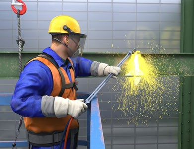
Abb. 56 Persönliche Schutzausrüstungen beim Brennschneiden
| |
|
Zur Auswahl von Gehörschutz finden Sie Informationen im Baustein E 609 der BG BAU. |
|
3.2.5 Maschinen allgemein
Maschinen erleichtern und beschleunigen die Abbruch- und Rückbauarbeiten. Sie werden überwiegend
zum Transportieren, Fördern und Heben von Material und Personen sowie zum Bearbeiten von
Bauteilen eingesetzt. Verfahrensabhängig können unterschiedlichste Gefährdungen auftreten. Die
wechselnden Einsatzorte sowie die Vielzahl der verschiedenen auszuführenden Arbeiten verlangen
eine besondere Sorgfalt bei Planung und Vorbereitung des Maschineneinsatzes.
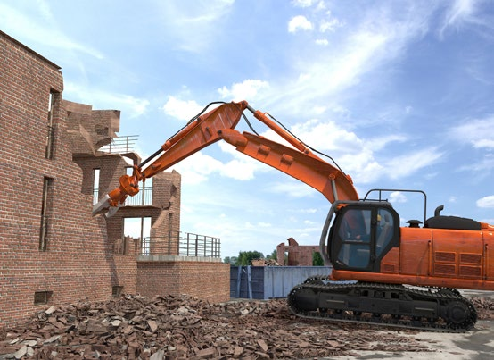
Abb. 57 Abbruchbagger
|
Gefährdungen
|
|
Bei der Verwendung von Maschinen ist mit den nachfolgend aufgeführten besonderen Gefährdungen zu rechnen, die unmittelbar in Abhängigkeit zum jeweiligen Verwendungszweck stehen:
- mechanisch
- physikalisch, z. B. Lärm, Vibration
- elektrisch
- chemisch
|
|
Maßnahmen
|
|
Setzen Sie nur Maschinen ein, welche die grundlegenden Beschaffenheitsanforderungen für Sicherheit und Gesundheitsschutz erfüllen. Sie können davon ausgehen, dass diese Anforderung erfüllt ist, wenn der Hersteller
- in der Konformitätserklärung dokumentiert, dass seine Maschine den Anforderungen der Maschinenverordnung entspricht und
- dies durch eine CE-Konformitätskennzeichnung auf der Maschine kenntlich macht und
- eine Betriebsanleitung in deutsche Sprache zur Verfügung stellt.
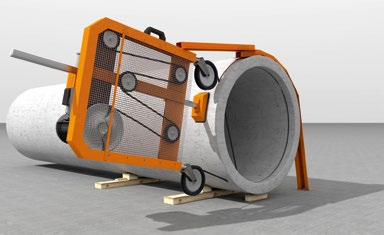
Abb. 58 Diamantseilsäge
Das Vorhandensein einer CE Kennzeichnung an den Maschinen entbindet Sie jedoch nicht von der Pflicht zur Durchführung einer Gefährdungsbeurteilung. Hierbei sind Gefährdungen durch die Maschine selbst, die Arbeitsumgebung und die auszuführende Tätigkeit zu berücksichtigen.
Stellen Sie fest, ob eine Verwendungseinschränkung für beispielsweise Jugendliche vor Vollendung des 18. Lebensjahres besteht. Für diese Personengruppen gelten besondere Bestimmungen.
Bestimmungsgemäße Verwendung
Stellen Sie sicher, dass die von Ihnen ausgewählte Maschine für das bestimmte Arbeitsverfahren geeignet ist. Sie erlangen die erforderlichen Kenntnisse, an welchen Arbeitsplätzen die von Ihnen ausgewählte Maschine eingesetzt werden kann, aus der Betriebsanleitung des Herstellers.
Berücksichtigen Sie bei Ihrer Beurteilung die örtlichen Bedingungen am Arbeitsplatz, an dem Sie die Maschine verwenden wollen, wie z. B. hochgelegene Arbeitsplätze, Zugänglichkeit oder enge Räume. Berücksichtigen Sie bei Ihrer Beurteilung auch die möglichen Arbeitsumgebungen, z. B.
- Sturm, Regen, Schnee, Hagel
- Feuchte oder Nässe
- explosive Atmosphäre
- kontaminierte Bereiche
Stellen Sie sicher, dass die vom Hersteller bestimmten Verwendungseinschränkungen berücksichtigt werden.
Achten Sie darauf, dass sich keine unbefugten Personen im Gefahrenbereich aufhalten.
Abb. 59 Turmdrehkran
Legen Sie die geeigneten technischen, organisatorischen und personenbezogenen Schutzmaßnahmen fest.
| |
|
Sorgen Sie dafür, dass die Maschinen ausschließlich nach den in der Betriebsanleitung angegebenen bestimmungsgemäßen Verwendungen betrieben werden. Machen Sie Ihren Beschäftigten deutlich, dass bei einem Abweichen von der bestimmungsgemäßen Verwendung gravierende Gefährdungen auftreten können. |
Einweisung und Unterweisung
Sorgen Sie dafür, dass Beschäftigte die Eignung und Befähigung dazu haben, die Maschinen sicher zu bedienen. Maschinenführer sollten schriftlich beauftragt werden. Kran- und Flurförderzeugführende müssen schriftlich beauftragt werden.
| |
|
Beispielsweise gelten Führer und Führerinnen von
Abbruchbaggern und Turmdrehkranen als qualifiziert,
wenn sie an einer zugelassenen Prüfungsstätte
die Prüfung bestanden haben.
Weitere Informationen: ► www.zumbau.org |

(BR Rohbau S. 49)
Erstellen Sie eine Betriebsanweisung unter Berücksichtigung der Betriebsanleitung des Herstellers. Somit bestimmen Sie den Umgang und die sichere Verwendung.
Weisen Sie Ihre Beschäftigten vor der erstmaligen Verwendung einer Maschine ein. Verwenden Sie hierfür die Betriebsanleitung des Herstellers.
Unterweisen Sie Ihre Beschäftigten auf der Grundlage Ihrer Betriebsanweisung und erstellen Sie einen schriftlichen Nachweis.
Ermöglichen Sie Ihren Beschäftigten, die Betriebsanleitung des Herstellers lesen und verstehen zu können.
Maßnahmen gegen mechanische Gefährdungen
Minimieren Sie gemäß der Betriebsanleitung des Herstellers die mechanischen Gefährdungen der Maschine.
Gewährleisten Sie, dass Start-, Brems- und Schutzeinrichtungen niemals manipuliert oder demontiert werden.
Sorgen Sie beim Einsatz von Maschinen mit Versorgungsleitungen (elektrische Leitungen, Wasserleitungen etc.) dafür, dass diese keine Stolperstellen bilden. Schützen Sie Versorgungsleitungen vor dem Überfahren durch Fahrzeuge bzw. Baumaschinen.
Maßnahmen gegen physikalische Gefährdungen
Gewährleisten Sie, dass sich keine anderen Beschäftigten im Gefahrenbereich aufhalten.
Erwerben Sie ausschließlich vibrationsarme Maschinen, beispielsweise schwingungsgedämpfte, handgehaltene oder handgeführte Arbeitsmaschinen, welche die auf den Hand-Arm-Bereich übertragene Vibration verringern.
Mindern Sie die Vibrationsbelastung Ihrer Beschäftigten durch Verringerung der Expositionszeiten und durch wechselnde Tätigkeiten.
Verwenden Sie Maschinen mit schwingungsgedämpften Sitzen, die auf das richtige Körpergewicht eingestellt sind.
Stellen Sie geeignete persönliche Schutzausrüstungen (PSA) zur Verfügung, wenn verfahrensbedingt Auslösewerte überschritten werden oder die Betriebsanleitung des Herstellers PSA fordert, z. B. Gehörschutz.
Maßnahmen gegen elektrische Gefährdungen
Stellen Sie sicher, dass für den gewerblichen Einsatz und für Bau- und Montagestellen bzw. stationäre Arbeiten geeignete Maschinen eingesetzt und entsprechend der Betriebsanleitung der Hersteller verwendet werden. Sorgen Sie für eine regelmäßige Prüfung Ihrer Arbeitsmittel.
Bevorzugen Sie den Einsatz von akkubetriebenen Handmaschinen.
Wenn Sie netzgespeiste elektrische Maschinen einsetzen, achten Sie darauf, dass diese nur an Anschlusspunkten (30-mA-Fehlerstrom-Schutzeinrichtung vorgeschaltet) nach DGUV Information 203-006 betrieben werden. Ist ein solcher Anschlusspunkt nicht vorhanden, verwenden Sie alternativ eine ortsveränderliche Schutzeinrichtung (PRCD-S).
Maßnahmen gegen chemische Gefährdungen
Wählen Sie Maschinen und Arbeitsverfahren aus, welche möglichst geringe Emissionen verursachen.
Treffen Sie Festlegungen für den gefahrfreien Einsatz von Maschinen, die bauartbedingt durch ihren Antrieb oder den Arbeitsprozess Emissionen freisetzen, z. B. benzinbetriebene Maschinen oder Schleifmaschinen.
Vermeiden Sie Gefährdungen durch Abgase in ganz oder teilweise geschlossenen Arbeitsbereichen, z. B. durch den Einsatz von elektrisch betriebenen Maschinen.
Legen Sie technische Schutzmaßnahmen fest, z. B. Absaugung bei Staubemissionen.
Stellen Sie geeignete persönliche Schutzausrüstungen zur Verfügung, wenn verfahrensbedingt Grenzwerte überschritten werden oder die Benutzung einer solchen vom Hersteller in der Betriebsanleitung gefordert wird, z. B. Atemschutz.
Instandhaltung und Prüfung
Gewährleisten Sie, dass eine regelmäßige Instandhaltung (Inspektion, Wartung, Instandsetzung) gemäß der Betriebsanleitung des Herstellers durchgeführt wird.
Sorgen Sie dafür, dass Ersatz- und Verschleißteile den in der Betriebsanleitung beschriebenen technischen Spezifikationen entsprechen, z. B. durch die Verwendung von Originalteilen.
Stellen Sie sicher, dass die Instandhaltung durch dafür qualifizierte Beschäftigte durchgeführt wird. Informieren Sie sich bei Reparaturen über die speziellen Anforderungen, z. B. bei Schweiß- und Elektroarbeiten.
| |
|
Prüfen Sie oder Ihre Beschäftigten die Maschine vor jedem Einsatz auf augenfällige Mängel und testen Sie die sicherheitsrelevanten Funktionen. |
Bestimmen Sie die Durchführungsintervalle von Prüfungen bzw. Wiederholungsprüfungen mittels Ihrer Gefährdungsbeurteilung. Berücksichtigen Sie hierbei die Vorgaben des
Herstellers in der Betriebsanleitung, die Forderungen des Regelwerkes sowie die Einsatzbedingungen.
Sorgen Sie dafür, dass Prüfungen nur von hierzu befähigten und vom Unternehmer oder der Unternehmerin beauftragten Personen durchgeführt werden. Erstellen Sie Aufzeichnungen als Nachweis über die von Ihnen veranlassten Prüfungen.

Abb. 60 Prüfplakette
|
3.2.6 Mobile Holzbearbeitungsmaschinen
Maschinen zur Holzbearbeitung kommen bei Abbrucharbeiten in der Regel nur zum Trennen von Holzbauteilen zum Einsatz. Verwendet werden zum Beispiel Kettensägen, Handkreissägen und Pendelsäbelsägen. Verfahrensabhängig können die unterschiedlichsten Gefährdungen auftreten, die häufigsten sind Schnittverletzungen. Die wechselnden Einsatzorte sowie die unterschiedlichen auszuführenden Arbeiten verlangen eine besondere Sorgfalt bei der Planung und Vorbereitung des Maschineneinsatzes.
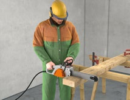
|
|
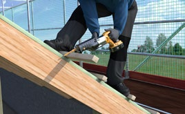
|
Abb. 61 Elektrische Handkettensäge |
Abb. 62 Handkreissäge |
Abb. 63 Elektrischer Fuchsschwanz |
|
Gefährdungen
|
|
Bei der Verwendung von Holzbearbeitungsmaschinen ist mit den nachfolgend aufgeführten besonderen Gefährdungen zu rechnen, z. B. durch:
- nicht bestimmungsgemäße Verwendung
- Schneiden, Rückschlag
- Lärm, Vibration
- Abgase, Holzstaub oder
- mangelhafte Instandhaltung und fehlende Prüfungen
|
|
Maßnahmen
|
|
Beachten Sie, dass es Beschäftigungsbeschränkungen für gewisse Personengruppen gibt (z. B. für Jugendliche vor Vollendung des 18. Lebensjahres).
| |
|
Zu Schutzalterbestimmungen finden Sie Informationen im Baustein H 900 der BG BAU. |
Bestimmungsgemäße Verwendung
Erstellen Sie eine Gefährdungsbeurteilung unter Berücksichtigung der vorgesehenen Maschine, dem Arbeitsverfahren und der Arbeitsumgebung.
Stellen Sie ausschließlich Maschinen, die CE-gekennzeichnet und für die Arbeitsaufgabe und -umgebung geeignet sind, zur Verfügung.
Stellen Sie sicher, dass die von Ihnen ausgewählte Maschine für das von Ihnen bestimmte Arbeitsverfahren geeignet ist. Sie erlangen die erforderlichen Kenntnisse aus der Betriebsanleitung des Herstellers, für welche Verwendungsarten und an welchen Arbeitsplätzen die von Ihnen ausgewählte Maschine eingesetzt werden kann.
Sorgen Sie dafür, dass sich keine unbefugten Personen im Gefahrenbereich aufhalten.
Berücksichtigen Sie bei Ihrer Beurteilung die örtlichen Bedingungen am Arbeitsplatz, an dem Sie die Maschine verwenden wollen, wie z. B. hochgelegene Arbeitsplätze, Zugänglichkeit oder enge Räume.
Weitere Einflussmöglichkeiten für die Arbeitsumgebung ergeben sich z. B. aus:
- Witterungsbedingungen
- Feuchte oder Nässe
- Beengte Arbeitsverhältnisse
| |
|
Machen Sie Ihren Beschäftigten deutlich, dass bei einem Abweichen von der bestimmungsgemäßen Verwendung gravierende Gefährdungen (z. B. Verstümmelung) die Folge sein können. |
Unterweisung
Sorgen Sie dafür, dass Beschäftigte die Eignung und Befähigung dazu haben, die Maschinen sicher zu bedienen.
Erstellen Sie eine Betriebsanweisung unter Berücksichtigung Ihrer Gefährdungsbeurteilung und der Betriebsanleitung des Herstellers. Somit bestimmen Sie den Umgang und die sichere Verwendung. Weisen Sie Ihre Beschäftigten vor der erstmaligen Verwendung auf die vorhandenen Gefahren und die sichere Verwendung der Maschine hin.
Unterweisen Sie Ihre Beschäftigten regelmäßig auf der Grundlage Ihrer Betriebsanweisung und erstellen Sie einen schriftlichen Nachweis. Geben Sie Ihren Beschäftigten die Betriebsanleitung des Herstellers zur Einsicht.
Schutz vor mechanischen Gefahren
Minimieren Sie gemäß der Betriebsanleitung des Herstellers die mechanischen Gefährdungen der Maschine.
| |
|
Beim Umgang mit Kettensägen nicht mit der Schienenspitze sägen, Rückschlaggefahr! |
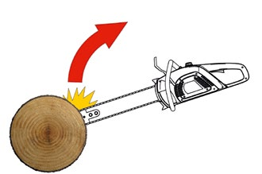
Abb. 64 Rückschlag der Kettensäge
Achten Sie darauf, dass Start-, Brems- und Schutzeinrichtungen niemals manipuliert oder demontiert werden und die erforderlichen persönlichen Schutzausrüstungen (Schnittschutz) verwendet wird. Stellen sie sicher, dass die zu bearbeitenden Werkstücke sicher geführt bzw. fixiert
werden können.
Der Gefahrenbereich um die Maschine ist freizuhalten. Achten Sie darauf, dass die Arbeitsbereiche gut begehbar und frei von Stolpergefahren (z. B. Materialreste) sind.
Sind für den Einsatz der Maschine elektrische Leitungen erforderlich, sorgen Sie dafür, dass diese keine Stolperstellen bilden.
Schutz vor physikalischen Gefahren
Verwenden Sie Elektromaschinen, die von sicheren Anschlusspunkten, z. B. PRCD-S, mit Strom versorgt werden und für den rauen Baustellenbetrieb geeignet sind.
Gewährleisten Sie, dass sich keine anderen Beschäftigten ungeschützt im Lärmbereich der Maschine aufhalten.
Reduzieren Sie nach Möglichkeit die Lärmexposition am Arbeitsplatz, z. B. durch die Verwendung schallreduzierter Arbeitsmittel und Werkzeuge.
Erwerben Sie ausschließlich vibrationsarme Hand(gehaltene)-Maschinen.
Stellen Sie geeignete persönliche Schutzausrüstungen zur Verfügung, wenn verfahrensbedingt physikalische Grenzwerte überschritten werden oder vom Hersteller in der Betriebsanleitung PSA gefordert wird, z. B. Gehörschutz.
Schutz vor Gefahrstoffen
Legen Sie Maßnahmen für den gefahrfreien Einsatz von Maschinen, die bauartbedingt gesundheitsschädigende Emissionen durch ihren Antrieb oder den Arbeitsprozess freisetzen, z. B. Abgase oder Holzstaub, fest.
Instandhaltung und Prüfung
Gewährleisten Sie, dass eine regelmäßige Instandhaltung (Inspektion, Wartung, Instandsetzung) und Prüfung gemäß den Vorgaben Ihrer Gefährdungsbeurteilung durch hierzu befähigte Personen durchgeführt wird.
Stellen Sie sicher, dass Ersatz- und Verschleißteile den in der Betriebsanleitung beschriebenen technischen Bestimmungen entsprechen.
| |
|
Vor jeder Verwendung ist die Maschine auf augenfällige Mängel zu prüfen und die sicherheitsrelevanten Funktionen sind zu testen. |
Erstellen Sie Aufzeichnungen als Nachweis über die von Ihnen veranlassten Prüfungen.
Abb. 65 Lärmarmes Sägeblatt für Baustellenkreissäge
|
3.2.7 Maschinen zum Heben von Personen
Maschinen zum Heben von Personen erleichtern und beschleunigen die Arbeiten wie z. B. bei der
Demontage von Bauteilen. Sie dienen zum Befördern von Personen zu hochgelegenen Arbeitsplätzen
(Bauaufzüge mit Personenbeförderung) sowie als Arbeitsplätze zur Ausführung der verschiedensten
Tätigkeiten bei Abbruch- und Rückbauarbeiten. Die wechselnden Einsatzorte sowie
die Vielzahl der auszuführenden Arbeiten verlangen eine sorgfältige Planung und Vorbereitung
des Maschineneinsatzes.
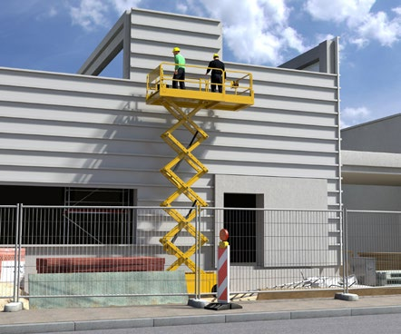
|
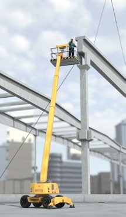
|
Abb. 66 Scherenarbeitsbühne |
Abb. 67 Teleskopbühne |
|
Gefährdungen
|
|
Bei der Verwendung von Maschinen zum Heben von Personen ist mit den nachfolgend aufgeführten besonderen Gefährdungen zu rechnen, die unmittelbar in Abhängigkeit zum jeweiligen Verwendungszweck stehen:
- nicht bestimmungsgemäße Verwendung aufgrund fehlender oder mangelhafter Unterweisung
- Absturz an der Ladestelle bzw. aus der angehobenen Arbeitsbühne
- herabfallende oder sich unkontrolliert bewegende Gegenstände
- Unterschreitung der Sicherheitsabstände, Verlust der Standsicherheit
- Unterschreiten der Schutzabstände zu unter Spannung stehenden blanken Teilen, z. B. Freileitungen
- mangelhafte Instandhaltung und fehlende Prüfungen
|
|
Maßnahmen
|
|
Bestimmungsgemäße Verwendung Setzen Sie für das Heben von Personen Maschinen ein, welche vom Hersteller hierfür vorgesehen und entsprechend ausgerüstet sind. Dies sind z. B.:
- Hubarbeitsbühnen
- Teleskopstapler/-lader mit einer Arbeitsplattform als Zusatzausrüstung, wenn diese Kombination vom Hersteller für das Heben von Personen vorgesehen und in der Bedienungsanleitung beschrieben ist.
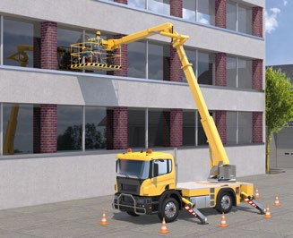
Abb. 68 Teleskopbühne
Verwenden Sie die Maschine/Zusatzausrüstung entsprechend der Bedienungsanleitung des Herstellers.
Stellen Sie sicher, dass Beschäftigte die Eignung und Befähigung zum sicheren Bedienen besitzen. Unterweisen Sie Ihre Beschäftigten auf der Grundlage der Betriebsanleitung des Herstellers. Dies kann durch eine Ausbildung oder geeignete Qualifikationsmaßnahme sichergestellt werden. Lassen Sie den Notablass üben.
Stellen Sie den Beschäftigten die Betriebsanleitung des Herstellers und Ihre Betriebsanweisung zur Verfügung und ermöglichen Sie Ihnen, diese zu lesen und zu verstehen.
Stellen Sie ausschließlich Maschinen, die CE-gekennzeichnet und für die Arbeitsaufgabe und -umgebung geeignet sind, zur Verfügung.
Berücksichtigen Sie die örtlichen Bedingungen, an dem Sie die Maschinen verwenden wollen, wie z. B. öffentlicher Verkehrsraum, Nähe zu Freileitungen, beengte Platzverhältnisse. Achten Sie auch auf Einflüsse der möglichen Arbeitsumgebungen, wie z. B. Wettererscheinungen und Beleuchtung.
| |
|
Aktuelle Hinweise zum Stand der Technik finden Sie u. a. auf der Seite der Bundesanstalt für Arbeitsschutz und Arbeitsmedizin
► www.baua.de (Suchbegriff: BekBS). |
Beachten Sie, dass die Personenbeförderung mit hierfür nicht bestimmungsgemäß vorgesehenen Arbeitsmitteln (z. B. Krane) nur ausnahmsweise und nur unter Ergreifung einer Vielzahl von besonderen Maßnahmen zulässig ist.
Absturzsicherung
Sorgen Sie beispielsweise dafür, dass die Montage und Demontage von Bauaufzügen oder auch von Befahranlagen unter Verwendung geeigneter Absturzsicherungen geschieht.
Hochgelegene Lade- bzw. Haltestellen sind immer gegen Absturz zu sichern, wenn sich der Lastträger nicht an ihnen befindet. Lassen Sie sichere Übergänge zwischen den Lade- bzw. Haltestellen und den Lastträgern vorsehen.
Beachten Sie unter Berücksichtigung der Betriebsanleitung des Herstellers, dass bei dem Risiko des Herauskatapultierens aus einer Arbeitsbühne die geeignete PSAgA zur Verfügung zu stellen ist. Diese muss speziell für die Verwendung bestimmt und zugelassen sein, z. B. Höhensicherungsgeräte mit max. Gesamtlänge 1,8 m, kantengeprüft.
Unterweisen Sie Ihre Beschäftigten über die erforderliche und richtige Verwendung von PSA gegen Absturz in den Arbeitsbühnen. Ergänzen Sie die Unterweisung mit praktischen Übungen. Lassen Sie nur die Nutzung von in der Betriebsanleitung vorgesehenen Anschlagpunkten zu. Sorgen Sie dafür, dass nur Arbeitsbühnen eingesetzt werden, die für die Benutzung von Auffangsystemen ausgelegt sind.
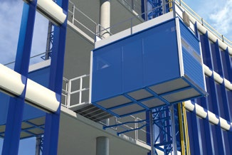
Abb. 69 Haltestelle mit Übergang
Schutz vor herabfallenden Gegenständen
Sichern Sie die unteren Zugänge oder Haltestellen vor herabfallenden Gegenständen mit einem Schutzdach bzw. sperren Sie den Gefahrenbereich am Boden ausreichend und wirkungsvoll ab.
Stellen Sie sicher, dass Werkzeuge und Kleinmaterial in geeigneten Behältern mitgeführt werden.
Bei Beschleunigungs- und Bremsbewegungen muss sichergestellt sein, dass die Beschäftigten durch umkippende oder wegrollende Gegenstände nicht verletzt werden. Gegebenenfalls sind die Gegenstände zu sichern.
Sicherheitsabstände und Standsicherheit
Sorgen Sie für ausreichende Standsicherheit der Maschinen. Informieren Sie sich, wenn erforderlich, vor der Aufstellung über die Tragfähigkeit der Aufstandsfläche und halten Sie die Sicherheitsabstände zu Baugruben und Gräben ein.
Montage, Betrieb und Demontage müssen nach der Betriebsanleitung erfolgen. Insbesondere betrifft dies beispielsweise die vorgeschriebenen Verankerungen am Bauwerk, die Ballastierung der Auslegerkonstruktionen, das Ausfahren der Abstützungen und die Einhaltung der zulässigen Tragfähigkeit (Nutzlast).
Arbeiten in der Nähe von Freileitungen Wenn in der Nähe von elektrischen Freileitungen gearbeitet werden muss, beachten Sie die entsprechenden Hinweise im Kapitel 3.1.5 Elektrische Gefährdungen.
Instandhaltung und Prüfung
Gewährleisten Sie, dass eine regelmäßige Instandhaltung (Inspektion, Wartung, Instandsetzung) gemäß der Betriebsanleitung des Herstellers durchgeführt wird. Sorgen Sie dafür, dass Ersatz- und Verschleißteile den in der Betriebsanleitung beschriebenen technischen Spezifikationen entsprechen, z. B. durch die Verwendung von Originalteilen.
Stellen Sie sicher, dass die Instandhaltung nur durch dafür qualifizierte Beschäftigte durchgeführt wird. Informieren Sie sich bei Reparaturen über spezielle Anforderungen, z. B. bei Schweiß- und Elektroarbeiten. Prüfen Sie oder Ihre Beschäftigten die Maschine vor jedem Einsatz auf augenfällige Mängel und sicherheitsrelevante Funktionen.
Bestimmen Sie die Prüffristen mittels Ihrer Gefährdungsbeurteilung unter Berücksichtigung der Vorgaben der Hersteller und den Einsatzbedingungen. Sorgen Sie dafür, dass Prüfungen nur von zur Prüfung befähigten Personen durchgeführt werden. Erstellen Sie Aufzeichnungen als Nachweis über die von Ihnen veranlassten Prüfungen.
|
3.2.8 Maschinen zum Heben von Lasten
Durch den Einsatz von Maschinen zum Heben von Lasten wird den Beschäftigten schwere körperliche
Arbeit erspart. Bei unsachgemäßer Bedienung können gehobene Lasten unkontrolliert frei
werden. Lasten können sowohl geführt, z. B. mit Zahnstangenaufzügen, oder ungeführt und frei
hängend, wie z. B. am Kran, gehoben werden. Die wechselnden Einsatzorte und die damit verbundene
Aufstellung und Montage der Hebezeuge sowie die Vielzahl der verschiedenen auszuführenden
Arbeiten verlangen eine besondere Sorgfalt bei Planung, Vorbereitung und Betrieb.
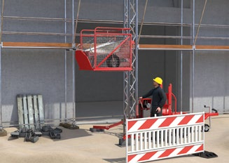
|
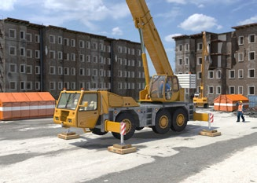
|
Abb. 70 Lastenaufzug |
Abb. 71 Mobilkran |
|
Gefährdungen
|
|
Beim Heben von Lasten auf Baustellen mit Maschinen ist mit den nachfolgend aufgeführten besonderen Gefährdungen zu rechnen, die unmittelbar in Abhängigkeit zum jeweiligen Verwendungszweck stehen.
- Nicht bestimmungsgemäße Verwendung aufgrund mangelhafter Unterweisung und Einweisung
- herabfallende und unkontrolliert bewegte Gegenstände
- Unterschreitung der Sicherheitsabstände
- Verlust der Standsicherheit von Baumaschinen
- Unterschreiten der Schutzabstände zu unter Spannung stehenden blanken Teilen, z. B. Freileitungen
- nicht ergonomische Steuerstände und Fahrersitze sowie schädigende klimatische Bedingungen
- mangelhafte Instandhaltung und fehlende Prüfungen
|
|
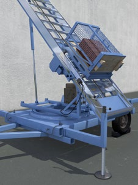
|
Abb. 72 Turmdrehkrane |
Abb. 73 Mobiler Lastenaufzug |
|
Maßnahmen
|
|
Bestimmungsgemäße Verwendung
Planen Sie Ihren Maschineneinsatz unter Berücksichtigung der auszuführenden Arbeitsverfahren, der individuellen Leistungsfähigkeit Ihrer Beschäftigten und der Einflüsse aus dem Umfeld der Baustelle.
Stellen Sie ausschließlich Maschinen, die CE-gekennzeichnet sind, zur Verfügung.
| |
|
Die erforderlichen Informationen zur bestimmungsgemäßen Verwendung und zum sicheren Betrieb finden Sie in der Betriebsanleitung des Herstellers. |
Beurteilen Sie die persönlichen Voraussetzungen Ihrer Beschäftigten wie z. B. Qualifikation, Erfahrung, Belastbarkeit und Einschränkungen der Leistungsfähigkeit. Machen Sie sich ein Bild von den örtlichen Bedingungen am Arbeitsplatz, an dem Sie die Maschine verwenden wollen, z. B. öffentlicher Verkehrsraum, Nähe zu Freileitungen oder Bahnlinien. Beachten Sie auch Einflüsse der möglichen Arbeitsumgebungen wie z. B.:
- Wetter: Wind, Regen, Schnee, Hagel, Frost
- Tragfähigkeit des Untergrundes
- Wasserzutritt im Bereich von Böschungen.
Überprüfen Sie, ob Ihr Arbeitsverfahren mit der eingesetzten Maschine dem Stand der Technik entspricht. Legen Sie gegebenenfalls geeignete technische, organisatorische und persönliche Schutzmaßnahmen fest, damit die Maschinen sicher verwendet werden können.
| |
|
Aktuelle Hinweise zum Stand der Technik finden Sie u. a. auf der Seite der Bundesanstalt für Arbeitsschutz und Arbeitsmedizin
► www.baua.de (Suchbegriff: BekBS). |
Einweisung und Unterweisung
Sorgen Sie dafür, dass Beschäftigte die Eignung und Befähigung zum sicheren Bedienen von Maschinen besitzen. Dies kann durch eine Ausbildung oder geeignete Qualifikationsmaßnahmen sichergestellt werden.
| |
|
Ein Formular zur Beauftragung eines Kranführers bzw. einer Kranführerin finden Sie im Baustein F 701 der BG BAU. |
Stellen Sie fest, ob eine Verwendungseinschränkung für bestimmte Personengruppen besteht, z. B. Jugendliche vor Vollendung des 18. Lebensjahres. Für diese Personengruppen gelten besondere Bestimmungen.
Stellen Sie den Beschäftigten die Betriebsanleitung des Herstellers und Ihre Betriebsanweisung zur Verfügung und ermöglichen Sie Ihnen, diese zu lesen und zu verstehen.
Unterweisen Sie Ihre Beschäftigten vor der Bedienung von Maschinen auf der Grundlage der Betriebsanweisung. Dokumentieren Sie die Unterweisung und die Einweisung. Beauftragen Sie die Maschinenführenden schriftlich. Unterweisen Sie auch weitere Beschäftigte im Umfeld der Maschinen, z. B. Anschläger.
| |
|
Führer von Teleskopmaschinen und Turmdrehkranen gelten als qualifiziert, wenn sie an einer zugelassenen Prüfungsstätte die Prüfung zum/zur Maschinenführer/in bestanden haben.
Weitere Informationen:
► www.zumbau.org. |

Abb. 74 ZUMBau Logo
Schutz vor herabfallenden Gegenständen
Vermeiden Sie den Transport von Lasten über Personen. Stellen Sie geeignete Lastaufnahmemittel, z. B. geeignete Behälter für Kleinteile, Gabeln und Anschlagmittel, z. B. Ketten, Hebebänder, zur Verfügung.
Verwenden Sie Leitseile zur Positionierung von ungeführten Lasten.
Standsicherheit und Sicherheitsabstände
Sorgen Sie für ausreichende Standsicherheit von Maschinen, Bauteilen und Baumaterial. Informieren Sie sich vor der Aufstellung über die Tragfähigkeit der Aufstandsfläche und halten Sie die Sicherheitsabstände zu Baugruben und Gräben ein. Gewährleisten Sie, dass Lastbegrenzungs-, Brems- und Schutzeinrichtungen niemals manipuliert oder demontiert werden.
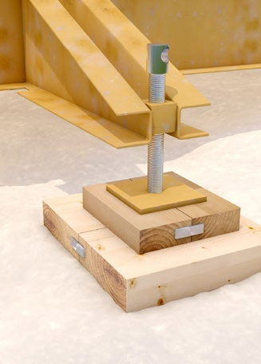
|
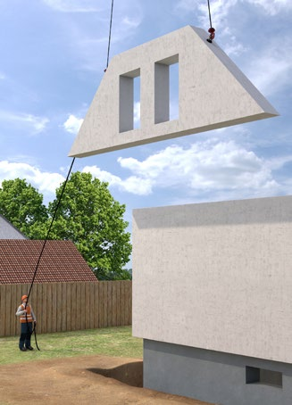
|
Abb. 75 Fachgerechte Abstützung |
Abb. 76 Verwendung von Leitseilen beim Transport von Fertigteilen |
Kennzeichnen Sie Gefahrbereiche und sperren Sie diese möglichst ab, z. B. Schwenkbereich der Ballastierung am Untendreherkran. Vermeiden Sie beengte Verhältnisse an Arbeitsplätzen. Gewährleisten Sie, dass sich keine anderen Beschäftigten im Gefahrenbereich aufhalten.
Arbeiten in der Nähe von Freileitungen Wenn in der Nähe von elektrischen Freileitungen gearbeitet werden muss, beachten Sie die entsprechenden Hinweise im Kapitel 3.1.5 Elektrische Gefährdungen.
Günstige ergonomische und klimatische Bedingungen
Wählen Sie Maschinen, die dem Bedienpersonal ein ergonomisches Sitzen ermöglichen. Sorgen Sie an den Steuerständen für angemessene Arbeitsbedingungen z. B. durch Möglichkeiten der Beschattung, Kühlung oder Heizung.
Instandhaltung und Prüfung
Gewährleisten Sie, dass eine regelmäßige Instandhaltung (Inspektion, Wartung, Instandsetzung) gemäß der Betriebsanleitung des Herstellers durchgeführt wird.
Sorgen Sie dafür, dass Ersatz- und Verschleißteile den in der Betriebsanleitung beschriebenen technischen Spezifikationen entsprechen, z. B. durch die Verwendung von Originalteilen. Stellen Sie sicher, dass die Instandhaltung nur durch dafür qualifizierte Beschäftigte durchgeführt wird. Informieren Sie sich bei Reparaturen über die speziellen Anforderungen, z. B. bei Schweiß- und Elektroarbeiten. Sorgen Sie dafür, dass die Maschine vor jedem Einsatz auf augenfällige Mängel und sicherheitsrelevante Funktionen geprüft wird. Bestimmen Sie die Prüffristen mittels Ihrer Gefährdungsbeurteilung unter Berücksichtigung der Vorgaben der Hersteller, den Einsatzbedingungen und unter Einhaltung der Mindestprüffristen, z. B. bei Kranen.
Sorgen Sie dafür, dass Prüfungen von zur Prüfung befähigten Personen bzw. Prüfsachverständigen (bei Kranen) durchgeführt werden. Erstellen Sie Aufzeichnungen als Nachweis über die von Ihnen veranlassten Prüfungen.
| |
|
Hinweise zur Prüfung finden Sie in der Betriebssicherheitsverordnung. Im Anhang III werden Angaben zur Prüfung von Kranen und zu den jeweiligen Prüffristen getroffen.
Ein Formular zur Bestellung einer zur Prüfung befähigten Person finden Sie im Baustein F 704 der BG BAU. |
|
3.2.9 Anschlag- und Lastaufnahmemittel
Die richtige Auswahl und Verwendung von Anschlag- und Lastaufnahmemittel sind eine wichtige
Voraussetzung für sichere Hebe- und Transportvorgänge. Anschlag- und Lastaufnahmemittel unterliegen
aufgrund ihrer besonderen Beanspruchungen einem hohen Verschleiß. Der Lagerung,
Prüfung und Instandhaltung kommt deswegen eine große Bedeutung zu.
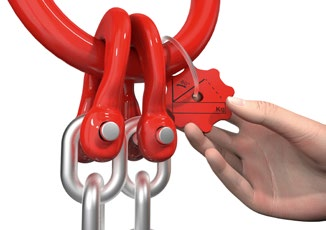
|
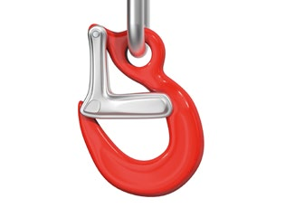
|
Abb. 77 Kennzeichnung eines Anschlagkettengehänges |
Abb. 78 Lasthaken mit Sicherungsfalle |
|
Gefährdungen
|
|
Achten Sie bei der Verwendung von Anschlag- und Lastaufnahmemitteln auf Baustellen insbesondere auf folgende Gefährdungen:
- Getroffen werden von herabfallenden Lasten aufgrund
- beschädigter oder nicht ausreichend tragfähiger Anschlag- und Lastaufnahmemittel
- unzureichender Sicherung lose transportierter Lasten
- unsachgemäßes Anschlagen oder Verwendung ungeeigneter Anschlag- und Lastaufnahmemittel
- ungenügende Qualifikation der Anschläger
- über die Ladekante hinaus beladene Lastaufnahmemittel
- die Verwendung kraftschlüssig wirkender Lastaufnahmemittel ohne formschlüssige Halteeinrichtung
- Absturz der Beschäftigten von
- hochgelegenen Arbeitsplätzen beim Anschlagen von Lasten
- Lastaufnahmemitteln durch unerlaubtes Mitfahren auf und in diesen
- Stromschlag bei Arbeiten in der Nähe von elektrischen Freileitungen
|
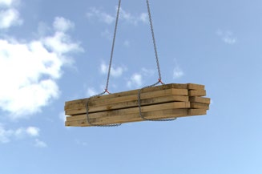
Abb. 79 Kettengehänge im Schnürgang
|
Maßnahmen
|
|
Schutz vor herabfallenden Gegenständen
Sorgen Sie dafür, dass entsprechend den zu hebenden Lasten und deren Abmessungen geeignete Anschlag- und Lastaufnahmemittel verwendet werden.
Wählen Sie die Anschlagmittel wie Seile, Ketten und Hebebänder z. B. nachfolgenden Kriterien aus:
- Gewicht, Form und Abmessungen der Last
- Greifpunkten
- Einhakvorrichtungen
- Art und Weise des Anschlagens
- Neigungswinkel
- Witterungsbedingungen, z. B. Temperaturen, Nässe
Anschlag- und Lastaufnahmemittel dürfen über ihre zulässige Tragfähigkeit hinaus nicht belastet werden. Die Tragfähigkeit ist, neben weiteren wichtigen Informationen, der Kennzeichnung zu entnehmen.
Lassen Sie die Lasten nur an nachgewiesenen und gekennzeichneten Anschlagpunkten anschlagen. Beachten Sie bei der Verwendung/Inverkehrbringung von selbst hergestellten Lastaufnahmemitteln (z. B. Transportankern, Anschlagösen, Klemmen) die einschlägigen europäischen und nationalen Vorgaben, wie beispielsweise die Anbringung der Kennzeichnung und die Erstellung einer Betriebsanleitung.
Beachten Sie, dass bei der Verwendung mehrsträngiger Gehänge nur zwei Stränge als tragend angenommen werden dürfen, wenn keine Ausgleichseinrichtungen vorhanden sind. Der maximale Neigungswinkel des Anschlagmittels darf 60 Grad nicht überschreiten.
Sorgen Sie dafür, dass lange stabförmige Lasten nicht in Einzelschlingen angeschlagen, sondern mit beispielsweise Traversen gehoben werden, damit sie nicht durchbiegen, brechen oder herausrutschen können.
Lassen Sie nur Anschlagmittel verwenden, die mit Sicherheitshaken ausgerüstet sind.
Müssen Lasten mit scharfen Kanten gehoben werden, sind die verwendeten Anschlagmittel durch Kantenschoner oder Schläuche zu schützen.
Verwenden Sie auf Baustellen nur formschlüssig wirkende Lastaufnahmemittel. Gewährleisten Sie, dass Lasten mit kraftschlüssig wirkenden Lastaufnahmemitteln nicht über Beschäftigte gehoben werden. Auf Baustellen eingesetzte Klemmen müssen formschlüssig wirken oder mit einer zusätzlichen formschlüssigen Halteeinrichtung (z. B. Netze, Käfige, Ketten) ausgerüstet sein.
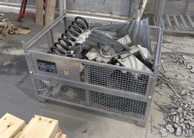
Abb. 80 Kranbare Gitterbox
| |
|
Informationen zum Anschlagen von Lasten und Anschlagmittel finden Sie zudem im Baustein B 164 der BG BAU. |
Unterweisen Sie die an den Hebevorgängen beteiligten Beschäftigten (Kranführende, Anschläger) in die bestimmungsgemäße Verwendung von Anschlag- und Lastaufnahmemitteln, in die richtige Auswahl der Anschlagart und -weise und in die Erkennung von sicherheitsrelevanten Mängeln an Anschlag- und Lastaufnahmemitteln.
Entziehen Sie Anschlag- und Lastaufnahmemittel der weiteren Benutzung, wenn Mängel festgestellt werden, die die Sicherheit beeinträchtigen.

Abb. 81 Beispiele für Ablegekriterien von Drahtseilen
| |
|
Ablegekriterien für Anschlagmittel enthält die DGUV Regel 100-500 und 100-501, Kapitel 2.8 "Betreiben von Lastaufnahmeeinrichtungen im Hebezeugbetrieb". |
Absturzsicherung
Prüfen Sie die Möglichkeit der Verwendung von fernauslösbaren Lastaufnahmemitteln oder Hubarbeitsbühnen, um den Einsatz von Leitern zur Erreichung hochgelegener Arbeitsplätze für das An- und Abschlagen von Lasten zu minimieren.
Stellen Sie sicher, dass sich die Beschäftigten während der Hebe- und Transportvorgänge nicht auf den Lastauf- nahmemitteln, wie z. B. Traversen, Krangabeln oder auf der Last selbst aufhalten.
Lastaufnahmemittel dürfen nicht über deren Rand hinaus beladen werden. Herausragende Lasten sind gegebenenfalls gegen Herabfallen gesondert zu sichern.
Verzichten Sie bei der Demontage von Fertigteilen auf die Verwendung von Klemmen ohne formschlüssige Halteeinrichtung wie z. B. Netze, Planen, Sicherungsbügel. Bei einem unvermeidbaren Aufenthalt von Beschäftigten im Gefahrenbereich (bedingt durch das manuelle Führen der Last) ist ein kraftschlüssiges Heben von Lasten nicht zulässig.
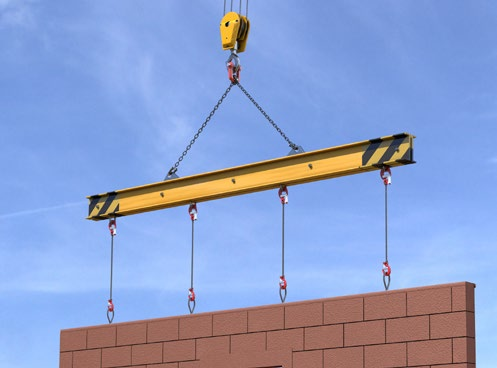
Abb. 82 Traverse bei Demontage
Schutz vor Stromschlag
Klären Sie mit Ihrem Auftraggeber bzw. dem Versorgungsunternehmen ab, welche Maßnahmen bei Unterschreitung der vorgeschriebenen Sicherheitsabstände zu elektrischen Freileitungen zu ergreifen sind.
Beachten Sie dabei die Abmessungen der zu hebenden Lasten, die Länge der Anschlagmittel, die konstruktive Gestaltung der Lastaufnahmemittel sowie ein mögliches Pendeln der hängenden Last.
| |
|
Informationen zu Arbeiten in der Nähe von elektrischen Freileitungen finden Sie im Baustein C 412 der BG BAU. |
Lagerung, Instandhaltung und Prüfung
Bewahren Sie Anschlag- und Lastaufnahmemittel geschützt vor Witterungseinflüssen und aggressiven Stoffen auf, damit ihre Funktionsfähigkeit nicht beeinträchtigt wird.
Gewährleisten Sie, dass eine regelmäßige Instandhaltung (Inspektion, Wartung, Instandsetzung) gemäß der Betriebsanleitung des Herstellers durchgeführt wird.
Sorgen Sie dafür, dass Ersatz- und Verschleißteile den in der Betriebsanleitung beschriebenen technischen Spezifikationen entsprechen. Stellen Sie sicher, dass die Instandhaltung nur durch dafür qualifizierte Beschäftigte durchgeführt wird.
Prüfen Sie oder Ihre Beschäftigten die Anschlag- und Lastaufnahmemittel vor jedem Einsatz auf augenfällige Mängel und sicherheitsrelevante Funktionen. Bestimmen Sie die Prüffristen mittels Ihrer Gefährdungsbeurteilung unter Berücksichtigung der Vorgaben der Hersteller, den Einsatzbedingungen und unter Einhaltung der Mindestprüffristen.
Sorgen Sie dafür, dass Prüfungen nur von zur Prüfung befähigten und vom Unternehmer oder der Unternehmerin beauftragten Personen durchgeführt werden. Erstellen Sie Aufzeichnungen als Nachweis über die von Ihnen veranlassten Prüfungen der Anschlag- und Lastaufnahmemittel.
|
3.3 Grundanforderungen an Abbrucharbeiten
Abbrucharbeiten an Bauwerken und technischen Anlagen können mit einer Vielzahl von verschiedenen
Abbruchverfahren und -maschinen realisiert werden. In Abhängigkeit vom Abbruchobjekt,
dem gewählten Verfahren und den örtlichen Umgebungsbedingungen bestehen dabei unterschiedliche
Gefährdungen. Daher müssen Sie die Abbrucharbeiten mit besonderer Sorgfalt planen
und vorbereiten. Erstellen Sie vor Aufnahme der Abbrucharbeiten eine schriftliche
Abbruchanweisung.
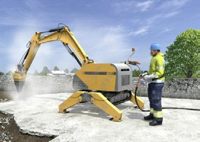
|
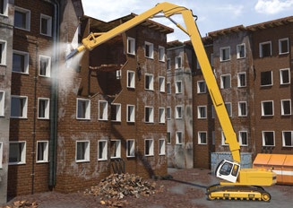
|
Abb. 83 Ferngesteuerte Abbruchmaschine |
Abb. 84 Abbruchbagger mit Longfrontausrüstung |
|
Weitere Informationen
|
- ATV DIN 18459 "Abbruch- und Rückbauarbeiten"
- DIN 18007 "Abbrucharbeiten - Begriffe, Verfahren, Anwendungsbereiche"
- Baustein-Merkheft der BG BAU, Abrufnr. 402: Abbruch und Rückbau
|
|
Gefährdungen
|
|
Bei Abbrucharbeiten bestehen insbesondere Gefährdungen durch:
- Unkontrolliert bewegte Teile, z. B. herabfallende und umstürzende Bauteile
- Absturz
- Stolpern, Rutschen, Stürzen
- ungeschützt bewegte Maschinenteile, z. B. bei Verwendung von Handabbruchwerkzeugen
- schwere dynamische Arbeit und Zwangshaltung, z. B. manuelle Handhabung von Lasten
- Umsturz bzw. Einbruch des Abbruchgerätes aufgrund eines nicht ausreichend tragfähigen Untergrundes
- mineralischen Staub
- Lärm, Vibrationen
- elektrischer Schlag, Lichtbögen, z. B. durch Freileitungen
- Brand und Explosion
- Gefahrstoffe
- Biostoffe, z. B. Schimmelpilze, Taubenkot, Fäkalkeime
|
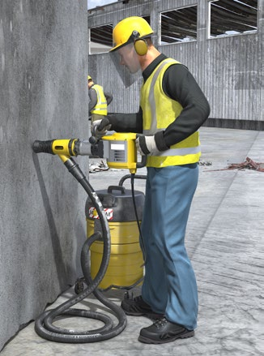
Abb. 85 Bohrhammer mit Absaugung
|
Maßnahmen
|
|
Planen und Vorbereiten der Abbrucharbeiten
Besichtigen Sie das Abbruchobjekt. Fordern Sie vom Auftraggeber entsprechende Unterstützung an, z. B. Bestandspläne, Angaben zu Gebäudeschadstoffen.
Legen Sie unter Beachtung der Baukonstruktion das Abbruchverfahren sowie die Reihenfolge der durchzuführenden Arbeiten fest.
Erstellen Sie eine schriftliche Abbruchanweisung mit den notwendigen Schutzmaßnahmen.
Planen Sie sichere Arbeitsplätze und Verkehrswege.
Sichern Sie das Abbruchobjekt und den Baustellenbereich gegenüber unbefugtem Betreten durch Dritte.
Abbruchanweisung
Abbruchanweisungen in Schriftform sind insbesondere erforderlich bei:
- Abbruch mit Großgeräten
- Einziehen
- Demontagearbeiten
- Sprengarbeiten
Weisen Sie Ihre Beschäftigten anhand der Abbruchanweisung in die Arbeiten ein.
| |
|
Eine Vorlage für eine Abbruchanweisung finden Sie unter Punkt 5 "Hinweise/Empfehlungen" |
Durchführung der Abbrucharbeiten
Beauftragen Sie eine fachlich geeignete aufsichtführende Person. Sorgen Sie für ausreichende Qualifikation Ihrer Beschäftigten, insbesondere der Baugeräteführer und Baugeräteführerinnen.
| |
|
Führer und Führerinnen von Abbruch- und Erdbaumaschinen gelten zum Beispiel als qualifiziert, wenn sie an einer zugelassenen Prüfungsstätte die Prüfung zum/zur Maschinenführer/in bestanden haben.
Weitere Informationen: ► www.zumbau.org.
|
Abb. 86 ZUMBau Logo
Baustelleneinrichtung, Sanitäreinrichtungen, Verkehrswege
Sorgen Sie für eine geeignete Baustelleneinrichtung. Dazu gehören u. a.:
- Toiletten, Waschmöglichkeiten, Aufenthaltsräume
- Lagerflächen, Stellplätze für die Baugeräte
- Elektro-, Wasser- sowie Abwasseranschluss
- sichere Verkehrswege
- Baustellensicherung
Absperren Gefahrenbereiche
Der Aufenthalt von Personen im Gefahrenbereich von Abbruch- und Rückbauarbeiten ist verboten. Kennzeichnen Sie Gefahrenbereiche und sichern Sie diese ggf. durch Absperrungen.
Befahrbarkeit von Anlagen und Bauteilen
Überprüfen Sie die Tragfähigkeit und Befahrbarkeit von Anlagen und Bauteilen, insbesondere von Decken. Achten Sie dabei auch auf unterirdische Anlagen, wie Kanäle und Schachtabdeckungen.
|
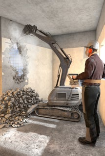
|
Abb. 87 Baustelleneinrichtung |
Abb. 88 ferngesteuertes Abbruchgerät |
Vorhandene Versorgungsleitungen
Beachten Sie eventuell vorhandene Versorgungsleitungen im und außerhalb des Bauwerkes. Überprüfen Sie die Spannungsfreiheit von elektrischen Leitungen und Anlagen im Abbruchbereich. Kennzeichnen Sie zu erhaltene Versorgungsleitungen. Vergewissern Sie sich, dass eine eventuell erforderliche Medienfreiheit gegeben ist.
Brand und Explosion
Beachten Sie mögliche Brand- und Explosionsgefährdungen. Denken Sie dabei auch an eventuell in Anlagenteilen enthaltene brennbare Reststoffe. Sorgen Sie während der Schweißarbeiten für eine Brandwache und geeignete Feuerlöschmittel.
Unterbrechen Sie beim Antreffen von nicht erkannten oder aufgebrochenen Kampfmitteln/Blindgängern sofort die Arbeiten und informieren Sie die zuständigen Stellen.
| |
|
Blindgänger/Kampfmittel können beispielsweise in Räumen/Kellern abgelegt, einbetoniert, im Baugrund oder unter Bodenplatten (überbaut) vorhanden sein. |
Gebäudeschadstoffe und Biostoffe
Legen Sie die Schutzmaßnahmen bei Tätigkeiten mit Gefahrstoffen und Biostoffen fest. Eine eventuell erforderliche Schadstoffsanierung soll in der Regel vor Beginn der Abbruch- und Rückbauarbeiten durch Fachfirmen erfolgen.
| |
|
Bei Tätigkeiten in kontaminierten Bereichen sind besondere Regelungen zu beachten, siehe Kapitel 3.1.3 |
Ergonomische Arbeitsverfahren
Führen Sie die Abbruch- und Rückbauarbeiten so durch, dass Ihre Beschäftigten nicht überbeansprucht werden, z. B. durch Zwangshaltungen oder Tragen schwerer Lasten.
| |
|
Bewegen Sie schwere Lasten mit geeigneten Hebezeugen und Transportmitteln, wie z. B. Krane, Aufzüge, Kompaktlader. |
Staubbekämpfung
Vermeiden Sie durch die Wahl eines geeigneten Abbruchverfahrens und Abbruchwerkzeuges die Freisetzung von Staub. In Innenbereichen sind Abbruchgeräte mit Staubabsaugung einzusetzen. Bei Staubfreisetzung kann eine Staubreduzierung durch Staubabsaugung nahe an der Quelle oder mit Wasserbindung erfolgen.
| |
|
Eine Checkliste für Abbrucharbeiten finden Sie unter Punkt 5 "Hinweise/Empfehlungen" |
|
3.4 Entkernungsarbeiten
Vor dem Abbruch baulicher und technischer Anlagen erfolgt in der Regel eine Entkernung. Dabei
werden am Abbruchobjekt befestigte oder eingebaute Anlagen und Gegenstände, die keinen Einfluss
auf die Standsicherheit des Bauwerkes oder der Anlage haben, z. B. Fenster, Türen, Rohrleitungen
und nichttragende Wände beseitigt. Vor einer Entkernung ist häufig eine Entrümpelung
von z. B. Mobiliar und Bodenbelägen notwendig. Hier können unterschiedliche Gefährdungen,
z. B. durch Stolpern, Rutschen, Stürzen sowie durch Gebäudeschadstoffe und Biostoffe auftreten.
Treffen Sie auch Maßnahmen gegen hohe Belastungen Ihrer Beschäftigten beim Heben und Tragen schwerer Lasten.
|
|
|
Abb. 89 Ausbau Wandverkleidung |
Abb. 90 Ausbau Fußbodenbelag |
Abb. 91 Absetzcontainer |
|
Gefährdungen
|
|
Bei Entkernungs- und Entrümpelungsarbeiten bestehen insbesondere folgenden Gefährdungen:
- Absturz
- Stolpern, Rutschen, Stürzen
- ungeschützt bewegte Maschinenteile
- schwere dynamische Arbeit z. B. manuelle Handhabung von Lasten
- Gefahrstoffe, Staub
- Schimmelpilze, Taubenkot
- elektrischer Schlag
|
|
Maßnahmen
|
|
Planen der Entkernungsarbeiten
Besichtigen Sie das zu entkernende Gebäude und legen Sie den Umfang der Arbeiten fest. Planen Sie Verkehrswege und Übergabestellen der ausgebauten Gegenstände und des Entkernungsmaterials. Halten Sie Treppenhäuser mit Geländern und Aufzüge funktionsfähig.
Sorgen Sie für sichere Verkehrswege im und außerhalb des Abbruchobjektes.
Sichern Sie das Abbruchobjekt und den Baustellenbereich gegenüber unbefugtem Betreten durch Dritte.
Versorgungsleitungen
Vergewissern Sie sich, welche Medien wie Strom, Gas, Wasser noch angeschlossen sind und welche Gefahren für Ihre Beschäftigten bei den vorgesehenen Arbeiten von diesen ausgehen können.
Lassen Sie Leitungen, welche nicht mehr benötigt werden, durch den Eigentümer bzw. das Versorgungsunternehmen abstellen und gegebenenfalls das enthaltene Medium entleeren.
Ermitteln Sie die im Arbeitsbereich verlaufenden unter Spannung stehenden elektrischen Leitungen. Veranlassen Sie die Freischaltung der elektrischen Leitungen. Sorgen Sie dafür, dass diese Leitungen nicht wieder unter Spannung gesetzt werden können.
Kennzeichnen Sie Medien, wie z. B. elektrische Leitungen, wenn diese benötigt werden und informieren Sie Ihre Beschäftigten.
Gefahrstoffe, Biostoffe
Ermitteln Sie Gefährdungen durch Gefahrstoffe, Schimmelpilze sowie Taubenkot und legen Sie entsprechende Maßnahmen zum Schutz Ihrer Beschäftigten fest.
| |
|
In den Bausteinen C 323, C 324 und D 504 der BG BAU finden Sie dazu weitere Hinweise. |
Beauftragen Sie gegebenenfalls eine Fachfirma mit der Beseitigung dieser Stoffe.
Vermeiden Sie Gefährdungen durch Abgase und Dieselpartikel in ganz oder teilweise geschlossenen Arbeitsbereichen, z. B. durch den Einsatz von elektrisch betriebenen Maschinen.
Entrümpelungsarbeiten
Gestalten Sie die Arbeiten ergonomisch. Stellen Sie geeignete Arbeitsmittel, wie z. B. Hebe- und Tragehilfen, zur Verfügung.
Verwenden Sie Transportmittel, wie z. B. Kompaktlader zum Befördern von schweren Gegenständen.
Nutzen Sie Aufzüge zum vertikalen Transport von Material.
Entkernungsarbeiten
Bevorzugen Sie den Einsatz von Abbruchmaschinen, um körperliche Belastungen Ihrer Beschäftigten zu reduzieren.
Minimieren Sie Risiken durch Einsatz ferngesteuerter Abbruchmaschinen.
Beachten Sie beim Befahren mit Abbruchmaschinen die Tragfähigkeit der Geschossdecken.
Schaffen Sie geeignete Abwurfmöglichkeiten mit entsprechenden Absturzsicherungen.
Abwurfschächte müssen regelmäßig beräumt werden.
Überlasten Sie Geschossdecken nicht durch Abbruchmaterial.
Entfernen von Zwischendecken
Erkunden Sie den Zustand und die Befestigung von Zwischendecken.
Beim Abbruch von Zwischendecken dürfen die Beschäftigten nicht durch herabfallende Teile gefährdet werden. Sperren Sie die Zugangsbereiche ab.
In Zwischendecken vorhandene Gefahrstoffe, wie z. B. alte Mineralwolle, sind gesondert zurückzubauen.
Abbruch nichttragender Wände, Verkleidungen
Ermitteln Sie die Konstruktion und Beschaffenheit der Wände bzw. Verkleidungen und legen Sie das geeignete Arbeitsverfahren fest.
Abb. 92 Beräumung von Schutt
Zwischenwände dürfen nicht durch Einschlitzen oder Unterhöhlen zum Einsturz gebracht werden.
Überlasten Sie Gerüste nicht durch lagerndes oder herunterfallendes Abbruchmaterial.
Leichtbauwände sind häufig mit Dämmstoffen gefüllt. Trennen Sie die Baustoffe umweltgerecht und halten Sie die Arbeitsschutzvorschriften im Umgang mit Gebäudeschadstoffen ein.
Rückbau Fußbodenestriche
Unter Fußbodenestrichen befinden sich oft Trittschalldämmungen aus Mineralwolle oder Schlackefüllungen.
Wählen Sie ein weitgehend staubfreies Arbeitsverfahren. Schlackenfüllungen sollen durch Fachfirmen mittels Sauggeräten unter Vermeidung einer Staubfreisetzung entfernt werden.
Nehmen Sie Trittschalldämmungen unter Verwendung von Faserbindemitteln schonend auf, damit die Faserfreisetzung begrenzt wird.
Grenzen Sie Arbeitsbereiche staubdicht, z. B. durch Folienwände, ab.
Entfernen von Fenstern, Balkontüren
Sehen Sie für Entkernungsarbeiten im Bereich von Fassaden geeignete Absturzsicherungen vor, z. B. Fassadengerüste.
Erhalten Sie vorhandene Absturzsicherungen wie Balkongeländer.
Beseitigen Sie neu geschaffene Absturzgefahren umgehend durch Absturzsicherungen.
Entfernen von vertikalen Medienleitungen
Sorgen Sie dafür, dass die abzutrennenden Teile nicht unkontrolliert in die Tiefe fallen können. Sperren Sie den Gefahrenbereich ab.
Decken Sie entstehende Öffnungen umgehend unverschiebbar und durchtrittsicher ab. Zur Vermeidung von Stolper- und Sturzunfällen sind auch kleinere Öffnungen im Bereich der Verkehrswege zu sichern.
Beachten Sie bei Brennschneid- und Trennschleifarbeiten die Bestimmungen des Brand- und Explosionsschutzes.
Entfernen Sie brennbare Stoffe vorher aus dem Gefahrenbereich. Halten Sie Feuerlöscher vor.
Trennen und Lagern der Stoffe
Trennen und lagern Sie die ausgebauten Gegenstände und Stoffe fachgerecht entsprechend den Umwelt- und Entsorgungsvorschriften.
Sehen Sie geeignete Lagerungsflächen und -möglichkeiten, wie z. B. Container, vor. Verwenden Sie Absetzcontainer nur im bodennahen Bereich. Verwenden Sie auf den Geschossdecken nur kranbare Container.
Stellen Sie sicher, dass keine umweltschädlichen Stoffe in den Boden, die Kanalisation und das Grundwasser gelangen können.
Sorgen Sie für einen regelmäßigen Abtransport der ausgebauten Ausrüstungsgegenstände und des Abbruchmaterials.
|
3.5 Maschinelle Abbrucharbeiten
Der Einsatz von Abbruchmaschinen ermöglicht sichere Teil- sowie Totalabbrüche von Bauwerken.
Unkontrolliert herabfallende oder umstürzende Bauteile stellen eine wesentliche Gefährdung bei
maschinellen Abbrucharbeiten dar. Sorgen Sie dafür, dass Abbruchbagger eine genormte Sicherheitskabine
mit Schutzgittern besitzen. Es dürfen sich keine Personen in den abzubrechenden
Bauwerksteilen sowie im Gefahrenbereich des Abbruchbaggers aufhalten. Sorgen Sie dafür, dass
vor den maschinellen Abbrucharbeiten vorhandene Schadstoffe fachgerecht entfernt werden.
|
|
|
Abb. 93 Abbruchbagger mit Longfrontausrüstung |
Abb. 94 Kabine mit Schutzgitter |
Abb. 95 Ferngesteuerte Abbruchmaschine |
|
Weitere Informationen
|
- Bekanntmachung zur Betriebssicherheit 1114 "Anpassung an den Stand der Technik bei der Verwendung von Arbeitsmitteln" (BekBS 1114)
|
|
Gefährdungen
|
|
Bei maschinellen Abbrucharbeiten bestehen insbesondere Gefährdungen durch:
- unkontrolliert bewegte Teile, z. B. herabfallende und umstürzende Bauteile, Streuflug von Abbruchmaterial
- Umsturz bzw. Einbruch des Abbruchgerätes aufgrund eines nicht ausreichend tragfähigen Untergrundes, nicht tragfähiger Decken, zu steile Auffahrrampen oder Hohlräume
- mineralischen Staub
- Lärm
- Vibrationen
- Stromschlag, z. B. durch elektrische Leitungen
|
|
Maßnahmen
|
|
Planen und Vorbereiten der Abbrucharbeiten
Legen Sie die Abbruchreihenfolge unter Beachtung der Baukonstruktion fest. Wählen Sie geeignete Abbruchverfahren, -maschinen und -werkzeuge aus.
Weisen Sie Ihren Baugeräteführer bzw. Ihre Baugeräteführerin und die weiteren auf der Baustelle tätigen Beschäftigten in die Abbruchaufgabe ein. Nutzen Sie hierfür Ihre schriftliche Abbruchanweisung.
Aufsichtführende bei Abbrucharbeiten
Sorgen Sie dafür, dass Ihre aufsichtführende Person fachlich geeignet und bei den Abbrucharbeiten ständig anwesend ist.
| |
|
Vermeiden Sie, Maschinenführer oder Maschinenführerinnen gleichzeitig als Aufsichtführende einzusetzen. Beide Funktionen erfordern jeweils volle Konzentration und lassen sich grundsätzlich nicht gleichzeitig in einer Person vereinen. |
Anforderungen an Abbruchbagger
Setzen Sie nur Abbruchbagger mit ausreichender Reichweite und -höhe ein. Beim Abgreifen muss die Höhe des Abbruchwerkzeuges mindestens 0,50 m höher als das höchste abzubrechende Bauteil sein.
Die Leistungsfähigkeit des Abbruchbaggers muss auf die Anforderungen der Abbruchwerkzeuge abgestimmt sein.
Abbruchbaggerkabinen müssen zum Schutz des Maschinenführers bzw. der Maschinenführerin vor herabfallenden Gegenständen mit Schutzgitter FOPS (Falling Object Protective Structure) und von vorne FGPS (Front Guard Protective Structure) ausgestattet sein.
Beachten Sie die in der Betriebsanleitung des Herstellers der Abbruchmaschine enthaltenen Sicherheitshinweise.
Anforderungen an Abbruchmaschinenführende
Sorgen Sie dafür, dass Ihre Abbruchmaschinenführenden unterwiesen und zum sicheren Bedienen der Maschinen geeignet sind. Die Beauftragung Ihrer Abbruchmaschinenführenden sollte schriftlich erfolgen.
Abb. 96 ZUMBau Logo
Sicherheitsabstände
Halten Sie grundsätzlich die Sicherheitsabstände zwischen Abbruchmaschine und abzubrechendem Bauwerk entsprechend den Abbildungen ein.
| |
|
Weiterführende Informationen zu den Sicherheitsabständen beim Einsatz von Abbruch- und Longfrontbaggern finden Sie im Anhang 4.1. |

Abb. 97 Sicherheitsabstände
Sichere Durchführung der Abbrucharbeiten
Führen Sie die Abbrucharbeiten nach den Festlegungen Ihrer Abbruchanweisung durch.
Sorgen Sie dafür, dass die Ausführung maschineller Abbrucharbeiten durch einen fachlich geeigneten und weisungsbefugten Aufsichtführenden beaufsichtigt wird.
Der Aufenthalt von Personen in den abzubrechenden Bauwerksteilen sowie im Gefahrbereich des Abbruchbaggers ist während der Abbrucharbeiten verboten.
Sorgen Sie für eine sichere, möglichst waagerechte und ebene Standfläche des Abbruchbaggers. Sie muss hohlraumfrei und tragfähig sein.
Hohlräume, wie z. B. Keller, sollen vor dem Befahren mit dem Abbruchbagger verfüllt werden. Beseitigen Sie dazu die Kellerdecken. Das Verfüllmaterial ist ausreichend zu verdichten.
Sollen Decken von Kellern oder anderen Räumen erhalten bleiben und sollen diese mit Abbruchmaschinen befahren werden, ist die Tragfähigkeit dieser Decken nachzuweisen. Gegebenenfalls sind die Decken geeignet abzustützen und die Lasten sicher abzuleiten.
Vermeiden Sie eine Geräteüberlastung durch Schutt, Bauteile oder durch Verfangen der Arbeitswerkzeuge.
Entfernen Sie vorab labile Bauteile.
Weisen Sie Ihren Geräteführer bzw. Ihre Geräteführerin an, dass er die Abbruchtätigkeiten so durchführt, dass keine Bauteile in Richtung des Abbruchbaggers herabfallen.
Bauteile dürfen nicht durch Unterhöhlen oder Einschlitzen zum Einsturz gebracht werden.
Sorgen Sie für die Kleinstückigkeit des Abbruchmaterials durch die richtige Wahl des Abbruchwerkzeuges, z. B. Pulverisierer.
Rüsten Sie Einziehhaken und Arbeitsstiele an Abbruchbaggern mit Abweisblechen aus.
Räumen Sie Schuttmassen kontinuierlich ab, damit Wände, Stützen und Decken nicht überlastet werden.
Bei unerwarteten Gefahrensituationen hat Ihr Abbruchbaggerfahrer bzw. Abbruchbaggerfahrerin die Arbeiten sofort einzustellen und den Aufsichtführenden zu informieren.
Im Baustellenbereich müssen grundsätzlich Warnkleidung, Industrieschutzhelm und Sicherheitsschuhe getragen werden.
Verkehrswege
Überprüfen Sie die Tragfähigkeit und Befahrbarkeit der Verkehrswege für den Abbruchbagger. Achten Sie dabei insbesondere auf Kanäle und Schachtabdeckungen.
Aufschüttungen als Standfläche
Aufschüttungen für Abbruchmaschinen müssen tragfähig, eben und hohlraumfrei hergestellt werden. Beachten Sie dabei insbesondere folgende Hinweise:
- Das verwendete Schüttgut muss kleinstückig und ausreichend verdichtet sein. Als geeignete Stückigkeit des Materials wird eine Korngröße bis 200 mm empfohlen. Die Belastbarkeit kann durch Lastplattenversuche nachgewiesen werden.
- Bei Aufschüttungen höher als 10 m muss ein schriftlicher Standsicherheitsnachweis erbracht werden.
- Die Neigung der Auffahrtrampe darf nicht steiler als 1:10 sein.
- Stellen Sie die Standfläche für die Abbruchmaschine waagerecht und mindestens 4 m breiter und 8 m länger als das Baggerlaufwerk her.
Staubbekämpfung
Vermeiden Sie durch die Wahl eines geeigneten Abbruchverfahrens und Abbruchwerkzeuges die Freisetzung von Staub. Dies kann durch Staubabsaugung nahe an der Quelle oder mit Wasserbindung erfolgen.
Staubbindung durch Wasser ist durch den Einsatz von Staubbindeanlagen, Sprühdüsen am Abbruchwerkzeug oder mit Hilfe von ausreichend bemessenen Wasserschläuchen möglich.
Sorgen Sie dafür, dass die Personen, die mit der Staubbekämpfung beschäftigt sind, nicht durch die Abbrucharbeiten gefährdet werden.
Maschinenführende haben bei Staubfreisetzung die Tür der Fahrerkabine geschlossen zu halten.
Abb. 98 Staubbindeanlage
|
3.6 Manuelle Abbrucharbeiten
Manuelle Abbrucharbeiten erfolgen üblicherweise unter Zuhilfenahme handgeführter Abbruchwerkzeuge.
Neben typischen Gefährdungen für die Beschäftigten durch Absturz, herabfallende
bzw. umkippende Teile, bestehen Gesundheitsgefahren durch Überlastung des Muskel-Skelett-Systems,
Hand-/Armvibrationen, mineralischem Staub sowie Lärm. Wählen Sie die Abbruchverfahren
so aus, dass Gefährdungen und Belastungen für die Beschäftigten minimiert werden. Bevorzugen Sie maschinelle Abbruchverfahren.
|
|
Abb. 99 Manuelle Abbrucharbeiten |
Abb. 100 Abbruchhammer mit Absaugung |
|
Gefährdungen
|
|
Bei manuellen Abbrucharbeiten bestehen insbesondere Gefährdungen durch:
- unkontrolliert bewegte Teile, z. B. umstürzende oder herabfallende Teile
- Absturz
- Stolpern, Rutschen, Stürzen, z. B. durch unebene Verkehrswege, Bauschutt
- ungeschützt bewegte Maschinenteile, z. B. bei Verwendung handgeführter Abbruchwerkzeuge
- schwere dynamische Arbeit und Zwangshaltung, z. B. manuelle Handhabung von Lasten
- Staub, Gefahrstoffe, Biostoffe
- Lärm, Vibration
|
|
Maßnahmen
|
|
Planen der manuellen Abbrucharbeiten
Erkunden Sie die Konstruktion und den Zustand der abzubrechenden Bauteile, z. B. Zwischenwände, abgehängte Decken.
Reduzieren Sie die Belastungen und Gefährdungen Ihrer Beschäftigten durch die Auswahl geeigneter Abbruchverfahren, -werkzeuge und Hilfsmittel, z. B. durch den Einsatz von:
- Betonbohr- und -sägetechnik
- Wasserstrahltechnik
- fernbedienten Abbruchgeräten
- Hebezeugen und Transportmitteln
- lärm- und vibrationsarmen Geräten
- staubarmen Verfahren und Geräten
Abb. 101 Abbrucharbeiten mit PSAgA
Durchführung der Abbrucharbeiten
Weisen Sie Ihre Beschäftigten anhand der Abbruchanweisung in die vorgesehenen Arbeiten und in deren Reihenfolge ein.
Führen Sie die Abbrucharbeiten so durch, dass Beschäftigte nicht durch kippende bzw. fallende Bauteile gefährdet werden können. Es ist verboten, Bauteile durch Unterhöhlen oder Einschlitzen zum Einsturz zu bringen.
Achten Sie darauf, dass Treppenhäuser und Geländer möglichst lange erhalten werden. Halten Sie die Verkehrswege frei von Abbruchmaterial. Sorgen Sie für eine ausreichende Beleuchtung der Arbeitsplätze und Verkehrswege.
Überlasten Sie Decken und Wände nicht durch die Anhäufung von Bauschutt. Beräumen Sie diese Bereiche regelmäßig.
Verwenden Sie geschlossene Schuttrutschen. Bei der Befüllung der Schuttrutschen dürfen keine Absturzgefahren für Ihre Beschäftigten bestehen.
Brechen Sie die Bauteile so ab, dass handhabbare Einzelteile entstehen. Eine Nachzerkleinerung sollte später maschinell im Außenbereich oder auf dem Recyclingplatz durchgeführt werden.
Lassen Sie keine abzubrechenden Bauteile auf Gerüstbeläge oder nichttragfähige Untergründe fallen.
Achten Sie darauf, dass manuelle Abbrucharbeiten nicht gleichzeitig in direkt übereinanderliegenden Bereichen durchgeführt werden.
Absturzsicherung, Öffnungen
Ermitteln Sie, wo Absturzgefahren für Ihre Beschäftigen bestehen und sehen Sie geeignete Absturzsicherungen, wie z. B. dreiteiligen Seitschutz, vor.
Abb. 102 ferngesteuerte Abbruchmaschine statt handgeführte Werkzeuge
Sichern Sie Gefahrenbereiche durch feste Absperrungen und kennzeichnen Sie diese.
Sichern Sie Öffnungen durch durchtrittsichere und unverschiebbare Abdeckungen.
Kontrollieren Sie regelmäßig Abdeckungen und Absturzsicherungen.
Abb. 103 Absturzsicherung an Schuttrutsche
Gerüste, Arbeitsbühnen
Verwenden Sie für hochgelegene Arbeitsplätze Gerüste oder Arbeitsbühnen. Durch höhenverstellbare Arbeitsbühnen ist es möglich, Überbeanspruchungen des Muskel-Skelett-Systems Ihrer Beschäftigten zu vermeiden.
Gerüste müssen für die Belastung der Maschinen und der abzulegenden Bauteile ausgelegt sein.
Lassen Sie Gerüste nur durch fachkundige Unternehmen oder durch eigene Beschäftigte mit entsprechenden Fachkenntnissen errichten. Prüfen Sie vor und während der Benutzung Gerüste auf einen betriebssicheren Zustand. Befähigen Sie Ihre Beschäftigten, Gerüstmängel zu erkennen.
Beräumen Sie die Gerüste regelmäßig von Abbruchmaterial.
Persönliche Schutzausrüstungen
Statten Sie Ihre Beschäftigten mit den notwendigen persönlichen Schutzausrüstungen (PSA) aus.
Weisen Sie Ihre Beschäftigten in die Benutzung der PSA ein und überprüfen Sie, dass Ihre Beschäftigten die PSA benutzen.
| |
|
Minimieren Sie die Lärmexposition am Arbeitsplatz. Auch moderne Abbruchwerkzeuge überschreiten in der Regel die Auslösewerte. Stellen Sie geeigneten Gehörschutz zur Verfügung. Sorgen Sie dafür, dass Ihre Beschäftigten den Gehörschutz tragen. |
Leitern als Arbeitsplätze
Leitern sind keine sicheren Arbeitsplätze für manuelle Abbrucharbeiten. Daher dürfen sie nur im begründeten Ausnahmefall verwendet werden.
Sicherung Bauteile
Stützen Sie nicht tragfähige Bauteile in Rücksprache mit einem Statiker bzw. einer Statikerin ab.
Sichern Sie Gefahrenbereiche, in die gelöste Teile fallen können. Sperren Sie diese Bereiche ab oder sichern Sie diese durch Warnposten.
Materialtransport
Transportieren Sie schwere Lasten in Gebäuden mit geeigneten Transportmitteln, wie z. B. Kompaktladern.
Bevorzugen Sie zum vertikalen Transport Aufzüge oder Hebezeuge.
Zerlegen Sie Bauteile in handhabbare Größen, wenn ein manueller Transport notwendig ist.
Wenn das Tragen von Lasten unvermeidbar ist, stellen Sie sicher, dass die Lasten von den Beschäftigten möglichst beidseitig und dicht am Körper getragen werden.
| |
|
Trainieren Sie mit Ihren Beschäftigten das richtige Heben und Tragen, um unnötige Belastungen der Wirbelsäule zu vermeiden. |
|
3.7 Betonbohr- und -sägearbeiten
Betonbohr- und -sägearbeiten dienen der Herstellung von Öffnungen und dem Abbruch von Bauteilen.
Durch die Verwendung von Diamantwerkzeugen ist es möglich, Beton und Mauerwerk
sicher, erschütterungsarm und bei korrektem Einsatz auch staubarm zu bearbeiten. Gefährdungen
für die Beschäftigten bestehen insbesondere durch bewegte Maschinenteile, Absturz, Lärmbelastung
und Zwangshaltungen. Gestalten Sie die Arbeitsplätze unter Beachtung ergonomischer
Regeln. Verwenden Sie geeignete Hilfsmittel zur Erleichterung der Handhabung sowie des Transportes
schwerer Maschinen- und Bauteile.
Abb. 104 Kernbohrgerät
|
Gefährdungen
|
|
Bei der Durchführung von Betonbohr- und -sägearbeiten bestehen insbesondere die nachfolgend aufgeführten Gefährdungen:
- unkontrolliert bewegte Teile, z. B. herabfallende gelöste Bauteile, Herabfallen mangelhaft befestigter Diamantbohrgeräte, Führungsschienen, Umlenkrollen
- ungeschützt bewegte Maschinenteile z. B. bei Nichtbenutzung von Schutzabdeckungen
- unkontrolliert bewegte Teile z. B. Reißen des Diamanttrennseiles
- Absturz
- Stolpern, Rutschen, Stürzen
- Stromschlag z. B. Anbohren von spannungsführenden Leitungen
- Lärm
- Staub
- schwere dynamische Arbeit und Zwangshaltung z. B. manuelle Handhabung von Lasten
|
|
Maßnahmen
|
|
Betreiben von Betonbohr- und -sägemaschinen
Wählen Sie eine geeignete Maschine für die vorgesehenen
Arbeiten aus. Kontrollieren und prüfen Sie, dass nur
CE-gekennzeichnete Arbeitsmittel eingesetzt und dass die
Bedienungsanleitungen der Hersteller beachtet werden.
Verwenden Sie nur Werkzeuge, die für die jeweilige Maschine
und das zu bearbeitende Bauteil geeignet sind.
Beachten Sie insbesondere die max. Umdrehungszahl,
Laufrichtung, Durchmesser und Einsatzbedingungen.
Befestigen Sie die Führungsschienen und Grundplatten
der Betonbohr- und -sägemaschinen sicher. Verwenden
Sie geeignete Dübel entsprechend des Befestigungsuntergrundes.
Vermeiden Sie eine Biegebeanspruchung der
Befestigungsbolzen durch winkelgerechten Einbau der
Dübel.
Überprüfen Sie, dass die herstellerseitig vorgeschriebenen
Schutzabdeckungen der Werkzeuge durch Ihre Beschäftigten
benutzt und richtig eingestellt werden. Die
Werkzeuge sind vor dem Beginn der Arbeiten auf mögliche
Risse, Verschleiß und sonstige Beschädigungen zu
überprüfen.
Lassen Sie vor Schneidbeginn das Werkzeug leerlaufen.
Anforderungen an das Bedienpersonal von Maschinen
Bestimmen Sie, welche Beschäftigen Ihre Betonbohr- und
-sägemaschinen bedienen dürfen. Befähigen Sie Ihre
Beschäftigten entsprechend durch eine Einweisung und
geben Sie ihnen die Möglichkeit, Lehrgänge zu besuchen.
Machen Sie Ihre Beschäftigten auf die Gefahren durch
einen unsachgemäßen Betrieb der Maschinen aufmerksam,
z. B. durch eine nicht ausreichende Befestigung der
Maschinen. Unterweisen Sie dazu Ihre Beschäftigten
regelmäßig.
Abb. 105 Betonsägearbeiten
| |
|
Nutzen Sie die Fortbildungsangebote des Fachverbandes Betonbohren und -sägen Deutschland e.V. und der Bildungswerke der Bauindustrie. |
Arbeiten in umschlossenen Räumen
Sorgen Sie für eine ausreichende Lüftung bzw. künstliche Belüftung.
Verwenden Sie bevorzugt Maschinen mit Elektro- oder Hydraulikantrieb und vermeiden Sie den Einsatz von Maschinen mit Verbrennungsmotoren in umschlossenen Räumen (Gefahr von Sauerstoffmangel und giftigen Gasen).
Absturzsicherung
Vergewissern Sie sich vor Auftragsannahme, dass keine Absturzgefahren für Ihre Beschäftigen bestehen. Klären Sie mit Ihrem Auftraggeber ab, wer für eventuell notwendige Absturzsicherungen zuständig ist.
Sorgen Sie dafür, dass die Arbeitsplätze für die vorgesehenen Betonbohr- und -sägearbeiten über geeignete Verkehrswege erreichbar sind.
Beachten Sie, dass die Arbeitsplätze tragfähig und von Hindernissen beräumt sind.
Sichern Sie nicht zu betretende Bereiche durch feste Absperrungen.
Hochgelegene Arbeitsplätze
Gestalten Sie Ihre Arbeitsplätze ergonomisch. Verwenden Sie zur Vermeidung von Zwangshaltungen Ihrer Beschäftigten geeignete Gerüste oder Hubarbeitsbühnen. Diese müssen für die Belastung durch Personen, Maschinen und die abzulegenden Bauteile ausgelegt sein.
Sollte Ihr Auftraggeber die Gerüste bauseits stellen, vergewissern Sie sich über den betriebssicheren Zustand der Gerüste.
Leitern sind grundsätzlich kein sicherer Arbeitsplatz für Betonbohr- und -sägearbeiten. Daher dürfen Leitern nur im Ausnahmefall verwendet werden.
Abb. 106 Seilsäge
Elektrische Anlagen und Betriebsmittel
Elektrisch betriebene Maschinen und Geräte dürfen nur
an Anschlusspunkten (30-mA-Fehlerstrom-Schutzeinrichtung
(RCD) vorgeschaltet) angeschlossen werden. Das ist
in der Regel ein geprüfter Baustromverteiler mit entsprechender
RCD. Sollte bei Ihrem Auftraggeber kein geprüfter
Baustromverteiler vorhanden sein, verwenden Sie vorhandene
Steckdosen unter Zwischenschaltung z. B. eines
PRCD-S. Beim Betrieb von frequenzgesteuerten Arbeitsmitteln
dürfen nur RCDs des Typs B verwendet werden. Ist
keine allstromsensitive Fehlerstrom-Schutzeinrichtung
vorhanden, muss dem frequenzgesteuerten Betriebsmittel
eine mobile allstromsensitive Fehlerstrom-Schutzeinrichtung
mind. vom Typ B vorgeschaltet werden.
Vergewissern Sie sich, dass sich keine elektrischen Leitungen
und Anlagen in Ihren Bohr- und Sägebereich befinden.
Stellen Sie die Spannungsfreiheit möglicher elektrischer
Leitungen und Anlagen vor Beginn der Arbeiten sicher.
Abb. 107 Elektroverteiler mit allstromsensitiver (Typ B) RCD
Sicherung Bauteile
Stellen Sie sicher, dass die Standsicherheit der zu bearbeitenden Bauteile durch Unterstützungen, Aufhängungen oder Abspannungen jederzeit gewährleistet ist. Sichern Sie Gefahrenbereiche, in die abgetrennte Teile fallen können. Sperren Sie diese Bereiche ab bzw. sichern Sie sie durch Warnposten.
Mineralischer Staub
Sorgen Sie für staubarmes Arbeiten durch Nassschneid- und Nassbohrverfahren bzw. durch Einsatz einer effektiven Absaugung.
Handabbruchwerkzeuge sind nur in Verbindung mit Absaugeinheiten und Bauentstaubern zu verwenden.
Lärmschutz
Verwenden Sie Maschinen, Geräte und Werkzeuge mit möglichst geringen Schallemissionswerten. Während der Bohr- und -sägearbeiten sollen sich keine weiteren Personen im Lärmbereich aufhalten.
Wenn der Tages-Lärmexpositionspegel von 80 dB(A) überschritten wird, müssen Sie Ihren Beschäftigten geeigneten Gehörschutz zur Verfügung zu stellen.
Weisen Sie Ihre Beschäftigten an, den zur Verfügung gestellten Gehörschutz zu benutzen.
Transport von Bauteilen
Bewegen Sie schwere Lasten nur mit geeigneten Hebezeugen und Transportmitteln.
Wenn das Tragen von Lasten unvermeidbar ist, stellen Sie sicher, dass Ihre Beschäftigten die Lasten möglichst beidseitig und dicht am Körper tragen.
| |
|
Trainieren Sie mit Ihren Beschäftigten das richtige Heben und Tragen, um unnötige Belastungen der Wirbelsäule zu vermeiden. |
|
3.8 Demontagearbeiten
Die Demontage von Bauteilen dient dem weitgehend zerstörungsfreien Rückbau von Bauwerken
bzw. Bauteilen. Dabei wird das Bauwerk in Einzelteile bzw. in mit einem Hebezeug bewegbare Teile
zerlegt. Diese Teile werden in der Regel von der Abbruchbaustelle abtransportiert, um anschließend
entsorgt, aufbereitet oder als Ganzes wiederverwendet zu werden. Beim Demontieren bestehen
insbesondere Gefährdungen durch herabfallende oder umkippende Teile. Führen Sie
Demontagen so aus, dass unsichere und instabile Zustände verhindert werden. Setzen Sie nur
ausreichend dimensionierte Hebezeuge ein.
|
|
|
Abb. 108 Demontage eines Turms aus Stahlbeton |
Abb. 109 Rückbau einer Gebäudehülle |
Abb. 110 Anschlagen eines Bauteils |
|
Gefährdungen
|
|
Bei Demontagearbeiten bestehen insbesondere Gefährdungen durch:
- Absturz von Personen an Bauteilen (z. B. Deckenkanten, Bodenöffnungen) und von Arbeits- und Transportmitteln (z. B. Hubarbeitsbühnen, Gerüste, Leitern, Fahrzeuge)
- unkontrolliert bewegte Teile, z. B. herabfallende Gegenstände bei Hebe- und Transportvorgängen durch:
- unsachgemäßes Anschlagen der Last
- nicht bestimmungsgemäße Verwendung des Lastaufnahmemittels
- Windeinwirkung etc.
- Umsturz von Bauteilen infolge unsachgemäßer Demontage bzw. fehlerhafter Lagerung
- Umkippen von Hebezeugen und Hubarbeitsbühnen aufgrund mangelhafter Aufstellung oder Überlastung
- ungeschützt bewegte Teile, z. B. bei Verwendung handgeführter Abbruchwerkzeuge
- elektrischer Schlag, Lichtbogen
|
|
Maßnahmen
|
|
Gegen diese und weitere Gefährdungen sind, abhängig von Ihrer Gefährdungsbeurteilung, folgende Maßnahmen zu treffen:
Vorbereiten der Demontagearbeiten
Sichten Sie die Konstruktions- und Statikunterlagen der
zu demontierenden baulichen Anlage. Legen Sie gemeinsam
mit dem Planer die Demontagereihenfolge fest. Ziehen
Sie gegebenenfalls einen Abbruchstatiker oder eine
Abbruchstatikerin zur Beratung hinzu. Standsicherheit
und Tragfähigkeit der baulichen Anlage müssen während
der Demontagearbeiten jederzeit gewährleistet sein.
Erstellen Sie die Abbruchanweisung (Demontageanweisung) mit allen notwendigen sicherheitstechnischen Angaben.
Durch maschinelle Verfahren, wie Bohren und Sägen ist es möglich, körperliche Belastungen Ihrer Beschäftigten beim Lösen der Bauteile zu verringern.
Demontageanweisung (Abbruchanweisung)
Ihre schriftlich zu erstellende Demontageanweisung soll mindestens folgende Angaben enthalten:
- konstruktive Besonderheiten
- Art, Umfang und Reihenfolge der Demontagearbeiten
- Art und Anzahl der eingesetzten Geräte und Maschinen
- Arbeitsplätze und Zugänge
- Schutz der Beschäftigten gegen Absturz
- Maßnahmen bei eventuell vorhandenen Gefahrstoffen
- Gewicht der zu demontierenden Bauteile
- Lage der Anschlagpunkte
- Lage des Schwerpunktes jedes zu demontierenden Bauteils
- Festlegung der Hebezeuge
- Maßnahmen zur Standsicherheit der Teile während der einzelnen Demontagezustände
Organisation
Weisen Sie Ihre Beschäftigten anhand der Demontageanweisung in die vorgesehenen Arbeiten ein.
Beauftragen Sie fachlich geeignete Aufsichtführende.
Sorgen Sie für ausreichende Qualifikation Ihrer Beschäftigten, insbesondere der Anschläger und Anschlägerinnen sowie der Bediener von Kranen und Hubarbeitsbühnen.
Sorgen Sie dafür, dass die notwendigen Unterlagen (z. B. Abbruchanweisung, Betriebsanleitungen von Kranen, Lastaufnahmemitteln und Hubarbeitsbühnen) auf der Baustelle vorhanden sind.
Beachten Sie bei der Baustelleneinrichtung, dass geeignete Krane zum Einsatz kommen.
| |
|
Hinweise zum Inhalt einer Abbruchanweisung erhalten Sie in Anlage 5.2. |
Hochgelegene Arbeitsplätze
Sorgen Sie vorrangig durch technische Maßnahmen dafür, dass die Gefährdung durch Absturz von Personen an Absturzkanten, Öffnungen oder auf den demontierten Bauwerksteilen so gering wie möglich gehalten wird.
Abb. 111 Absturzsicherung vor der Demontage anbringen
Abb. 112 Demontage Wandelement
Geeignet sind die Verwendung von Gerüsten und Hubarbeitsbühnen sowie die Sicherung mittels Seitenschutz oder Abdeckungen.
| |
|
Leitern sind in der Regel keine geeigneten Arbeitsplätze bei der Demontage. |
Persönliche Schutzausrüstungen gegen Absturz
PSA gegen Absturz darf nur verwendet werden, wenn andere technische und organisatorische Schutzmaßnahmen nicht möglich sind.
Bei der Benutzung von PSA gegen Absturz müssen Sie den geeigneten Anschlagpunkt festlegen und die Beschäftigten besonders unterweisen. Ergänzen Sie die Unterweisung mit praktischen Übungen.
Sorgen Sie für die geeigneten Notfall- und Rettungsmaßnahmen.
Sicherer Transport von Lasten
Vermeiden Sie, dass Lasten über Beschäftigte gehoben werden. Wählen Sie entsprechend der Last und deren Abmessungen geeignete Lastaufnahmemittel aus, wie z. B. Traversen, formschlüssig wirkende Klemmen.
Lassen Sie die Lasten nur an dafür geeigneten Anschlagpunkten anschlagen. Die Tragfähigkeit der Anschlagpunkte ist gegebenenfalls rechnerisch oder durch Versuche nachzuweisen.
Reißen Sie Bauteile nicht los, sondern lösen Sie die Bauteile vor dem Anheben, z. B. durch hydraulische Pressen.
Standsicherheit
Stellen Sie sicher, dass zwischenzulagernde Bauteile nur auf ebenen und tragfähigen Lagerplätzen abgesetzt werden. Sichern Sie diese Bauteile gegen Kippen und Rutschen.
Vor dem Lösen der Lastaufnahmemittel sind Bauteile so zu sichern, dass sie nicht umkippen, abstürzen oder auf sonstige Art ihre Lage verändern können.
Stellen Sie die Standsicherheit von freistehenden Bauteilen, wie z. B. Wandelemente, erforderlichenfalls durch die Verwendung von Druck- und Zugstützen sicher.
Beachten Sie, dass Witterungseinflüsse, wie z. B. Wind, die Standsicherheit beeinträchtigen können.
Stellen Sie sicher, dass Hebezeuge, Hubarbeitsbühnen oder ähnliches standsicher aufgestellt sind. Verwenden Sie lastverteilende Unterlagen unter den Stützfüßen und halten Sie den Sicherheitsabstand zu Böschungskanten von Baugruben und Gräben ein.
Maßgebend für die Größe der lastverteilenden Unterlagen sind der maximale Stützendruck und die zulässige Bodenpressung. Der Stützendruck kann der Betriebsanleitung der verwendeten Maschine entnommen werden.
Schutz vor Stromschlag
Ermitteln Sie die im Arbeitsbereich verlaufenden unter Spannung stehenden elektrischen Leitungen. Veranlassen Sie die Freischaltung der elektrischen Leitungen. Sorgen Sie dafür, dass diese Leitungen nicht wieder unter Spannung gesetzt werden können.
Wenn in der Nähe von elektrischen Freileitungen gearbeitet werden muss, beachten Sie die entsprechenden Hinweise im Kapitel 3.1.5 Elektrische Gefährdungen.
Sorgen Sie dafür, dass sich Ihre elektrischen Betriebsmittel in einem sicheren Zustand befinden (regelmäßige Prüfung durch Elektrofachkraft, Sichtprüfung vor dem Einsatz).
|
3.9 Demontage von technischen Anlagen
Die Demontage technischer Anlagen umfasst in der Regel den Rückbau von Maschinen, Anlagen
und Ausrüstungen. Hierbei bestehen insbesondere spezifische Gefährdungen durch in Rohrleitungen
oder Anlagenteilen enthaltene Gefahrstoffe. Stellen Sie sicher, dass die zu demontierenden
technischen Anlagen energiefrei sind, das bedeutet, dass keine Gefahren durch gespeicherte
Energien für die Beschäftigten bestehen.
Abb. 113 Demontage Kessel
|
Gefährdungen
|
|
Bei der Demontage von technischen Anlagen bestehen zusätzlich zu den bereits genannten Gefährdungen bei allgemeinen Demontagearbeiten insbesondere weitere Gefährdungen durch:
- gespeicherte Energien in Form von:
- Überdruck in Anlagenteilen
- chemischer Prozessstoffe
- elektrische Energie
- Gefahrstoffe, wie z. B. Asbest, PCB, PAK und thermisch belastete KMF
- Brand- und Explosionsgefährdungen
- Zwangshaltungen, manuelle Handhabung von Lasten z. B. bei beengten Platzverhältnissen
|
|
|
Abb. 114 Rückbau einer Gebäudehülle |
Abb. 115 Brennschneidarbeiten |
|
Maßnahmen
|
|
Gegen diese und weitere Gefährdungen sind, abhängig
von Ihrer Gefährdungsbeurteilung, folgende Maßnahmen
zu treffen:
Arbeitsvorbereitung
Stellen Sie vor Demontagebeginn sicher, dass die Anlage
fachgerecht stillgesetzt und gegen Wiedereinschalten
gesichert ist. Dazu gehört auch die Gewährleistung der
Energie- und Medienfreiheit. Dieser Zustand ist für den
gesamten Zeitraum der Arbeiten sicherzustellen.
Wenn möglich, lassen Sie sich dies durch den Betreiber
der Anlage schriftlich bestätigen.
Treffen Sie bei Demontagen unter beengten Platzverhältnissen
detaillierte Festlegungen zum Ablauf und den zu
verwendeten Hilfsmitteln.
Abb. 116 Demontagehilfe
Gefahrstoffe und Biostoffe
Vor Demontagearbeiten sind technische Anlagenteile, die
Gefahrstoffe enthalten, zu entleeren und zu reinigen (Arbeiten
in kontaminierten Bereichen), Schadstoffe wie z. B.
Asbest oder schadstoffhaltige Isoliermaterialien sind
ebenfalls zuvor zu entfernen.
Erkundigen Sie sich beim Betreiber der Anlage bzw. dem
Auftraggeber, inwieweit noch Betriebsstoffe, wie
z. B. Öle oder Chemikalien, in den technischen Anlagen
enthalten sind. Überprüfen Sie diese Angaben vor Aufnahme
der Arbeiten.
Erkundigen Sie sich beim Betreiber der Anlage bzw. dem
Auftraggeber, inwieweit noch Betriebsstoffe, wie
z. B. Öle oder Chemikalien, in den technischen Anlagen
enthalten sind. Überprüfen Sie diese Angaben vor Aufnahme
der Arbeiten.
Erstellen Sie auf Grundlage des vom Auftraggeber bereit
zu stellenden Arbeits- und Sicherheitsplanes Ihre Gefährdungsbeurteilung
und legen Sie die notwendigen Schutzmaßnahmen
fest. Stellen Sie bei Antreffen unbekannter
Substanzen die Arbeit unverzüglich ein und informieren
Sie Ihren Auftraggeber.
Erstellen Sie Betriebsanweisungen für die Tätigkeiten mit Gefahrstoffen.
Unterweisen Sie Ihre Beschäftigten anhand der Betriebsanweisungen.
Halten Sie Notfallinformationen für Einsatzkräfte bei Havarien vor und erstellen Sie einen Alarmplan.
Prüfen Sie die Dichtheit und die Beschaffenheit von Gebinden
vor deren Handhabung bzw. Umlagerung.
Legen Sie geeignete Zwischenlagerungsplätze für gefährliche
bzw. kontaminierte Anlagenteile fest.
Brand- und Explosionsschutz
Beachten Sie mögliche Brand- und Explosionsgefährdungen
und sorgen Sie für entsprechende Schutzmaßnahmen.
Denken Sie dabei auch an eventuell in Anlagenteilen
enthaltene brennbare Reststoffe.
Sorgen Sie während der Schweißarbeiten für eine Brandwache
und geeignete Feuerlöschmittel.
Schweiß- und Brennschneidarbeiten
Entfernen Sie vor Schweiß- und Brennschneidarbeiten
alle brennbaren Stoffe aus der gefährdeten Umgebung.
Decken Sie nicht entfernbare brennbare Teile ab.
Legen Sie die Trennschnitte so fest, dass keine Gefährdungen
für Ihre Beschäftigten entstehen.
Sichern Sie Gasflaschen gegen Umsturz und lagern Sie
diese nicht auf Verkehrswegen. Schützen Sie Gasschläuche
vor mechanischen und thermischen
Beanspruchungen.
Stellen Sie sicher, dass Ihr Schweißpersonal die Persönlichen
Schutzausrüstungen, wie Schutzbrillen, Schutzhandschuhe
und Schweißerschürze benutzen.
Bei Schweiß- und Brennschneidarbeiten in Bereichen mit
Brand- und Explosionsgefahr muss eine Schweißerlaubnis
vorliegen.
In Abhängigkeit von den Materialien und dessen eventuellen
Beschichtungen sowie dem Schweiß- bzw. Brennschneidverfahren
können Gase und Partikel in unterschiedlichen
Konzentrationen freigesetzt werden. Wählen
Sie vorrangig emissionsarme Schweiß- und Schneidverfahren
aus.
Sorgen Sie gegebenenfalls für lüftungstechnische (z. B.
Absaugungen an der Entstehungsstelle), organisatorische
(z. B. Arbeitsablauf) und personenbezogene (z. B. fremdbelüftete
Schweißerschutzhelme) Schutzmaßnahmen.
| |
|
Besondere Anforderungen bei Schweißarbeiten in
engen Räumen finden Sie im Baustein C 411 der
BG BAU. |
Hilfsmittel
Stellen Sie Ihren Beschäftigten geeignete Hilfsmittel (z. B.
Winden, Hub- und Zuggeräte, Schwerlastrollen) zur Demontage
und zum Transport zur Verfügung.
Weisen Sie Ihre Beschäftigten in die ordnungsgemäße
Verwendung der Hilfsmittel ein.
Elektrische Gefährdungen
Stellen Sie die Spannungsfreiheit der Anlage und ihrer
Teile fest.
Da die elektrische Gefährdung in engen und leitfähigen
Umgebungen besonders groß ist, verwenden Sie als Zusatzschutz
Trenntransformatoren oder betreiben Sie Ihre
Arbeitsmittel mit Schutzkleinspannung.
| |
|
Für jedes Arbeitsmittel muss ein separater Trenntransformator verwendet werden. |
Prüfen Sie Ihre eingesetzten elektrischen Arbeitsmittel
regelmäßig entsprechend den in Ihrer Gefährdungsbeurteilung
festgelegten Prüfintervallen.
| |
|
Bei der Demontage von technischen Anlagen ist
eine gewissenhafte Ermittlung der bisherigen
Funktion und der Nutzung der zu demontierenden
bzw. abzubrechenden Anlagenteile zu beachten.
Ziehen Sie gegebenenfalls eine Fachplanerin bzw.
einen Fachplaner zur Beratung hinzu. Holen Sie sich
Unterstützung vom bisherigen Betreiber der Anlage.
Erstellen Sie die Abbruchanweisung (Demontageanweisung)
mit allen notwendigen sicherheitstechnischen Angaben. |
|
3.10 Abbruch durch Sprengen
Durch Sprengungen können Bauwerke oder technische Anlagen zum Kippen oder Einsturz gebracht
werden. Bei Abbruchsprengungen bestehen u. a. Gefährdungen durch Streuflug, Staub und
den Umgang mit Sprengmitteln (gefahrstoffhaltig, explosionsgefährlich). Mit einer detaillierten
Sprengplanung und dem Einsatz von fachkundigem Personal minimieren Sie Gefährdungen und
gewährleisten zugleich ein optimales Sprengergebnis.
|
|
Abb. 117 Schornsteinsprengung |
Abb. 118 Gebäudesprengung |
|
Gefährdungen
|
|
Bei der Durchführung von Sprengungen bestehen insbesondere folgende Gefährdungen:
- unkontrolliert bewegte Teile, z. B. Streuflug, vorzeitiger/unplanmäßiger Einsturz von Bauwerken oder
Bauwerksteilen
- Explosionsgefahr, z. B. unzeitige Zündung von Sprengmitteln
- Lärm
- Einatmen von Gefahrstoffen, z. B. Sprengschwaden mit toxischen Bestandteilen (CO, NOx), Staub
- Hautkontakt mit Gefahrstoffen, z. B. Sprengöle (Nitroglycol, Nitroglycerin)
- Absturz
- ungeschützt bewegte Maschinenteile
- Stolpern, Rutschen, Stürzen
|
|
Maßnahmen
|
|
Gegen diese und weitere mögliche Gefährdungen sind,
abhängig von der Gefährdungsbeurteilung, umfangreiche
Maßnahmen zu treffen.
Beachten Sie, dass Sprengungen von Bauwerken und
Bauwerksteilen nur von Sprengberechtigten ausgeführt
werden dürfen, die hierfür einen Erlaubnis- oder Befähigungsschein
nach Sprengstoffgesetz besitzen.
Maßnahmen in der Planungs- und Vorbereitungsphase
Planen Sie die Durchführung von Bauwerkssprengungen
ausführlich und detailliert.
Überprüfen Sie, ob die erforderlichen Vorarbeiten (Entkernung,
Entfernung von Gebäudeschadstoffen etc.) durchgeführt
wurden. Hierfür hat Ihnen der Auftraggeber entsprechende
Informationen zur Verfügung zu stellen.
Binden Sie gegebenenfalls ein Büro für Baustatik/Abbruchstatik
in die Planung ein. Dieses soll den Sprengberechtigten
hinsichtlich der Besonderheiten der Baukonstruktion
und der Standsicherheit beraten.
Treffen Sie in Abstimmung mit dem oder der Sprengberechtigten,
Planer bzw. Planerinnen und Statiker bzw.
Statikerin Festlegungen zur
- Vorschwächung des Bauwerks
- Fallrichtung, Falllänge und des dazu erforderlichen
Fallbettes
- Verhinderung bzw. Reduzierung von Streuflug, Staub,
Erschütterungen unter Berücksichtigung der örtlichen
Gegebenheiten
Abb. 119 Fallbett für eine Schornsteinsprengung
Sorgen Sie dafür, dass Spreng-, Bohr- und Zündpläne erstellt
sowie Lademengen berechnet werden.
Planen Sie gegebenenfalls erforderliche Gerüste und Aufstiege,
z.B. für Bohr- und Ladearbeiten, ein.
Erstellen Sie Betriebsanweisungen, z. B. zum Umgang mit
Sprengmitteln, zum Verhalten bei Versagern und unterweisen
Sie Ihre Beschäftigten.
Sorgen Sie dafür, dass die Sprengung entsprechend den
gesetzlichen Vorgaben rechtzeitig bei der zuständigen
Behörde angezeigt wird.
| |
|
Führen Sie, falls erforderlich, vor der Sprengung
entsprechende Beweissicherungsmaßnahmen an
benachbarten Bauwerken oder baulichen Einrichtungen
durch, um spätere unberechtigte Schadenersatzansprüche,
z. B. Rissbildung durch Erschütterungen,
abwehren zu können.
Planen Sie Messstellen für Erschütterungsmessungen
an entsprechenden Punkten von benachbarten
Bauwerken ein. |
Maßnahmen in der Durchführungsphase
Führen Sie die Abbruchsprengung gemäß der Sprengplanung
durch. Beachten Sie alle in den entsprechenden
Dokumenten genannten Hinweise und Vorgaben.
Beachten Sie, dass bei Sprengarbeiten der Sprengberechtigte
auf der Baustelle allein verantwortlich und weisungsberechtigt
ist. Der Umgang mit Spreng- und Zündmitteln
ist nur dem oder der Sprengberechtigten und seinen von
ihm oder ihr beaufsichtigten Hilfskräften gestattet.
Achten Sie auf sicher begehbare Verkehrswege und Arbeitsplätze
und treffen Sie Maßnahmen gegen Absturzgefahr.
Sorgen Sie dafür, dass beim unmittelbaren Umgang mit
Sprengmittel, wie z. B. beim Laden und beim Herstellen
der Zündanlage, Unbeteiligte ferngehalten sowie die entsprechenden
Bereiche abgesperrt werden.
Legen Sie beim Umgang mit Sprengmitteln im Radius von
25 m einen Brandschutzbereich fest. In diesem Bereich
dürfen u. a. keine Schweiß-, Schneid- oder andere Funken
reißende Arbeiten ausgeführt und nicht geraucht werden.
Schützen Sie Personen und Sachwerte vor Streuflug/Splitterwirkung.
Decken Sie die Sprengebenen und die zu
schützenden Flächen mit geeigneten Materialien, z. B.
Textilvlies, Maschendraht, Gummimatten ab.
Beachten Sie beim Umgang mit Zündsystemen, insbesondere
beim elektrischen Zündverfahren, die möglichen
Einwirkungen von elektrischen Fremdenergien wie z. B.
Streuströme, Gewitter, Sendeanlagen. Verwenden Sie
gegebenenfalls unempfindlichere Systeme, z. B. die nicht
elektrische Zündung.
Legen Sie gemeinsam mit der oder dem Sprengberechtigten
den Sprengbereich fest und sorgen Sie für dessen
Absperrung und Kontrolle.
| |
|
Der Sprengbereich umfasst in der Regel einen
Radius von 300 m um die Sprengstelle! Bei Eisenund
Stahlsprengungen bei denen keine Schneidladungen
eingesetzt werden, umfasst der Sprengbereich
in der Regel einen Radius von 1000 m um die
Sprengstelle!
Gegebenenfalls müssen erforderliche Vergrößerungen
bzw. können zulässige Verkleinerungen des
Sprengbereichs unter Berücksichtigung der jeweiligen
örtlichen Gegebenheiten in unterschiedliche
Richtungen und Abmessungen vorgenommen
werden. |
Stellen Sie Ihren Mitarbeitern und Mitarbeiterinnen geeignete
Persönliche Schutzausrüstung zur Verfügung. Vermeiden
Sie den Hautkontakt mit Sprengstoffen.
| |
|
Angaben zu geeigneten Schutzhandschuhen beim
Umgang mit Sprengstoffen finden Sie im Sicherheitsdatenblatt
des Herstellers |
Unterrichten Sie alle Beteiligten und gegebenenfalls auch
Dritte über die Bedeutung der Sprengsignale.
| |
|
1. Sprengsignal = ein langer Ton = sofort Sprengbereich
verlassen/in Deckung gehen
2. Sprengsignal = zwei kurze Töne = es wird gezündet
3. Sprengsignal = drei kurze Töne = das Sprengen
ist beendet oder die Sprengarbeit ist unterbrochen,
und die Deckung darf verlassen werden. |
Die Sprengstelle darf erst nach Abzug der Sprengschwaden
und nach Freigabe durch den verantwortlichen
Sprengberechtigten betreten werden.
Nicht gezündete Sprengmittel/ Versager dürfen nur durch
den Sprengberechtigten beseitigt werden.
Gegebenenfalls ist hierfür ein Sachverständiger bzw. eine
Sachverständige hinzuzuziehen.
Abb. 120 Herstellen einer Initialladung
|
3.11 Aufbereitung von Abbruchmaterialien
Alle anfallenden mineralischen und nichtmineralischen Abbruchmaterialien sollen entsprechend
den geltenden Umwelt- und Entsorgungsbestimmungen getrennt erfasst und der Entsorgung zugeführt
bzw. direkt auf der Abbruchbaustelle aufbereitet werden. Dabei bestehen unter anderem Gefährdungen
durch Maschinen und unkontrolliert bewegte Abbruchmaterialien. Führen Sie die Aufbereitung
so durch, dass Ihre Beschäftigten keine Quetsch- oder Schnittverletzungen erleiden. Halten
Sie Sicherheitsabstände ein und sorgen Sie dafür, dass Maschinen bestimmungsgemäß betrieben werden.
|
|
Abb. 121 Holzsortierung |
Abb. 122 manuelle Sortierung |
|
Weitere Informationen
|
- DGUV Information 213-011 "Bauschuttrecycling"
- DGUV Information 214-016 "Sicherer Einsatz von Absatzkippern”
- DGUV Information 214-017 "Sicherer Einsatz von Abroll- und Abgleitkippern"
|
|
Gefährdungen
|
|
Beachten Sie bei der Aufbereitung und Trennung von Abbruchmaterialien
insbesondere folgende Gefährdungen:
- bewegte Transportmittel, bewegte Arbeitsmittel
- Unkontrolliert bewegte Teile, z. B. herabfallende Gegenstände bei Hebe- und Transportvorgängen
- Ungeschützt bewegte Maschinenteile, z. B. Einzugsstellen, Aufnahmetrichter, Förderbänder von mobilen Recyclinganlagen
- schwere dynamische Arbeit, z. B. manuelle Handhabung von Lasten
- Teile mit gefährlichen Oberflächen, z. B. Splitter, Glas und scharfkantiges Abbruchmaterial
- Brand und Explosion (Kampfmittel)
- Gefahrstoffe, z. B. schadstoffhaltige Abfälle
- Stolpern, Rutschen, Stürzen
- Staub
- Lärm
|
Abb. 123 mobile Recyclinganlage
|
Maßnahmen
|
|
Planen und Vorbereiten
Ermitteln Sie Art und Menge der anfallenden Abbruchmaterialien
und klassifizieren Sie diese.
Nehmen Sie Proben zur Analyse von Abfällen, wenn deren
Zuordnung bzw. Gefährlichkeit nicht bekannt ist.
Sehen Sie geeignete Flächen für Container und die Zwischenlagerung
von ausgebauten Bauteilen, Schrott, mineralischem
und nichtmineralischem Abbruchmaterial vor.
Planen Sie Verkehrswege übersichtlich. Sorgen Sie für
eine ausreichende Beleuchtung und regelmäßige Reinigung
bzw. Beräumung.
Sorgen Sie für einen zügigen Abtransport der sortierten
Materialien.
| |
|
Beim Anfall schadstoffhaltiger Abfälle ist die
Erstellung eines Entsorgungskonzepts empfehlenswert.
Dies sollte insbesondere folgende Punkt
enthalten:
- Abfallbeschreibung
- Abfallschlüssel und Bezeichnung
- Anfallstelle/Bauteil
- Geschätzte Mengen
- Nachweis der Entsorgung
- Entsorgungsunternehmen
- Bemerkungen
|
Statten Sie die Baustelle mit geeigneter Sanitäreinrichtung
aus, damit Ihre Beschäftigten z. B. die Möglichkeit
haben, sich regelmäßig zu waschen.
Beauftragen Sie fachlich geeignete Aufsichtführende mit
der Beaufsichtigung der Arbeiten.
Sorgen Sie für eine Staubminimierung bzw. -bekämpfung
bei den Arbeitsprozessen.
Maschinelle Sortierung
Setzen Sie nur Maschinen ein, die ausreichenden Sichtverhältnisse,
auch in den Rückraumbereich, gewährleisten.
Dafür eignen sich insbesondere Kamera-Monitor-Systeme.
Vermeiden Sie die Rückwärtsfahrt Ihrer Baugeräte,
wenn sich Personen in der Nähe aufhalten.
Sorgen Sie dafür, dass beim Beladevorgang kein Abbruchmaterial
unkontrolliert herabfallen kann. Statten Sie das
Ladegerät mit dem hierfür geeigneten Anbauwerkzeug,
z. B. Sortiergreifer anstelle Baggerschaufel, aus.
Halten Sie die Lärmschutzgrenzwerte ein und sorgen Sie
für eine effektive Staubbekämpfung.
Manuelle Sortierung
Minimieren Sie manuelle Sortierarbeiten. Bevorzugen Sie
den Einsatz von Maschinen und Geräten.
Möglichkeiten zur Vermeidung von Überlastungen des
Muskel-Skelett-Systems Ihrer Beschäftigten können sein:
- Einsatz von Transporthilfen, wie z. B. Elektroschubkarre,
Treppensteiger, Dumper
- Einsatz von Greif- und Tragehilfen
- Lasten nur körpernah heben und tragen
- Lasten möglichst beidseitig des Körpers heben und
tragen
| |
|
Halten Sie Ihre Beschäftigten fit.
Trainieren Sie mit Ihren Beschäftigten das richtige
Heben und Tragen, um unnötige Belastungen deren
Wirbelsäule zu vermeiden. |
Stellen Sie Ihren Beschäftigten geeignete PSA, wie z. B.
Schutzhandschuhe, Augenschutz, Atemschutz und Gehörschutz,
zur Verfügung und überwachen Sie deren
Benutzung.
Führen Sie keine manuellen Sortierarbeiten im Gefahrenbereich
von Maschinen aus.
Abb. 124 Sortiergreifer
Kampfmittel
Achten Sie auf unbekannte Gegenstände (z. B. Behälter,
Metallteile). Bewegen, bearbeiten oder öffnen Sie diese
weder händisch noch maschinell. Unterbrechen Sie beim
Antreffen von Kampfmitteln/Blindgängern sofort die Arbeiten
und informieren Sie die zuständigen Behörden.
Einsatz von Containern
Bestellen Sie beim Containerdienst, für die vorgesehenen
Arbeiten geeignete Container, z. B. Absetz-, Abroll- und
Abgleitbehälter, kranbare Behälter.
Verwenden Sie keine beschädigten Container. Die zu bedienenden
Türen, Klappen, Verschlüsse und Deckel sollen
sich leicht öffnen und schließen.
Stellen Sie die Container so auf, dass diese von den Containerfahrzeugen
sicher aufgenommen werden können.
Halten Sie Sicherheitsabstände bei der Aufstellung der
Container ein.
Wenn Container mit einem Hebezeug versetzt werden
sollen, achten Sie darauf, dass nur dafür geeignete kranbare
Container (Kennzeichnung als Lastaufnahmemittel)
zum Einsatz kommen.
Überlasten Sie Bauteile, z. B. Decken, nicht durch
Container.
Befüllen Sie Absetz- und Abrollcontainer so, dass keine
Personen gefährdet werden. Bei der maschinellen Beladung
von Containern dürfen sich keine Personen im Gefahrenbereich
des Containers bzw. Ladegerätes
aufhalten.
Beladen Sie Container gleichmäßig und nicht über die
zulässige Belastbarkeit hinaus.
Mobile Bauschuttrecyclinganlagen
Setzen Sie mobile Bauschuttrecyclinganlagen nur entsprechend
den Herstellerangaben und den Umweltvorschriften
ein.
Für das Beschicken der Anlagen sind geeignete Baugeräte,
wie z. B. Radlader, einzusetzen. Stellen Sie bei Bedarf
Auffahrrampen her.
Verwenden Sie möglichst vorzerkleinertes und vorsortiertes
Material, um eine weitgehend störungsfreie Beschickung
der Anlage zu gewährleisten.
Während des Betriebs dürfen sich keine Personen im Gefahrenbereich
der Anlage aufhalten. Gefahren drohen z. B.
durch überstehende Bewehrungseisen, Aufenthalt im
Bereich der Materialaufnahme bzw. unkontrollierten
Materialauswurf.
Bedienpersonal von Bauschuttrecyclinganlagen darf sich
nur auf den vom Hersteller vorgesehenen Arbeitsplätzen
aufhalten. Aufgabe des Bedienpersonals ist die Überwachung
der Arbeitsvorgänge. Es darf nicht in die Beladungsvorgänge
eingreifen.
Reparaturen und Störungsbeseitigungen, z. B. bei Verstopfung
des Materialaufnahmetrichters, dürfen nur von
befähigtem und unterwiesenem Personal durchgeführt
werden. Diese Arbeiten dürfen nur bei ausgeschalteter
und gegen Wiederanlauf gesicherter Maschine erfolgen.
Die dazu notwendigen Herstellerangaben sind zu
beachten.
|
3.12 Verladung und Transport
Auf Abbruchbaustellen fallen verschiedene Materialen an, die entweder zur weiteren Verwendung
oder zur Entsorgung verladen und abtransportiert werden müssen. Bei diesen Arbeiten sind insbesondere
Gefährdungen durch herabfallende Teile bei der Verladung sowie der Aufenthalt von
Personen im Bereich von sich bewegenden Maschinen zu beachten. Stellen Sie sicher, dass sich
keine Personen in diesen Gefahrenbereichen befinden.
|
|
Abb. 125 Verladung Abbruchmaterial |
Abb. 126 Containerfahrzeug |
|
Gefährdungen
|
|
Bei der Verladung und dem Transport der anfallenden
Materialien bestehen unter anderem Gefährdungen
durch:
- bewegte Transportmittel, bewegte Arbeitsmittel
- unkontrolliert bewegte Teile, z. B. herabfallendes
Abbruchmaterial
- Umkippen der Fahrzeuge wegen mangelhafter Verkehrswege
oder falscher Beladung
- Absturz, z. B. bei der Kontrolle der Ladung oder bei der
Ladungssicherung
- Instabilität der Fahrzeuge durch Überladung oder durch
mangelhafte Ladungssicherung
- Brand und Explosion (Kampfmittel)
|
|
Maßnahmen
|
|
Vorbereitung
Stellen Sie für den Baustellenverkehr Fahrordnungen auf
und legen Sie Verkehrswege fest.
Legen Sie ausreichend große Ladebereiche fest, welche
möglichst außerhalb der restlichen Verkehrswege der
Baustelle liegen sollten.
Wählen Sie geeignete Maschinen zur Beladung von Fahrzeugen
aus.
Die Auswahl der Fahrzeuge richtet sich nach:
- dem Transport innerhalb und außerhalb der Baustelle
- dem zu transportierenden Material
- den Baustellenverhältnissen
- den zu befahrenden Strecken
Für den Transport von großen Bauteilen sind unter anderem
Tieflader geeignet. Der Transport von Schüttgut kann
z. B. mit Kippsattelzügen erfolgen.
Schwierige Baustellenverhältnisse können den Einsatz
von Fahrzeugen mit Allradantrieb erfordern.
Prüfen Sie bei Verladung und Transport von kontaminiertem
Material, inwiefern eine Schutzbelüftung der zum
Einsatz kommenden Fahrzeuge und Ladegeräte erforderlich
ist. Verwenden Sie für den Straßentransport Fahrzeuge
mit Klimaanlage im Umluftbetrieb.
Ausgebaute Asbestzementprodukte sind z. B. in geeigneten
geschlossenen Containern zu transportieren.
Anforderungen an die Baugeräte und Fahrzeuge
Die eingesetzten Fahrzeuge müssen für den jeweiligen
Verwendungszweck geeignet sein.
Sorgen Sie dafür, dass die eingesetzten Fahrzeuge, Bagger,
Radlader sowie sonstige Maschinen in einem einwandfreien,
sicheren Zustand sind.
Neben den nach Straßenverkehrs-Zulassungs-Ordnung
(StVZO) geforderten Prüfungen haben Sie Ihre Fahrzeuge
regelmäßig entsprechend Ihrer Gefährdungsbeurteilung
unter Berücksichtigung der Herstellervorgaben und der
Einsatzbedingungen durch eine befähigte Person prüfen
zu lassen. Dokumentieren Sie diese Prüfungen.
Setzen Sie nur Baumaschinen mit Rückraumüberwachungsanlagen,
z. B. Kamera-Monitor-Systeme ein.
Anforderungen an die Fahrzeugführenden
Setzen Sie nur unterwiesene Beschäftigte zum selbstständigen
Führen von Baugeräten und Fahrzeugen ein. Diese
müssen körperlich und geistig geeignet, zuverlässig sowie
befähigt sein.
Für das Befahren öffentlicher Straßen ist ein amtlicher
Führerschein notwendig. Prüfen Sie in regelmäßigen Abständen,
ob Ihr Fahrpersonal über den erforderlichen Führerschein
verfügt.
Vor Beginn jeder Arbeitsschicht haben die Maschinenbzw.
Fahrzeugführenden eine Sicht- und Funktionskontrolle
durchzuführen. Dazu gehört die Wirksamkeitskontrolle
der Betätigungs- und Sicherheitseinrichtungen.
Während der Arbeitsschicht hat der Maschinen- bzw.
Fahrzeugführer den Zustand der Baumaschinen bzw. Fahrzeuge
auf augenfällige Mängel hin zu beobachten.
| |
|
Unterweisen Sie Ihre Beschäftigten in den sicheren
Umgang mit den Baumaschinen und Fahrzeugen
sowie in die Besonderheiten der Baustelle. Weisen
Sie Fremdunternehmen ein. |
Beladen, Baustellentransport, Entladen
Sorgen Sie dafür, dass sich beim Beladevorgang keine
Personen im Gefahrenbereich der Maschinen und Fahrzeuge
aufhalten.
Fahrzeuge dürfen nur so beladen werden, dass die zulässigen
Werte für Gesamtgewicht, Achslasten, statische
Stützlast und Sattellast nicht überschritten werden. Die
Ladungsverteilung hat so zu erfolgen, dass das Fahrverhalten
des Fahrzeuges nicht über das unvermeidbare Maß
hinaus beeinträchtigt wird.
Halten Sie Ihre Maschinenführenden dazu an, dass sie
bei der Beladung das Ladegut nicht über das Fahrerhaus
des Transportfahrzeuges bzw. über Personen schwenken.
Verladen Sie keine Gegenstände (z. B. Behälter, Metallteile)
ohne eindeutige Identifizierung. Unterbrechen Sie
beim Antreffen von Kampfmitteln/Blindgängern sofort die
Arbeiten und informieren Sie die zuständigen Stellen.
Die Ladung ist so zu verstauen und bei Bedarf zu sichern,
dass im Baustellenbetrieb eine Gefährdung von Personen
ausgeschlossen ist.
Setzen Sie Einweiser bzw. Einweiserinnen ein, wenn der
Fahr- bzw. Arbeitsbereich nicht einsehbar ist.
Der oder die Beladende hat den Fahrzeugführer bzw. die
Fahrzeugführerin zu verständigen, z. B. durch ein akustisches
Signal, wenn der Beladevorgang abgeschlossen ist.
Auf der Baustelle soll nur mit Schrittgeschwindigkeit gefahren
werden.
Zu Böschungen und Baugruben ist ein ausreichender Abstand
einzuhalten.
Ein Abkippen darf nur auf ebenem und tragfähigem Untergrund
erfolgen.
| |
|
Sorgen Sie für Staubminimierung, z. B. durch:
- Begrenzung Fahrgeschwindigkeit
- Befeuchtung Fahrwege
- Reinigung Fahrwege
- Befeuchtung beim Be- und Entladen
- Minimierung der Fallhöhe und der Kippgeschwindigkeit
beim Beladen
|
Einweisung auf der Baustelle
Fremde Fahrzeugführende sind von Ihnen baustellenbezogen
einzuweisen, z. B. in die Fahrordnung der
Baustelle.
Ladungssicherung und Abfahrtskontrolle
Bei Transporten müssen die Bestimmungen für Ladungssicherung
eingehalten werden.
Wählen Sie die Füllhöhe bei losem Material so, dass während
der Fahrt kein Material über die Transportwanne herausfallen
kann.
Das Ladegut muss gegen Herabfallen, Verrutschen, Verrollen,
Umfallen und Herauswehen während der Fahrt gesichert
werden.
Beim Transport von gefährlichen Gütern im öffentlichen
Straßenverkehr sind die besonderen Pflichten entsprechend
der Gefahrgutverordnung (GGVSEB) zu beachten.
Die über den Umriss des Fahrzeuges in Länge oder Breite
hinausragenden Teile der Ladung sind erforderlichenfalls
so kenntlich zu machen, dass sie jederzeit wahrgenommen
werden können.
Verschmutzen Sie nicht die öffentlichen Straßen. Sehen
Sie gegebenenfalls eine Reifenwaschanlage vor.
Abb. 127 Beladung
|